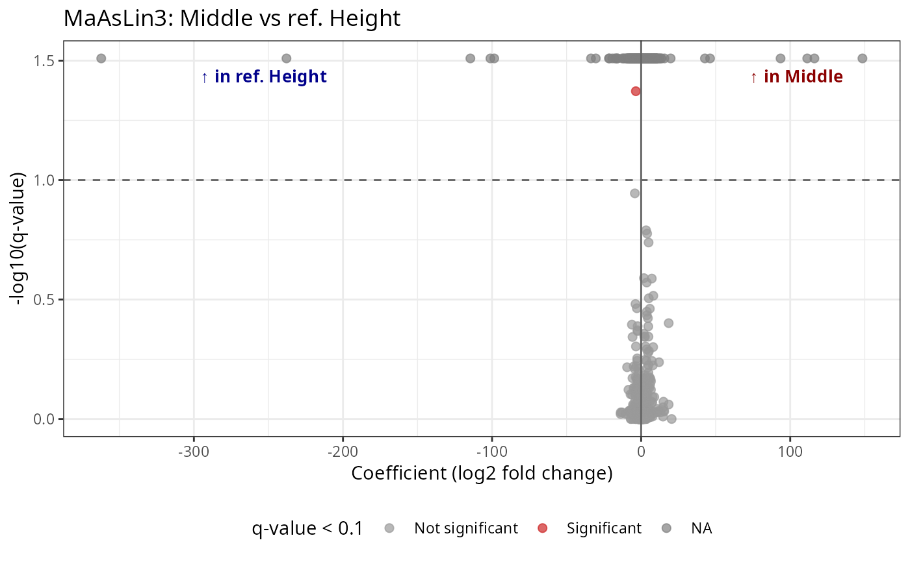
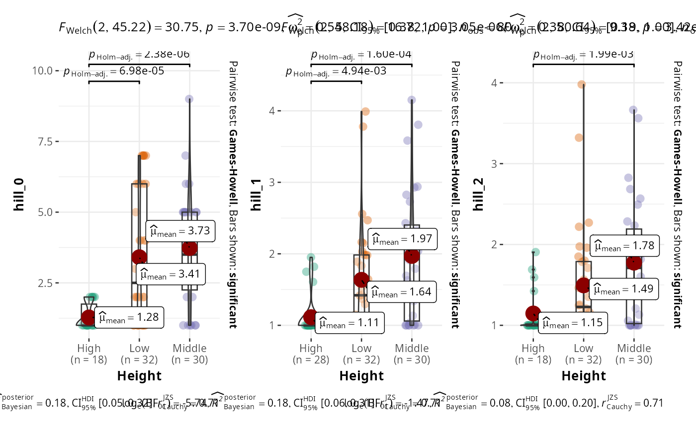

Multiply OTU counts conditionally based on sample metadata
Source:R/fake_creation.R
multiply_counts_pq.RdMultiplies OTU table counts by different values depending on the
level of a factor column in sample_data. Samples whose factor
value does not match any condition (including NA samples) are
left unchanged unless explicitly targeted.
Usage
multiply_counts_pq(
physeq,
fact,
conditions,
multipliers,
prop_taxa = 0.5,
seed = NULL,
compensate = FALSE,
min_prevalence = 0,
round = TRUE,
verbose = TRUE
)Arguments
- physeq
(required) A
phyloseq-classobject obtained using thephyloseqpackage.- fact
(character, required) The name of a column in
sample_data(physeq).- conditions
(character vector, required) Values of
factto match. UseNAto target samples with missing values.- multipliers
(numeric vector, required) Multiplying factors corresponding to each element of
conditions. Must be the same length asconditions.- prop_taxa
(numeric, default 0.5) Proportion of taxa (between 0 and 1) to which the multiplication is applied. Taxa are randomly sampled. Set to 1 to apply to all taxa.
- seed
(integer, default NULL) Random seed for reproducible taxa sampling when
prop_taxa < 1.- compensate
(logical, default FALSE) If TRUE, scale down the non-selected taxa so that total library size per sample is preserved. This creates a pure compositional shift: selected taxa gain relative abundance while the rest lose it. This mode is essential for testing differential abundance methods (ALDEx2, ANCOM-BC) which normalize for library size.
- min_prevalence
(numeric, default 0) Minimum prevalence (proportion of matched samples with non-zero counts) for a taxon to be eligible for selection. Setting this > 0 (e.g. 0.5) ensures that only taxa actually present in the target samples are inflated, producing a stronger and more realistic DA signal.
- round
(logical, default TRUE) If TRUE, round the resulting counts to integers (since OTU tables typically contain integer counts).
- verbose
(logical, default TRUE) If TRUE, print a message with the number of modified taxa.
Value
A phyloseq object with modified OTU counts. The selected taxa
are stored as an attribute accessible via attr(result, "taxa_modified").
Details
Each sample is checked against conditions in order. When the
sample's value in fact matches a condition, its counts are
multiplied by the corresponding multiplier. Samples that do not
match any condition are left unchanged.
When prop_taxa < 1, only a random subset of taxa is affected by
the multiplication. This is useful to simulate differential
abundance where only some taxa respond to a condition.
Simulating differential abundance for DA methods:
DA methods like ALDEx2 and ANCOM-BC work on compositions (relative
abundances). Simply multiplying counts changes library size, which
these methods normalize away. Use compensate = TRUE to create a
real compositional shift: selected taxa are inflated, then non-
selected taxa are scaled down so total counts per sample stay
constant. Combine with min_prevalence > 0 and small prop_taxa
(e.g. 0.05) for a realistic DA signal on few, prevalent taxa.
Compensation limits: When the multiplier is very high and selected taxa already have high counts, the non-selected taxa may not have enough counts to compensate. In such cases, non-selected taxa are zeroed and selected taxa are scaled down to preserve library size. A warning is issued when this occurs. To avoid this, use moderate multipliers (2-3) or select taxa with lower initial abundance.
To target NA values in the factor column, include NA in
conditions (e.g., conditions = c("High", NA)).
Examples
# Multiply counts by 1.2 for "High" samples in half of taxa
d <- multiply_counts_pq(data_fungi,
fact = "Height",
conditions = "High", multipliers = 2
)
#> Modified 710 taxa in 41 matched samples
# Multiple conditions with different multipliers
d2 <- multiply_counts_pq(data_fungi,
fact = "Height",
conditions = c("High", "Low"), multipliers = c(1.5, 0.8)
)
#> Modified 710 taxa in 86 matched samples
# Target NA samples
d3 <- multiply_counts_pq(data_fungi,
fact = "Height",
conditions = c("High", NA), multipliers = c(1.2, 0.5)
)
#> Modified 710 taxa in 95 matched samples
sum(data_fungi@otu_table)
#> [1] 1839124
sum(d@otu_table)
#> [1] 2011678
sum(d2@otu_table)
#> [1] 1904779
sum(d3@otu_table)
#> [1] 1669433
# Apply only to 30% of taxa with a reproducible seed set
d4 <- multiply_counts_pq(data_fungi,
fact = "Height",
conditions = "High", multipliers = 2, prop_taxa = 0.3, seed = 42
)
#> Modified 426 taxa in 41 matched samples
# Simulate DA for compositional methods (ALDEx2, ANCOM-BC):
# Use compensate=TRUE to create a real compositional shift
# Use min_prevalence to select only prevalent taxa
# Use small prop_taxa to affect few taxa strongly
d_da <- multiply_counts_pq(
data_fungi,
fact = "Height",
conditions = "High",
multipliers = 5,
prop_taxa = 0.05,
min_prevalence = 0.5,
compensate = TRUE,
seed = 123
)
#> Warning: 4 sample(s) could not be fully compensated (multiplier too high relative to non-selected taxa abundance). Non-selected taxa were zeroed and selected taxa were scaled down to preserve library size.
#> Modified 1 taxa in 41 matched samples
# Library sizes are preserved
sum(sample_sums(data_fungi))
#> [1] 1839124
sum(sample_sums(d_da))
#> [1] 1839184
# Test with maaslin3
res <- maaslin3_pq(d_da,
formula = "~Height"
)
#> 2026-03-13 14:40:44.187021 INFO::Writing function arguments to log file
#> 2026-03-13 14:40:44.19539 INFO::Verifying options selected are valid
#> 2026-03-13 14:40:44.196239 INFO::Determining format of input files
#> 2026-03-13 14:40:44.197047 INFO::Input format is data samples as rows and metadata samples as rows
#> 2026-03-13 14:40:44.207517 INFO::Running selected normalization method: TSS
#> 2026-03-13 14:40:44.246836 INFO::Writing normalized data to file res_maaslin3/features/data_norm.tsv
#> 2026-03-13 14:40:44.289994 INFO::Filter data based on min abundance, min prevalence, and max prevalence
#> 2026-03-13 14:40:44.290682 INFO::Total samples in data: 185
#> 2026-03-13 14:40:44.291155 INFO::Min samples required with min abundance for a feature not to be filtered: 0.000000
#> 2026-03-13 14:40:44.291697 INFO::Max samples allowed with min abundance for a feature not to be filtered: 186.850000
#> 2026-03-13 14:40:44.483611 INFO::Total filtered features: 0
#> 2026-03-13 14:40:44.484427 INFO::Filtered feature names from abundance, min prevalence, and max prevalence filtering:
#> 2026-03-13 14:40:44.505682 INFO::Total features filtered by non-zero variance filtering: 208
#> 2026-03-13 14:40:44.50655 INFO::Filtered feature names from variance filtering: ASV54, ASV108, ASV122, ASV152, ASV168, ASV207, ASV230, ASV242, ASV253, ASV280, ASV284, ASV298, ASV305, ASV325, ASV332, ASV336, ASV379, ASV381, ASV384, ASV386, ASV393, ASV394, ASV397, ASV406, ASV407, ASV408, ASV430, ASV432, ASV480, ASV484, ASV486, ASV487, ASV495, ASV497, ASV524, ASV528, ASV529, ASV532, ASV537, ASV547, ASV552, ASV557, ASV565, ASV568, ASV588, ASV603, ASV619, ASV620, ASV622, ASV630, ASV636, ASV651, ASV656, ASV658, ASV681, ASV682, ASV689, ASV699, ASV701, ASV716, ASV721, ASV739, ASV745, ASV751, ASV761, ASV763, ASV765, ASV778, ASV804, ASV806, ASV820, ASV826, ASV827, ASV833, ASV835, ASV849, ASV850, ASV851, ASV856, ASV862, ASV866, ASV867, ASV868, ASV869, ASV900, ASV908, ASV924, ASV925, ASV929, ASV931, ASV944, ASV946, ASV952, ASV956, ASV957, ASV960, ASV968, ASV978, ASV985, ASV1000, ASV1013, ASV1033, ASV1045, ASV1055, ASV1056, ASV1061, ASV1062, ASV1064, ASV1081, ASV1089, ASV1092, ASV1098, ASV1102, ASV1104, ASV1117, ASV1118, ASV1124, ASV1157, ASV1166, ASV1174, ASV1178, ASV1181, ASV1188, ASV1197, ASV1207, ASV1215, ASV1226, ASV1235, ASV1255, ASV1266, ASV1280, ASV1281, ASV1291, ASV1295, ASV1298, ASV1322, ASV1324, ASV1325, ASV1331, ASV1333, ASV1344, ASV1349, ASV1354, ASV1358, ASV1364, ASV1377, ASV1385, ASV1394, ASV1395, ASV1402, ASV1405, ASV1407, ASV1416, ASV1417, ASV1426, ASV1432, ASV1444, ASV1447, ASV1448, ASV1451, ASV1453, ASV1456, ASV1457, ASV1465, ASV1470, ASV1471, ASV1476, ASV1480, ASV1481, ASV1482, ASV1485, ASV1489, ASV1524, ASV1529, ASV1535, ASV1538, ASV1539, ASV1541, ASV1546, ASV1559, ASV1561, ASV1563, ASV1582, ASV1583, ASV1587, ASV1591, ASV1595, ASV1597, ASV1600, ASV1610, ASV1611, ASV1618, ASV1627, ASV1638, ASV1642, ASV1648, ASV1662, ASV1665, ASV1672, ASV1680, ASV1705, ASV1708, ASV1709, ASV1710, ASV1714, ASV1716, ASV1719, ASV1726
#> 2026-03-13 14:40:44.507121 INFO::Writing filtered data to file res_maaslin3/features/filtered_data.tsv
#> 2026-03-13 14:40:44.542406 INFO::Running selected transform method: LOG
#> 2026-03-13 14:40:44.555425 INFO::Writing normalized, filtered, transformed data to file res_maaslin3/features/data_transformed.tsv
#> 2026-03-13 14:40:44.591412 INFO::Factor detected for categorial metadata 'Height'. Using as-is.
#> 2026-03-13 14:40:44.592096 INFO::Applying z-score to standardize continuous metadata
#> 2026-03-13 14:40:44.596746 INFO::Running the linear model component
#>
| | 0 % ~calculating 2026-03-13 14:40:44.611646 INFO::Fitting model to feature number 1, ASV2
#> 2026-03-13 14:40:44.615123 INFO::Fitting model to feature number 2, ASV6
#> 2026-03-13 14:40:44.618537 INFO::Fitting model to feature number 3, ASV7
#> 2026-03-13 14:40:44.622038 INFO::Fitting model to feature number 4, ASV8
#> 2026-03-13 14:40:44.625449 INFO::Fitting model to feature number 5, ASV10
#> 2026-03-13 14:40:44.62885 INFO::Fitting model to feature number 6, ASV12
#> 2026-03-13 14:40:44.632639 INFO::Fitting model to feature number 7, ASV13
#> 2026-03-13 14:40:44.635774 INFO::Fitting model to feature number 8, ASV18
#> 2026-03-13 14:40:44.638927 INFO::Fitting model to feature number 9, ASV19
#> 2026-03-13 14:40:44.642124 INFO::Fitting model to feature number 10, ASV22
#> 2026-03-13 14:40:44.645411 INFO::Fitting model to feature number 11, ASV23
#> 2026-03-13 14:40:44.647302 WARNING::Fitting problem for feature 11 returning NA
#> 2026-03-13 14:40:44.648643 INFO::Fitting model to feature number 12, ASV24
#> 2026-03-13 14:40:44.651715 INFO::Fitting model to feature number 13, ASV25
#>
|+ | 1 % ~04s 2026-03-13 14:40:44.654934 INFO::Fitting model to feature number 14, ASV26
#> 2026-03-13 14:40:44.658386 INFO::Fitting model to feature number 15, ASV27
#> 2026-03-13 14:40:44.661626 INFO::Fitting model to feature number 16, ASV28
#> 2026-03-13 14:40:44.66542 INFO::Fitting model to feature number 17, ASV29
#> 2026-03-13 14:40:44.668645 INFO::Fitting model to feature number 18, ASV31
#> 2026-03-13 14:40:44.670237 WARNING::Fitting problem for feature 18 returning NA
#> 2026-03-13 14:40:44.671549 INFO::Fitting model to feature number 19, ASV32
#> 2026-03-13 14:40:44.674897 INFO::Fitting model to feature number 20, ASV33
#> 2026-03-13 14:40:44.678259 INFO::Fitting model to feature number 21, ASV34
#> 2026-03-13 14:40:44.682019 INFO::Fitting model to feature number 22, ASV35
#> 2026-03-13 14:40:44.685122 INFO::Fitting model to feature number 23, ASV38
#> 2026-03-13 14:40:44.688529 INFO::Fitting model to feature number 24, ASV41
#> 2026-03-13 14:40:44.690528 INFO::Fitting model to feature number 25, ASV42
#> 2026-03-13 14:40:44.692402 INFO::Fitting model to feature number 26, ASV43
#>
|++ | 2 % ~04s 2026-03-13 14:40:44.69592 INFO::Fitting model to feature number 27, ASV45
#> 2026-03-13 14:40:44.699555 INFO::Fitting model to feature number 28, ASV46
#> 2026-03-13 14:40:44.702724 INFO::Fitting model to feature number 29, ASV47
#> 2026-03-13 14:40:44.704721 INFO::Fitting model to feature number 30, ASV48
#> 2026-03-13 14:40:44.706419 WARNING::Fitting problem for feature 30 returning NA
#> 2026-03-13 14:40:44.70768 INFO::Fitting model to feature number 31, ASV49
#> 2026-03-13 14:40:44.711052 INFO::Fitting model to feature number 32, ASV50
#> 2026-03-13 14:40:44.713072 WARNING::Fitting problem for feature 32 returning NA
#> 2026-03-13 14:40:44.714807 INFO::Fitting model to feature number 33, ASV51
#> 2026-03-13 14:40:44.717861 INFO::Fitting model to feature number 34, ASV52
#> 2026-03-13 14:40:44.720891 INFO::Fitting model to feature number 35, ASV53
#> 2026-03-13 14:40:44.724296 INFO::Fitting model to feature number 36, ASV55
#> 2026-03-13 14:40:44.727606 INFO::Fitting model to feature number 37, ASV56
#> 2026-03-13 14:40:44.731273 INFO::Fitting model to feature number 38, ASV57
#> 2026-03-13 14:40:44.734499 INFO::Fitting model to feature number 39, ASV58
#>
|++ | 3 % ~04s 2026-03-13 14:40:44.737741 INFO::Fitting model to feature number 40, ASV59
#> 2026-03-13 14:40:44.739853 INFO::Fitting model to feature number 41, ASV60
#> 2026-03-13 14:40:44.743117 INFO::Fitting model to feature number 42, ASV61
#> 2026-03-13 14:40:44.746776 INFO::Fitting model to feature number 43, ASV62
#> 2026-03-13 14:40:44.750356 INFO::Fitting model to feature number 44, ASV63
#> 2026-03-13 14:40:44.753673 INFO::Fitting model to feature number 45, ASV64
#> 2026-03-13 14:40:44.756022 INFO::Fitting model to feature number 46, ASV65
#> 2026-03-13 14:40:44.759443 INFO::Fitting model to feature number 47, ASV67
#> 2026-03-13 14:40:44.76182 INFO::Fitting model to feature number 48, ASV68
#> 2026-03-13 14:40:44.764268 INFO::Fitting model to feature number 49, ASV69
#> 2026-03-13 14:40:44.767753 INFO::Fitting model to feature number 50, ASV70
#> 2026-03-13 14:40:44.771017 INFO::Fitting model to feature number 51, ASV71
#> 2026-03-13 14:40:44.774865 INFO::Fitting model to feature number 52, ASV72
#>
|+++ | 4 % ~04s 2026-03-13 14:40:44.778574 INFO::Fitting model to feature number 53, ASV75
#> 2026-03-13 14:40:44.78261 INFO::Fitting model to feature number 54, ASV77
#> 2026-03-13 14:40:44.784281 WARNING::Fitting problem for feature 54 returning NA
#> 2026-03-13 14:40:44.785489 INFO::Fitting model to feature number 55, ASV78
#> 2026-03-13 14:40:44.788886 INFO::Fitting model to feature number 56, ASV79
#> 2026-03-13 14:40:44.792401 INFO::Fitting model to feature number 57, ASV80
#> 2026-03-13 14:40:44.795805 INFO::Fitting model to feature number 58, ASV81
#> 2026-03-13 14:40:44.799443 INFO::Fitting model to feature number 59, ASV82
#> 2026-03-13 14:40:44.80139 INFO::Fitting model to feature number 60, ASV83
#> 2026-03-13 14:40:44.804763 INFO::Fitting model to feature number 61, ASV84
#> 2026-03-13 14:40:44.806993 INFO::Fitting model to feature number 62, ASV85
#> 2026-03-13 14:40:44.810508 INFO::Fitting model to feature number 63, ASV87
#> 2026-03-13 14:40:44.812681 INFO::Fitting model to feature number 64, ASV89
#> 2026-03-13 14:40:44.816374 INFO::Fitting model to feature number 65, ASV90
#>
|+++ | 5 % ~04s 2026-03-13 14:40:44.819525 INFO::Fitting model to feature number 66, ASV91
#> 2026-03-13 14:40:44.821498 INFO::Fitting model to feature number 67, ASV92
#> 2026-03-13 14:40:44.824968 INFO::Fitting model to feature number 68, ASV93
#> 2026-03-13 14:40:44.82662 WARNING::Fitting problem for feature 68 returning NA
#> 2026-03-13 14:40:44.828111 INFO::Fitting model to feature number 69, ASV94
#> 2026-03-13 14:40:44.831721 INFO::Fitting model to feature number 70, ASV95
#> 2026-03-13 14:40:44.83485 INFO::Fitting model to feature number 71, ASV96
#> 2026-03-13 14:40:44.838421 INFO::Fitting model to feature number 72, ASV98
#> 2026-03-13 14:40:44.841825 INFO::Fitting model to feature number 73, ASV99
#> 2026-03-13 14:40:44.845274 INFO::Fitting model to feature number 74, ASV100
#> 2026-03-13 14:40:44.847467 INFO::Fitting model to feature number 75, ASV101
#> 2026-03-13 14:40:44.850835 INFO::Fitting model to feature number 76, ASV103
#> 2026-03-13 14:40:44.852656 INFO::Fitting model to feature number 77, ASV104
#> 2026-03-13 14:40:44.855895 INFO::Fitting model to feature number 78, ASV105
#>
|++++ | 6 % ~04s 2026-03-13 14:40:44.859567 INFO::Fitting model to feature number 79, ASV106
#> 2026-03-13 14:40:44.863506 INFO::Fitting model to feature number 80, ASV107
#> 2026-03-13 14:40:44.866742 INFO::Fitting model to feature number 81, ASV109
#> 2026-03-13 14:40:44.869941 INFO::Fitting model to feature number 82, ASV111
#> 2026-03-13 14:40:44.873515 INFO::Fitting model to feature number 83, ASV112
#> 2026-03-13 14:40:44.876854 INFO::Fitting model to feature number 84, ASV113
#> 2026-03-13 14:40:44.880246 INFO::Fitting model to feature number 85, ASV115
#> 2026-03-13 14:40:44.883648 INFO::Fitting model to feature number 86, ASV116
#> 2026-03-13 14:40:44.886664 INFO::Fitting model to feature number 87, ASV118
#> 2026-03-13 14:40:44.888728 INFO::Fitting model to feature number 88, ASV119
#> 2026-03-13 14:40:44.892485 INFO::Fitting model to feature number 89, ASV120
#> 2026-03-13 14:40:44.895869 INFO::Fitting model to feature number 90, ASV121
#> 2026-03-13 14:40:44.899653 INFO::Fitting model to feature number 91, ASV124
#>
|++++ | 7 % ~04s 2026-03-13 14:40:44.902998 INFO::Fitting model to feature number 92, ASV126
#> 2026-03-13 14:40:44.906516 INFO::Fitting model to feature number 93, ASV127
#> 2026-03-13 14:40:44.908309 WARNING::Fitting problem for feature 93 returning NA
#> 2026-03-13 14:40:44.909557 INFO::Fitting model to feature number 94, ASV128
#> 2026-03-13 14:40:44.913073 INFO::Fitting model to feature number 95, ASV129
#> 2026-03-13 14:40:44.916514 INFO::Fitting model to feature number 96, ASV130
#> 2026-03-13 14:40:44.919834 INFO::Fitting model to feature number 97, ASV131
#> 2026-03-13 14:40:44.923703 INFO::Fitting model to feature number 98, ASV132
#> 2026-03-13 14:40:44.927407 INFO::Fitting model to feature number 99, ASV133
#> 2026-03-13 14:40:44.93141 INFO::Fitting model to feature number 100, ASV135
#> 2026-03-13 14:40:44.933388 INFO::Fitting model to feature number 101, ASV136
#> 2026-03-13 14:40:44.935356 INFO::Fitting model to feature number 102, ASV137
#> 2026-03-13 14:40:44.938901 INFO::Fitting model to feature number 103, ASV138
#> 2026-03-13 14:40:44.942718 INFO::Fitting model to feature number 104, ASV139
#>
|+++++ | 9 % ~04s 2026-03-13 14:40:44.946599 INFO::Fitting model to feature number 105, ASV142
#> 2026-03-13 14:40:44.950563 INFO::Fitting model to feature number 106, ASV143
#> 2026-03-13 14:40:44.952752 INFO::Fitting model to feature number 107, ASV144
#> 2026-03-13 14:40:44.956646 INFO::Fitting model to feature number 108, ASV145
#> 2026-03-13 14:40:44.960646 INFO::Fitting model to feature number 109, ASV146
#> 2026-03-13 14:40:44.965007 INFO::Fitting model to feature number 110, ASV147
#> 2026-03-13 14:40:44.967054 INFO::Fitting model to feature number 111, ASV148
#> 2026-03-13 14:40:44.970281 INFO::Fitting model to feature number 112, ASV149
#> 2026-03-13 14:40:44.974054 INFO::Fitting model to feature number 113, ASV150
#> 2026-03-13 14:40:44.976085 INFO::Fitting model to feature number 114, ASV151
#> 2026-03-13 14:40:44.979909 INFO::Fitting model to feature number 115, ASV153
#> 2026-03-13 14:40:44.982202 INFO::Fitting model to feature number 116, ASV154
#> 2026-03-13 14:40:44.98549 INFO::Fitting model to feature number 117, ASV157
#>
|+++++ | 10% ~04s 2026-03-13 14:40:44.989418 INFO::Fitting model to feature number 118, ASV158
#> 2026-03-13 14:40:44.99289 INFO::Fitting model to feature number 119, ASV159
#> 2026-03-13 14:40:44.996819 INFO::Fitting model to feature number 120, ASV162
#> 2026-03-13 14:40:45.000154 INFO::Fitting model to feature number 121, ASV163
#> 2026-03-13 14:40:45.002097 INFO::Fitting model to feature number 122, ASV164
#> 2026-03-13 14:40:45.00538 INFO::Fitting model to feature number 123, ASV166
#> 2026-03-13 14:40:45.008826 INFO::Fitting model to feature number 124, ASV167
#> 2026-03-13 14:40:45.012134 INFO::Fitting model to feature number 125, ASV170
#> 2026-03-13 14:40:45.015624 INFO::Fitting model to feature number 126, ASV171
#> 2026-03-13 14:40:45.018848 INFO::Fitting model to feature number 127, ASV172
#> 2026-03-13 14:40:45.022381 INFO::Fitting model to feature number 128, ASV173
#> 2026-03-13 14:40:45.025935 INFO::Fitting model to feature number 129, ASV175
#> 2026-03-13 14:40:45.029471 INFO::Fitting model to feature number 130, ASV176
#>
|++++++ | 11% ~04s 2026-03-13 14:40:45.033244 INFO::Fitting model to feature number 131, ASV178
#> 2026-03-13 14:40:45.037216 INFO::Fitting model to feature number 132, ASV179
#> 2026-03-13 14:40:45.039739 INFO::Fitting model to feature number 133, ASV181
#> 2026-03-13 14:40:45.043015 INFO::Fitting model to feature number 134, ASV182
#> 2026-03-13 14:40:45.046732 INFO::Fitting model to feature number 135, ASV183
#> 2026-03-13 14:40:45.048902 INFO::Fitting model to feature number 136, ASV186
#> 2026-03-13 14:40:45.052287 INFO::Fitting model to feature number 137, ASV187
#> 2026-03-13 14:40:45.055706 INFO::Fitting model to feature number 138, ASV189
#> 2026-03-13 14:40:45.058994 INFO::Fitting model to feature number 139, ASV190
#> 2026-03-13 14:40:45.060917 INFO::Fitting model to feature number 140, ASV192
#> 2026-03-13 14:40:45.064703 INFO::Fitting model to feature number 141, ASV193
#> 2026-03-13 14:40:45.066645 INFO::Fitting model to feature number 142, ASV194
#> 2026-03-13 14:40:45.069797 INFO::Fitting model to feature number 143, ASV195
#>
|++++++ | 12% ~03s 2026-03-13 14:40:45.071937 INFO::Fitting model to feature number 144, ASV196
#> 2026-03-13 14:40:45.075424 INFO::Fitting model to feature number 145, ASV197
#> 2026-03-13 14:40:45.079384 INFO::Fitting model to feature number 146, ASV198
#> 2026-03-13 14:40:45.08153 WARNING::Fitting problem for feature 146 returning NA
#> 2026-03-13 14:40:45.083067 INFO::Fitting model to feature number 147, ASV199
#> 2026-03-13 14:40:45.085271 INFO::Fitting model to feature number 148, ASV201
#> 2026-03-13 14:40:45.088594 INFO::Fitting model to feature number 149, ASV202
#> 2026-03-13 14:40:45.090604 INFO::Fitting model to feature number 150, ASV203
#> 2026-03-13 14:40:45.092665 INFO::Fitting model to feature number 151, ASV205
#> 2026-03-13 14:40:45.096131 INFO::Fitting model to feature number 152, ASV208
#> 2026-03-13 14:40:45.098463 INFO::Fitting model to feature number 153, ASV209
#> 2026-03-13 14:40:45.101843 INFO::Fitting model to feature number 154, ASV210
#> 2026-03-13 14:40:45.103764 INFO::Fitting model to feature number 155, ASV211
#> 2026-03-13 14:40:45.107162 INFO::Fitting model to feature number 156, ASV212
#>
|+++++++ | 13% ~03s 2026-03-13 14:40:45.109498 INFO::Fitting model to feature number 157, ASV214
#> 2026-03-13 14:40:45.113019 INFO::Fitting model to feature number 158, ASV215
#> 2026-03-13 14:40:45.115175 INFO::Fitting model to feature number 159, ASV216
#> 2026-03-13 14:40:45.11844 INFO::Fitting model to feature number 160, ASV217
#> 2026-03-13 14:40:45.122263 INFO::Fitting model to feature number 161, ASV219
#> 2026-03-13 14:40:45.125815 INFO::Fitting model to feature number 162, ASV221
#> 2026-03-13 14:40:45.1298 INFO::Fitting model to feature number 163, ASV222
#> 2026-03-13 14:40:45.131747 WARNING::Fitting problem for feature 163 returning NA
#> 2026-03-13 14:40:45.133341 INFO::Fitting model to feature number 164, ASV223
#> 2026-03-13 14:40:45.136837 INFO::Fitting model to feature number 165, ASV224
#> 2026-03-13 14:40:45.139221 INFO::Fitting model to feature number 166, ASV226
#> 2026-03-13 14:40:45.142823 INFO::Fitting model to feature number 167, ASV227
#> 2026-03-13 14:40:45.14666 INFO::Fitting model to feature number 168, ASV228
#> 2026-03-13 14:40:45.149047 INFO::Fitting model to feature number 169, ASV229
#>
|+++++++ | 14% ~03s 2026-03-13 14:40:45.151379 INFO::Fitting model to feature number 170, ASV231
#> 2026-03-13 14:40:45.153091 WARNING::Fitting problem for feature 170 returning NA
#> 2026-03-13 14:40:45.15471 INFO::Fitting model to feature number 171, ASV233
#> 2026-03-13 14:40:45.158275 INFO::Fitting model to feature number 172, ASV234
#> 2026-03-13 14:40:45.161523 INFO::Fitting model to feature number 173, ASV235
#> 2026-03-13 14:40:45.165629 INFO::Fitting model to feature number 174, ASV237
#> 2026-03-13 14:40:45.16903 INFO::Fitting model to feature number 175, ASV238
#> 2026-03-13 14:40:45.172441 INFO::Fitting model to feature number 176, ASV239
#> 2026-03-13 14:40:45.17603 INFO::Fitting model to feature number 177, ASV240
#> 2026-03-13 14:40:45.17964 INFO::Fitting model to feature number 178, ASV243
#> 2026-03-13 14:40:45.181916 INFO::Fitting model to feature number 179, ASV244
#> 2026-03-13 14:40:45.185326 INFO::Fitting model to feature number 180, ASV245
#> 2026-03-13 14:40:45.187363 INFO::Fitting model to feature number 181, ASV246
#> 2026-03-13 14:40:45.190978 INFO::Fitting model to feature number 182, ASV247
#>
|++++++++ | 15% ~03s 2026-03-13 14:40:45.193102 INFO::Fitting model to feature number 183, ASV248
#> 2026-03-13 14:40:45.196663 INFO::Fitting model to feature number 184, ASV249
#> 2026-03-13 14:40:45.198856 WARNING::Fitting problem for feature 184 returning NA
#> 2026-03-13 14:40:45.200404 INFO::Fitting model to feature number 185, ASV251
#> 2026-03-13 14:40:45.202515 INFO::Fitting model to feature number 186, ASV254
#> 2026-03-13 14:40:45.205196 INFO::Fitting model to feature number 187, ASV255
#> 2026-03-13 14:40:45.208605 INFO::Fitting model to feature number 188, ASV256
#> 2026-03-13 14:40:45.212184 INFO::Fitting model to feature number 189, ASV257
#> 2026-03-13 14:40:45.214561 INFO::Fitting model to feature number 190, ASV258
#> 2026-03-13 14:40:45.216432 INFO::Fitting model to feature number 191, ASV260
#> 2026-03-13 14:40:45.219638 INFO::Fitting model to feature number 192, ASV261
#> 2026-03-13 14:40:45.22303 INFO::Fitting model to feature number 193, ASV262
#> 2026-03-13 14:40:45.226322 INFO::Fitting model to feature number 194, ASV263
#> 2026-03-13 14:40:45.229849 INFO::Fitting model to feature number 195, ASV264
#>
|++++++++ | 16% ~03s 2026-03-13 14:40:45.233636 INFO::Fitting model to feature number 196, ASV265
#> 2026-03-13 14:40:45.236772 INFO::Fitting model to feature number 197, ASV266
#> 2026-03-13 14:40:45.240244 INFO::Fitting model to feature number 198, ASV267
#> 2026-03-13 14:40:45.243572 INFO::Fitting model to feature number 199, ASV270
#> 2026-03-13 14:40:45.245626 INFO::Fitting model to feature number 200, ASV271
#> 2026-03-13 14:40:45.249349 INFO::Fitting model to feature number 201, ASV272
#> 2026-03-13 14:40:45.252766 INFO::Fitting model to feature number 202, ASV273
#> 2026-03-13 14:40:45.256091 INFO::Fitting model to feature number 203, ASV274
#> 2026-03-13 14:40:45.258143 INFO::Fitting model to feature number 204, ASV277
#> 2026-03-13 14:40:45.261648 INFO::Fitting model to feature number 205, ASV278
#> 2026-03-13 14:40:45.265596 INFO::Fitting model to feature number 206, ASV279
#> 2026-03-13 14:40:45.268842 INFO::Fitting model to feature number 207, ASV282
#> 2026-03-13 14:40:45.272269 INFO::Fitting model to feature number 208, ASV283
#>
|+++++++++ | 17% ~03s 2026-03-13 14:40:45.275978 INFO::Fitting model to feature number 209, ASV285
#> 2026-03-13 14:40:45.27805 INFO::Fitting model to feature number 210, ASV286
#> 2026-03-13 14:40:45.281863 INFO::Fitting model to feature number 211, ASV287
#> 2026-03-13 14:40:45.285159 INFO::Fitting model to feature number 212, ASV288
#> 2026-03-13 14:40:45.287346 INFO::Fitting model to feature number 213, ASV292
#> 2026-03-13 14:40:45.290814 INFO::Fitting model to feature number 214, ASV293
#> 2026-03-13 14:40:45.292848 INFO::Fitting model to feature number 215, ASV294
#> 2026-03-13 14:40:45.294909 INFO::Fitting model to feature number 216, ASV295
#> 2026-03-13 14:40:45.298653 INFO::Fitting model to feature number 217, ASV297
#> 2026-03-13 14:40:45.300618 INFO::Fitting model to feature number 218, ASV300
#> 2026-03-13 14:40:45.304033 INFO::Fitting model to feature number 219, ASV302
#> 2026-03-13 14:40:45.307984 INFO::Fitting model to feature number 220, ASV307
#> 2026-03-13 14:40:45.310169 INFO::Fitting model to feature number 221, ASV309
#>
|++++++++++ | 18% ~03s 2026-03-13 14:40:45.314239 INFO::Fitting model to feature number 222, ASV310
#> 2026-03-13 14:40:45.317808 INFO::Fitting model to feature number 223, ASV311
#> 2026-03-13 14:40:45.319797 INFO::Fitting model to feature number 224, ASV312
#> 2026-03-13 14:40:45.323713 INFO::Fitting model to feature number 225, ASV313
#> 2026-03-13 14:40:45.327377 INFO::Fitting model to feature number 226, ASV314
#> 2026-03-13 14:40:45.331785 INFO::Fitting model to feature number 227, ASV315
#> 2026-03-13 14:40:45.335612 INFO::Fitting model to feature number 228, ASV316
#> 2026-03-13 14:40:45.340563 INFO::Fitting model to feature number 229, ASV318
#> 2026-03-13 14:40:45.343127 INFO::Fitting model to feature number 230, ASV320
#> 2026-03-13 14:40:45.345829 INFO::Fitting model to feature number 231, ASV322
#> 2026-03-13 14:40:45.350285 INFO::Fitting model to feature number 232, ASV323
#> 2026-03-13 14:40:45.354069 INFO::Fitting model to feature number 233, ASV327
#> 2026-03-13 14:40:45.358403 INFO::Fitting model to feature number 234, ASV328
#>
|++++++++++ | 19% ~03s 2026-03-13 14:40:45.36258 INFO::Fitting model to feature number 235, ASV329
#> 2026-03-13 14:40:45.366343 INFO::Fitting model to feature number 236, ASV330
#> 2026-03-13 14:40:45.368511 INFO::Fitting model to feature number 237, ASV333
#> 2026-03-13 14:40:45.372044 INFO::Fitting model to feature number 238, ASV334
#> 2026-03-13 14:40:45.375825 INFO::Fitting model to feature number 239, ASV337
#> 2026-03-13 14:40:45.37964 INFO::Fitting model to feature number 240, ASV338
#> 2026-03-13 14:40:45.383189 INFO::Fitting model to feature number 241, ASV339
#> 2026-03-13 14:40:45.386407 INFO::Fitting model to feature number 242, ASV340
#> 2026-03-13 14:40:45.389796 INFO::Fitting model to feature number 243, ASV341
#> 2026-03-13 14:40:45.39334 INFO::Fitting model to feature number 244, ASV342
#> 2026-03-13 14:40:45.396811 INFO::Fitting model to feature number 245, ASV344
#> 2026-03-13 14:40:45.400548 INFO::Fitting model to feature number 246, ASV345
#> 2026-03-13 14:40:45.403965 INFO::Fitting model to feature number 247, ASV346
#>
|+++++++++++ | 20% ~03s 2026-03-13 14:40:45.452885 INFO::Fitting model to feature number 248, ASV347
#> 2026-03-13 14:40:45.45629 INFO::Fitting model to feature number 249, ASV348
#> 2026-03-13 14:40:45.459615 INFO::Fitting model to feature number 250, ASV349
#> 2026-03-13 14:40:45.46316 INFO::Fitting model to feature number 251, ASV350
#> 2026-03-13 14:40:45.466729 INFO::Fitting model to feature number 252, ASV351
#> 2026-03-13 14:40:45.469897 INFO::Fitting model to feature number 253, ASV353
#> 2026-03-13 14:40:45.473199 INFO::Fitting model to feature number 254, ASV355
#> 2026-03-13 14:40:45.47658 INFO::Fitting model to feature number 255, ASV356
#> 2026-03-13 14:40:45.480127 INFO::Fitting model to feature number 256, ASV357
#> 2026-03-13 14:40:45.483522 INFO::Fitting model to feature number 257, ASV358
#> 2026-03-13 14:40:45.486634 INFO::Fitting model to feature number 258, ASV359
#> 2026-03-13 14:40:45.490104 INFO::Fitting model to feature number 259, ASV360
#> 2026-03-13 14:40:45.49213 INFO::Fitting model to feature number 260, ASV362
#>
|+++++++++++ | 21% ~03s 2026-03-13 14:40:45.495801 INFO::Fitting model to feature number 261, ASV364
#> 2026-03-13 14:40:45.499342 INFO::Fitting model to feature number 262, ASV365
#> 2026-03-13 14:40:45.502557 INFO::Fitting model to feature number 263, ASV366
#> 2026-03-13 14:40:45.50613 INFO::Fitting model to feature number 264, ASV367
#> 2026-03-13 14:40:45.509485 INFO::Fitting model to feature number 265, ASV368
#> 2026-03-13 14:40:45.513089 INFO::Fitting model to feature number 266, ASV369
#> 2026-03-13 14:40:45.516722 INFO::Fitting model to feature number 267, ASV371
#> 2026-03-13 14:40:45.520103 INFO::Fitting model to feature number 268, ASV372
#> 2026-03-13 14:40:45.523599 INFO::Fitting model to feature number 269, ASV373
#> 2026-03-13 14:40:45.525371 WARNING::Fitting problem for feature 269 returning NA
#> 2026-03-13 14:40:45.526682 INFO::Fitting model to feature number 270, ASV375
#> 2026-03-13 14:40:45.530424 INFO::Fitting model to feature number 271, ASV376
#> 2026-03-13 14:40:45.533737 INFO::Fitting model to feature number 272, ASV377
#> 2026-03-13 14:40:45.536758 INFO::Fitting model to feature number 273, ASV378
#>
|++++++++++++ | 22% ~03s 2026-03-13 14:40:45.540112 INFO::Fitting model to feature number 274, ASV380
#> 2026-03-13 14:40:45.543252 INFO::Fitting model to feature number 275, ASV382
#> 2026-03-13 14:40:45.545138 INFO::Fitting model to feature number 276, ASV383
#> 2026-03-13 14:40:45.548626 INFO::Fitting model to feature number 277, ASV385
#> 2026-03-13 14:40:45.550549 INFO::Fitting model to feature number 278, ASV388
#> 2026-03-13 14:40:45.552409 INFO::Fitting model to feature number 279, ASV390
#> 2026-03-13 14:40:45.555755 INFO::Fitting model to feature number 280, ASV395
#> 2026-03-13 14:40:45.559099 INFO::Fitting model to feature number 281, ASV399
#> 2026-03-13 14:40:45.561048 INFO::Fitting model to feature number 282, ASV401
#> 2026-03-13 14:40:45.56461 INFO::Fitting model to feature number 283, ASV402
#> 2026-03-13 14:40:45.566526 INFO::Fitting model to feature number 284, ASV404
#> 2026-03-13 14:40:45.56969 INFO::Fitting model to feature number 285, ASV405
#> 2026-03-13 14:40:45.573314 INFO::Fitting model to feature number 286, ASV409
#>
|++++++++++++ | 23% ~03s 2026-03-13 14:40:45.576956 INFO::Fitting model to feature number 287, ASV411
#> 2026-03-13 14:40:45.580513 INFO::Fitting model to feature number 288, ASV412
#> 2026-03-13 14:40:45.582462 INFO::Fitting model to feature number 289, ASV413
#> 2026-03-13 14:40:45.585515 INFO::Fitting model to feature number 290, ASV414
#> 2026-03-13 14:40:45.587068 WARNING::Fitting problem for feature 290 returning NA
#> 2026-03-13 14:40:45.588466 INFO::Fitting model to feature number 291, ASV415
#> 2026-03-13 14:40:45.591587 INFO::Fitting model to feature number 292, ASV416
#> 2026-03-13 14:40:45.593408 INFO::Fitting model to feature number 293, ASV417
#> 2026-03-13 14:40:45.596796 INFO::Fitting model to feature number 294, ASV418
#> 2026-03-13 14:40:45.600046 INFO::Fitting model to feature number 295, ASV419
#> 2026-03-13 14:40:45.603202 INFO::Fitting model to feature number 296, ASV420
#> 2026-03-13 14:40:45.606485 INFO::Fitting model to feature number 297, ASV422
#> 2026-03-13 14:40:45.608452 INFO::Fitting model to feature number 298, ASV423
#> 2026-03-13 14:40:45.611495 INFO::Fitting model to feature number 299, ASV424
#>
|+++++++++++++ | 24% ~03s 2026-03-13 14:40:45.615073 INFO::Fitting model to feature number 300, ASV426
#> 2026-03-13 14:40:45.61819 INFO::Fitting model to feature number 301, ASV427
#> 2026-03-13 14:40:45.620005 INFO::Fitting model to feature number 302, ASV428
#> 2026-03-13 14:40:45.623401 INFO::Fitting model to feature number 303, ASV429
#> 2026-03-13 14:40:45.6254 INFO::Fitting model to feature number 304, ASV431
#> 2026-03-13 14:40:45.62721 INFO::Fitting model to feature number 305, ASV433
#> 2026-03-13 14:40:45.629312 INFO::Fitting model to feature number 306, ASV434
#> 2026-03-13 14:40:45.632987 INFO::Fitting model to feature number 307, ASV438
#> 2026-03-13 14:40:45.636142 INFO::Fitting model to feature number 308, ASV439
#> 2026-03-13 14:40:45.638058 INFO::Fitting model to feature number 309, ASV440
#> 2026-03-13 14:40:45.641403 INFO::Fitting model to feature number 310, ASV442
#> 2026-03-13 14:40:45.643352 INFO::Fitting model to feature number 311, ASV443
#> 2026-03-13 14:40:45.646737 INFO::Fitting model to feature number 312, ASV444
#>
|+++++++++++++ | 26% ~03s 2026-03-13 14:40:45.650314 INFO::Fitting model to feature number 313, ASV445
#> 2026-03-13 14:40:45.653371 INFO::Fitting model to feature number 314, ASV446
#> 2026-03-13 14:40:45.655385 INFO::Fitting model to feature number 315, ASV448
#> 2026-03-13 14:40:45.658698 INFO::Fitting model to feature number 316, ASV449
#> 2026-03-13 14:40:45.660563 INFO::Fitting model to feature number 317, ASV451
#> 2026-03-13 14:40:45.664032 INFO::Fitting model to feature number 318, ASV452
#> 2026-03-13 14:40:45.667166 INFO::Fitting model to feature number 319, ASV453
#> 2026-03-13 14:40:45.670187 INFO::Fitting model to feature number 320, ASV454
#> 2026-03-13 14:40:45.673429 INFO::Fitting model to feature number 321, ASV456
#> 2026-03-13 14:40:45.676616 INFO::Fitting model to feature number 322, ASV457
#> 2026-03-13 14:40:45.67849 INFO::Fitting model to feature number 323, ASV458
#> 2026-03-13 14:40:45.680745 INFO::Fitting model to feature number 324, ASV459
#> 2026-03-13 14:40:45.682706 INFO::Fitting model to feature number 325, ASV460
#>
|++++++++++++++ | 27% ~03s 2026-03-13 14:40:45.685977 INFO::Fitting model to feature number 326, ASV461
#> 2026-03-13 14:40:45.689468 INFO::Fitting model to feature number 327, ASV462
#> 2026-03-13 14:40:45.692897 INFO::Fitting model to feature number 328, ASV463
#> 2026-03-13 14:40:45.696278 INFO::Fitting model to feature number 329, ASV464
#> 2026-03-13 14:40:45.699793 INFO::Fitting model to feature number 330, ASV465
#> 2026-03-13 14:40:45.701492 WARNING::Fitting problem for feature 330 returning NA
#> 2026-03-13 14:40:45.702763 INFO::Fitting model to feature number 331, ASV466
#> 2026-03-13 14:40:45.706443 INFO::Fitting model to feature number 332, ASV467
#> 2026-03-13 14:40:45.710453 INFO::Fitting model to feature number 333, ASV468
#> 2026-03-13 14:40:45.71469 INFO::Fitting model to feature number 334, ASV469
#> 2026-03-13 14:40:45.71843 INFO::Fitting model to feature number 335, ASV470
#> 2026-03-13 14:40:45.722291 INFO::Fitting model to feature number 336, ASV472
#> 2026-03-13 14:40:45.725749 INFO::Fitting model to feature number 337, ASV473
#> 2026-03-13 14:40:45.727645 INFO::Fitting model to feature number 338, ASV474
#>
|++++++++++++++ | 28% ~03s 2026-03-13 14:40:45.731623 INFO::Fitting model to feature number 339, ASV475
#> 2026-03-13 14:40:45.735249 INFO::Fitting model to feature number 340, ASV476
#> 2026-03-13 14:40:45.737755 INFO::Fitting model to feature number 341, ASV477
#> 2026-03-13 14:40:45.741627 INFO::Fitting model to feature number 342, ASV478
#> 2026-03-13 14:40:45.74503 INFO::Fitting model to feature number 343, ASV479
#> 2026-03-13 14:40:45.749174 INFO::Fitting model to feature number 344, ASV481
#> 2026-03-13 14:40:45.752481 INFO::Fitting model to feature number 345, ASV483
#> 2026-03-13 14:40:45.754449 INFO::Fitting model to feature number 346, ASV488
#> 2026-03-13 14:40:45.757688 INFO::Fitting model to feature number 347, ASV489
#> 2026-03-13 14:40:45.75983 INFO::Fitting model to feature number 348, ASV490
#> 2026-03-13 14:40:45.763524 INFO::Fitting model to feature number 349, ASV491
#> 2026-03-13 14:40:45.765516 INFO::Fitting model to feature number 350, ASV492
#> 2026-03-13 14:40:45.768546 INFO::Fitting model to feature number 351, ASV493
#>
|+++++++++++++++ | 29% ~03s 2026-03-13 14:40:45.771793 INFO::Fitting model to feature number 352, ASV494
#> 2026-03-13 14:40:45.775064 INFO::Fitting model to feature number 353, ASV496
#> 2026-03-13 14:40:45.778373 INFO::Fitting model to feature number 354, ASV498
#> 2026-03-13 14:40:45.780496 INFO::Fitting model to feature number 355, ASV499
#> 2026-03-13 14:40:45.78363 INFO::Fitting model to feature number 356, ASV500
#> 2026-03-13 14:40:45.786794 INFO::Fitting model to feature number 357, ASV501
#> 2026-03-13 14:40:45.790052 INFO::Fitting model to feature number 358, ASV502
#> 2026-03-13 14:40:45.793213 INFO::Fitting model to feature number 359, ASV504
#> 2026-03-13 14:40:45.796601 INFO::Fitting model to feature number 360, ASV505
#> 2026-03-13 14:40:45.800317 INFO::Fitting model to feature number 361, ASV507
#> 2026-03-13 14:40:45.803858 INFO::Fitting model to feature number 362, ASV508
#> 2026-03-13 14:40:45.807578 INFO::Fitting model to feature number 363, ASV509
#> 2026-03-13 14:40:45.810843 INFO::Fitting model to feature number 364, ASV511
#>
|+++++++++++++++ | 30% ~03s 2026-03-13 14:40:45.814384 INFO::Fitting model to feature number 365, ASV512
#> 2026-03-13 14:40:45.817744 INFO::Fitting model to feature number 366, ASV514
#> 2026-03-13 14:40:45.820818 INFO::Fitting model to feature number 367, ASV515
#> 2026-03-13 14:40:45.822886 INFO::Fitting model to feature number 368, ASV516
#> 2026-03-13 14:40:45.826112 INFO::Fitting model to feature number 369, ASV517
#> 2026-03-13 14:40:45.829394 INFO::Fitting model to feature number 370, ASV519
#> 2026-03-13 14:40:45.832711 INFO::Fitting model to feature number 371, ASV520
#> 2026-03-13 14:40:45.834577 INFO::Fitting model to feature number 372, ASV521
#> 2026-03-13 14:40:45.837682 INFO::Fitting model to feature number 373, ASV522
#> 2026-03-13 14:40:45.840915 INFO::Fitting model to feature number 374, ASV523
#> 2026-03-13 14:40:45.842875 INFO::Fitting model to feature number 375, ASV526
#> 2026-03-13 14:40:45.846205 INFO::Fitting model to feature number 376, ASV527
#> 2026-03-13 14:40:45.849548 INFO::Fitting model to feature number 377, ASV530
#>
|++++++++++++++++ | 31% ~03s 2026-03-13 14:40:45.851537 INFO::Fitting model to feature number 378, ASV531
#> 2026-03-13 14:40:45.853321 INFO::Fitting model to feature number 379, ASV533
#> 2026-03-13 14:40:45.856542 INFO::Fitting model to feature number 380, ASV534
#> 2026-03-13 14:40:45.859694 INFO::Fitting model to feature number 381, ASV535
#> 2026-03-13 14:40:45.86285 INFO::Fitting model to feature number 382, ASV536
#> 2026-03-13 14:40:45.866205 INFO::Fitting model to feature number 383, ASV538
#> 2026-03-13 14:40:45.869424 INFO::Fitting model to feature number 384, ASV539
#> 2026-03-13 14:40:45.872902 INFO::Fitting model to feature number 385, ASV540
#> 2026-03-13 14:40:45.874961 INFO::Fitting model to feature number 386, ASV541
#> 2026-03-13 14:40:45.878222 INFO::Fitting model to feature number 387, ASV542
#> 2026-03-13 14:40:45.882014 INFO::Fitting model to feature number 388, ASV543
#> 2026-03-13 14:40:45.883995 INFO::Fitting model to feature number 389, ASV544
#> 2026-03-13 14:40:45.887259 INFO::Fitting model to feature number 390, ASV545
#>
|++++++++++++++++ | 32% ~03s 2026-03-13 14:40:45.891023 INFO::Fitting model to feature number 391, ASV546
#> 2026-03-13 14:40:45.894408 INFO::Fitting model to feature number 392, ASV548
#> 2026-03-13 14:40:45.896679 INFO::Fitting model to feature number 393, ASV549
#> 2026-03-13 14:40:45.898849 INFO::Fitting model to feature number 394, ASV550
#> 2026-03-13 14:40:45.902169 INFO::Fitting model to feature number 395, ASV551
#> 2026-03-13 14:40:45.905608 INFO::Fitting model to feature number 396, ASV553
#> 2026-03-13 14:40:45.908875 INFO::Fitting model to feature number 397, ASV554
#> 2026-03-13 14:40:45.910742 INFO::Fitting model to feature number 398, ASV555
#> 2026-03-13 14:40:45.912812 INFO::Fitting model to feature number 399, ASV556
#> 2026-03-13 14:40:45.9163 INFO::Fitting model to feature number 400, ASV558
#> 2026-03-13 14:40:45.919401 INFO::Fitting model to feature number 401, ASV559
#> 2026-03-13 14:40:45.922693 INFO::Fitting model to feature number 402, ASV560
#> 2026-03-13 14:40:45.92502 INFO::Fitting model to feature number 403, ASV561
#>
|+++++++++++++++++ | 33% ~03s 2026-03-13 14:40:45.928584 INFO::Fitting model to feature number 404, ASV562
#> 2026-03-13 14:40:45.932522 INFO::Fitting model to feature number 405, ASV563
#> 2026-03-13 14:40:45.936381 INFO::Fitting model to feature number 406, ASV564
#> 2026-03-13 14:40:45.940042 INFO::Fitting model to feature number 407, ASV566
#> 2026-03-13 14:40:45.943294 INFO::Fitting model to feature number 408, ASV567
#> 2026-03-13 14:40:45.945299 INFO::Fitting model to feature number 409, ASV569
#> 2026-03-13 14:40:45.948874 INFO::Fitting model to feature number 410, ASV570
#> 2026-03-13 14:40:45.952124 INFO::Fitting model to feature number 411, ASV571
#> 2026-03-13 14:40:45.953951 INFO::Fitting model to feature number 412, ASV572
#> 2026-03-13 14:40:45.957212 INFO::Fitting model to feature number 413, ASV573
#> 2026-03-13 14:40:45.96044 INFO::Fitting model to feature number 414, ASV574
#> 2026-03-13 14:40:45.963894 INFO::Fitting model to feature number 415, ASV576
#> 2026-03-13 14:40:45.967035 INFO::Fitting model to feature number 416, ASV577
#>
|++++++++++++++++++ | 34% ~03s 2026-03-13 14:40:45.970275 INFO::Fitting model to feature number 417, ASV578
#> 2026-03-13 14:40:45.971949 WARNING::Fitting problem for feature 417 returning NA
#> 2026-03-13 14:40:45.973307 INFO::Fitting model to feature number 418, ASV579
#> 2026-03-13 14:40:45.975141 INFO::Fitting model to feature number 419, ASV580
#> 2026-03-13 14:40:45.977116 INFO::Fitting model to feature number 420, ASV581
#> 2026-03-13 14:40:45.980617 INFO::Fitting model to feature number 421, ASV582
#> 2026-03-13 14:40:45.982454 WARNING::Fitting problem for feature 421 returning NA
#> 2026-03-13 14:40:45.983721 INFO::Fitting model to feature number 422, ASV584
#> 2026-03-13 14:40:45.986869 INFO::Fitting model to feature number 423, ASV585
#> 2026-03-13 14:40:45.990107 INFO::Fitting model to feature number 424, ASV586
#> 2026-03-13 14:40:45.99345 INFO::Fitting model to feature number 425, ASV587
#> 2026-03-13 14:40:45.996999 INFO::Fitting model to feature number 426, ASV589
#> 2026-03-13 14:40:45.998946 INFO::Fitting model to feature number 427, ASV590
#> 2026-03-13 14:40:46.00072 INFO::Fitting model to feature number 428, ASV591
#> 2026-03-13 14:40:46.003829 INFO::Fitting model to feature number 429, ASV592
#>
|++++++++++++++++++ | 35% ~03s 2026-03-13 14:40:46.007212 INFO::Fitting model to feature number 430, ASV593
#> 2026-03-13 14:40:46.01041 INFO::Fitting model to feature number 431, ASV594
#> 2026-03-13 14:40:46.012365 INFO::Fitting model to feature number 432, ASV595
#> 2026-03-13 14:40:46.015843 INFO::Fitting model to feature number 433, ASV596
#> 2026-03-13 14:40:46.018989 INFO::Fitting model to feature number 434, ASV597
#> 2026-03-13 14:40:46.022182 INFO::Fitting model to feature number 435, ASV598
#> 2026-03-13 14:40:46.025486 INFO::Fitting model to feature number 436, ASV599
#> 2026-03-13 14:40:46.028903 INFO::Fitting model to feature number 437, ASV600
#> 2026-03-13 14:40:46.032264 INFO::Fitting model to feature number 438, ASV602
#> 2026-03-13 14:40:46.035345 INFO::Fitting model to feature number 439, ASV604
#> 2026-03-13 14:40:46.037184 INFO::Fitting model to feature number 440, ASV605
#> 2026-03-13 14:40:46.040468 INFO::Fitting model to feature number 441, ASV607
#> 2026-03-13 14:40:46.042433 INFO::Fitting model to feature number 442, ASV608
#>
|+++++++++++++++++++ | 36% ~03s 2026-03-13 14:40:46.045771 INFO::Fitting model to feature number 443, ASV610
#> 2026-03-13 14:40:46.049124 INFO::Fitting model to feature number 444, ASV612
#> 2026-03-13 14:40:46.052201 INFO::Fitting model to feature number 445, ASV614
#> 2026-03-13 14:40:46.055677 INFO::Fitting model to feature number 446, ASV615
#> 2026-03-13 14:40:46.059232 INFO::Fitting model to feature number 447, ASV616
#> 2026-03-13 14:40:46.062565 INFO::Fitting model to feature number 448, ASV617
#> 2026-03-13 14:40:46.066154 INFO::Fitting model to feature number 449, ASV618
#> 2026-03-13 14:40:46.069355 INFO::Fitting model to feature number 450, ASV621
#> 2026-03-13 14:40:46.072623 INFO::Fitting model to feature number 451, ASV624
#> 2026-03-13 14:40:46.076313 INFO::Fitting model to feature number 452, ASV625
#> 2026-03-13 14:40:46.079968 INFO::Fitting model to feature number 453, ASV626
#> 2026-03-13 14:40:46.083589 INFO::Fitting model to feature number 454, ASV627
#> 2026-03-13 14:40:46.085928 INFO::Fitting model to feature number 455, ASV628
#>
|+++++++++++++++++++ | 37% ~02s 2026-03-13 14:40:46.090255 INFO::Fitting model to feature number 456, ASV629
#> 2026-03-13 14:40:46.092543 INFO::Fitting model to feature number 457, ASV631
#> 2026-03-13 14:40:46.095921 INFO::Fitting model to feature number 458, ASV632
#> 2026-03-13 14:40:46.099427 INFO::Fitting model to feature number 459, ASV633
#> 2026-03-13 14:40:46.101274 INFO::Fitting model to feature number 460, ASV634
#> 2026-03-13 14:40:46.104433 INFO::Fitting model to feature number 461, ASV635
#> 2026-03-13 14:40:46.107685 INFO::Fitting model to feature number 462, ASV637
#> 2026-03-13 14:40:46.111121 INFO::Fitting model to feature number 463, ASV639
#> 2026-03-13 14:40:46.114793 INFO::Fitting model to feature number 464, ASV640
#> 2026-03-13 14:40:46.116783 INFO::Fitting model to feature number 465, ASV641
#> 2026-03-13 14:40:46.119952 INFO::Fitting model to feature number 466, ASV643
#> 2026-03-13 14:40:46.123524 INFO::Fitting model to feature number 467, ASV644
#> 2026-03-13 14:40:46.125525 INFO::Fitting model to feature number 468, ASV645
#>
|++++++++++++++++++++ | 38% ~02s 2026-03-13 14:40:46.128821 INFO::Fitting model to feature number 469, ASV647
#> 2026-03-13 14:40:46.132243 INFO::Fitting model to feature number 470, ASV649
#> 2026-03-13 14:40:46.134112 INFO::Fitting model to feature number 471, ASV650
#> 2026-03-13 14:40:46.137123 INFO::Fitting model to feature number 472, ASV652
#> 2026-03-13 14:40:46.13919 INFO::Fitting model to feature number 473, ASV653
#> 2026-03-13 14:40:46.141054 INFO::Fitting model to feature number 474, ASV654
#> 2026-03-13 14:40:46.142958 INFO::Fitting model to feature number 475, ASV657
#> 2026-03-13 14:40:46.146347 INFO::Fitting model to feature number 476, ASV659
#> 2026-03-13 14:40:46.14852 INFO::Fitting model to feature number 477, ASV660
#> 2026-03-13 14:40:46.151516 INFO::Fitting model to feature number 478, ASV661
#> 2026-03-13 14:40:46.154536 INFO::Fitting model to feature number 479, ASV662
#> 2026-03-13 14:40:46.157747 INFO::Fitting model to feature number 480, ASV664
#> 2026-03-13 14:40:46.159706 INFO::Fitting model to feature number 481, ASV665
#>
|++++++++++++++++++++ | 39% ~02s 2026-03-13 14:40:46.163724 INFO::Fitting model to feature number 482, ASV666
#> 2026-03-13 14:40:46.166909 INFO::Fitting model to feature number 483, ASV667
#> 2026-03-13 14:40:46.170066 INFO::Fitting model to feature number 484, ASV668
#> 2026-03-13 14:40:46.17357 INFO::Fitting model to feature number 485, ASV669
#> 2026-03-13 14:40:46.176817 INFO::Fitting model to feature number 486, ASV670
#> 2026-03-13 14:40:46.180446 INFO::Fitting model to feature number 487, ASV671
#> 2026-03-13 14:40:46.182401 INFO::Fitting model to feature number 488, ASV672
#> 2026-03-13 14:40:46.184205 INFO::Fitting model to feature number 489, ASV673
#> 2026-03-13 14:40:46.187715 INFO::Fitting model to feature number 490, ASV674
#> 2026-03-13 14:40:46.191527 INFO::Fitting model to feature number 491, ASV675
#> 2026-03-13 14:40:46.19584 INFO::Fitting model to feature number 492, ASV676
#> 2026-03-13 14:40:46.198069 INFO::Fitting model to feature number 493, ASV677
#> 2026-03-13 14:40:46.201897 INFO::Fitting model to feature number 494, ASV678
#>
|+++++++++++++++++++++ | 40% ~02s 2026-03-13 14:40:46.205968 INFO::Fitting model to feature number 495, ASV679
#> 2026-03-13 14:40:46.208014 INFO::Fitting model to feature number 496, ASV680
#> 2026-03-13 14:40:46.21148 INFO::Fitting model to feature number 497, ASV683
#> 2026-03-13 14:40:46.213977 INFO::Fitting model to feature number 498, ASV684
#> 2026-03-13 14:40:46.216246 INFO::Fitting model to feature number 499, ASV685
#> 2026-03-13 14:40:46.218282 INFO::Fitting model to feature number 500, ASV686
#> 2026-03-13 14:40:46.221829 INFO::Fitting model to feature number 501, ASV687
#> 2026-03-13 14:40:46.223791 INFO::Fitting model to feature number 502, ASV688
#> 2026-03-13 14:40:46.22563 INFO::Fitting model to feature number 503, ASV691
#> 2026-03-13 14:40:46.229102 INFO::Fitting model to feature number 504, ASV692
#> 2026-03-13 14:40:46.231349 INFO::Fitting model to feature number 505, ASV693
#> 2026-03-13 14:40:46.234526 INFO::Fitting model to feature number 506, ASV694
#> 2026-03-13 14:40:46.237708 INFO::Fitting model to feature number 507, ASV695
#>
|+++++++++++++++++++++ | 41% ~02s 2026-03-13 14:40:46.239857 INFO::Fitting model to feature number 508, ASV696
#> 2026-03-13 14:40:46.243332 INFO::Fitting model to feature number 509, ASV697
#> 2026-03-13 14:40:46.247159 INFO::Fitting model to feature number 510, ASV698
#> 2026-03-13 14:40:46.250537 INFO::Fitting model to feature number 511, ASV700
#> 2026-03-13 14:40:46.253878 INFO::Fitting model to feature number 512, ASV702
#> 2026-03-13 14:40:46.257391 INFO::Fitting model to feature number 513, ASV703
#> 2026-03-13 14:40:46.259499 INFO::Fitting model to feature number 514, ASV704
#> 2026-03-13 14:40:46.263258 INFO::Fitting model to feature number 515, ASV705
#> 2026-03-13 14:40:46.26679 INFO::Fitting model to feature number 516, ASV707
#> 2026-03-13 14:40:46.269997 INFO::Fitting model to feature number 517, ASV710
#> 2026-03-13 14:40:46.272046 INFO::Fitting model to feature number 518, ASV711
#> 2026-03-13 14:40:46.275504 INFO::Fitting model to feature number 519, ASV712
#> 2026-03-13 14:40:46.278842 INFO::Fitting model to feature number 520, ASV713
#>
|++++++++++++++++++++++ | 43% ~02s 2026-03-13 14:40:46.281252 INFO::Fitting model to feature number 521, ASV714
#> 2026-03-13 14:40:46.284421 INFO::Fitting model to feature number 522, ASV715
#> 2026-03-13 14:40:46.287497 INFO::Fitting model to feature number 523, ASV717
#> 2026-03-13 14:40:46.290785 INFO::Fitting model to feature number 524, ASV718
#> 2026-03-13 14:40:46.292758 INFO::Fitting model to feature number 525, ASV720
#> 2026-03-13 14:40:46.296134 INFO::Fitting model to feature number 526, ASV722
#> 2026-03-13 14:40:46.298339 INFO::Fitting model to feature number 527, ASV723
#> 2026-03-13 14:40:46.301559 INFO::Fitting model to feature number 528, ASV724
#> 2026-03-13 14:40:46.305254 INFO::Fitting model to feature number 529, ASV726
#> 2026-03-13 14:40:46.308599 INFO::Fitting model to feature number 530, ASV727
#> 2026-03-13 14:40:46.311955 INFO::Fitting model to feature number 531, ASV728
#> 2026-03-13 14:40:46.313843 WARNING::Fitting problem for feature 531 returning NA
#> 2026-03-13 14:40:46.31513 INFO::Fitting model to feature number 532, ASV729
#> 2026-03-13 14:40:46.318186 INFO::Fitting model to feature number 533, ASV730
#>
|++++++++++++++++++++++ | 44% ~02s 2026-03-13 14:40:46.320112 INFO::Fitting model to feature number 534, ASV731
#> 2026-03-13 14:40:46.323369 INFO::Fitting model to feature number 535, ASV732
#> 2026-03-13 14:40:46.326573 INFO::Fitting model to feature number 536, ASV733
#> 2026-03-13 14:40:46.330139 INFO::Fitting model to feature number 537, ASV734
#> 2026-03-13 14:40:46.333793 INFO::Fitting model to feature number 538, ASV736
#> 2026-03-13 14:40:46.33609 INFO::Fitting model to feature number 539, ASV737
#> 2026-03-13 14:40:46.338177 INFO::Fitting model to feature number 540, ASV738
#> 2026-03-13 14:40:46.341459 INFO::Fitting model to feature number 541, ASV740
#> 2026-03-13 14:40:46.344741 INFO::Fitting model to feature number 542, ASV741
#> 2026-03-13 14:40:46.348674 INFO::Fitting model to feature number 543, ASV742
#> 2026-03-13 14:40:46.352114 INFO::Fitting model to feature number 544, ASV743
#> 2026-03-13 14:40:46.354016 INFO::Fitting model to feature number 545, ASV744
#> 2026-03-13 14:40:46.356042 INFO::Fitting model to feature number 546, ASV746
#>
|+++++++++++++++++++++++ | 45% ~02s 2026-03-13 14:40:46.359464 INFO::Fitting model to feature number 547, ASV747
#> 2026-03-13 14:40:46.361402 INFO::Fitting model to feature number 548, ASV748
#> 2026-03-13 14:40:46.364878 INFO::Fitting model to feature number 549, ASV749
#> 2026-03-13 14:40:46.368059 INFO::Fitting model to feature number 550, ASV752
#> 2026-03-13 14:40:46.369909 INFO::Fitting model to feature number 551, ASV753
#> 2026-03-13 14:40:46.371794 INFO::Fitting model to feature number 552, ASV754
#> 2026-03-13 14:40:46.375018 INFO::Fitting model to feature number 553, ASV755
#> 2026-03-13 14:40:46.378269 INFO::Fitting model to feature number 554, ASV756
#> 2026-03-13 14:40:46.381778 INFO::Fitting model to feature number 555, ASV757
#> 2026-03-13 14:40:46.38368 INFO::Fitting model to feature number 556, ASV758
#> 2026-03-13 14:40:46.386801 INFO::Fitting model to feature number 557, ASV760
#> 2026-03-13 14:40:46.390236 INFO::Fitting model to feature number 558, ASV762
#> 2026-03-13 14:40:46.392205 INFO::Fitting model to feature number 559, ASV764
#>
|+++++++++++++++++++++++ | 46% ~02s 2026-03-13 14:40:46.395633 INFO::Fitting model to feature number 560, ASV766
#> 2026-03-13 14:40:46.399044 INFO::Fitting model to feature number 561, ASV767
#> 2026-03-13 14:40:46.400948 INFO::Fitting model to feature number 562, ASV768
#> 2026-03-13 14:40:46.404042 INFO::Fitting model to feature number 563, ASV769
#> 2026-03-13 14:40:46.407408 INFO::Fitting model to feature number 564, ASV770
#> 2026-03-13 14:40:46.41065 INFO::Fitting model to feature number 565, ASV771
#> 2026-03-13 14:40:46.414126 INFO::Fitting model to feature number 566, ASV772
#> 2026-03-13 14:40:46.417359 INFO::Fitting model to feature number 567, ASV773
#> 2026-03-13 14:40:46.420518 INFO::Fitting model to feature number 568, ASV774
#> 2026-03-13 14:40:46.42387 INFO::Fitting model to feature number 569, ASV775
#> 2026-03-13 14:40:46.427533 INFO::Fitting model to feature number 570, ASV776
#> 2026-03-13 14:40:46.431249 INFO::Fitting model to feature number 571, ASV777
#> 2026-03-13 14:40:46.433279 INFO::Fitting model to feature number 572, ASV779
#>
|++++++++++++++++++++++++ | 47% ~02s 2026-03-13 14:40:46.436791 INFO::Fitting model to feature number 573, ASV780
#> 2026-03-13 14:40:46.440423 INFO::Fitting model to feature number 574, ASV781
#> 2026-03-13 14:40:46.443829 INFO::Fitting model to feature number 575, ASV782
#> 2026-03-13 14:40:46.44745 INFO::Fitting model to feature number 576, ASV783
#> 2026-03-13 14:40:46.450763 INFO::Fitting model to feature number 577, ASV784
#> 2026-03-13 14:40:46.453954 INFO::Fitting model to feature number 578, ASV785
#> 2026-03-13 14:40:46.457541 INFO::Fitting model to feature number 579, ASV786
#> 2026-03-13 14:40:46.459348 WARNING::Fitting problem for feature 579 returning NA
#> 2026-03-13 14:40:46.460679 INFO::Fitting model to feature number 580, ASV787
#> 2026-03-13 14:40:46.464187 INFO::Fitting model to feature number 581, ASV788
#> 2026-03-13 14:40:46.467383 INFO::Fitting model to feature number 582, ASV790
#> 2026-03-13 14:40:46.470516 INFO::Fitting model to feature number 583, ASV792
#> 2026-03-13 14:40:46.473897 INFO::Fitting model to feature number 584, ASV795
#> 2026-03-13 14:40:46.475843 INFO::Fitting model to feature number 585, ASV796
#>
|++++++++++++++++++++++++ | 48% ~02s 2026-03-13 14:40:46.479381 INFO::Fitting model to feature number 586, ASV797
#> 2026-03-13 14:40:46.48284 INFO::Fitting model to feature number 587, ASV798
#> 2026-03-13 14:40:46.484766 INFO::Fitting model to feature number 588, ASV799
#> 2026-03-13 14:40:46.487972 INFO::Fitting model to feature number 589, ASV801
#> 2026-03-13 14:40:46.490209 INFO::Fitting model to feature number 590, ASV802
#> 2026-03-13 14:40:46.493834 INFO::Fitting model to feature number 591, ASV803
#> 2026-03-13 14:40:46.495865 INFO::Fitting model to feature number 592, ASV805
#> 2026-03-13 14:40:46.49924 INFO::Fitting model to feature number 593, ASV807
#> 2026-03-13 14:40:46.502192 INFO::Fitting model to feature number 594, ASV808
#> 2026-03-13 14:40:46.503971 INFO::Fitting model to feature number 595, ASV810
#> 2026-03-13 14:40:46.507287 INFO::Fitting model to feature number 596, ASV811
#> 2026-03-13 14:40:46.510441 INFO::Fitting model to feature number 597, ASV814
#> 2026-03-13 14:40:46.512563 INFO::Fitting model to feature number 598, ASV815
#>
|+++++++++++++++++++++++++ | 49% ~02s 2026-03-13 14:40:46.514745 INFO::Fitting model to feature number 599, ASV816
#> 2026-03-13 14:40:46.517984 INFO::Fitting model to feature number 600, ASV817
#> 2026-03-13 14:40:46.521356 INFO::Fitting model to feature number 601, ASV819
#> 2026-03-13 14:40:46.524688 INFO::Fitting model to feature number 602, ASV821
#> 2026-03-13 14:40:46.527854 INFO::Fitting model to feature number 603, ASV822
#> 2026-03-13 14:40:46.531403 INFO::Fitting model to feature number 604, ASV823
#> 2026-03-13 14:40:46.534547 INFO::Fitting model to feature number 605, ASV824
#> 2026-03-13 14:40:46.537663 INFO::Fitting model to feature number 606, ASV828
#> 2026-03-13 14:40:46.541011 INFO::Fitting model to feature number 607, ASV829
#> 2026-03-13 14:40:46.543052 INFO::Fitting model to feature number 608, ASV830
#> 2026-03-13 14:40:46.544904 INFO::Fitting model to feature number 609, ASV831
#> 2026-03-13 14:40:46.548501 INFO::Fitting model to feature number 610, ASV832
#> 2026-03-13 14:40:46.551664 INFO::Fitting model to feature number 611, ASV834
#>
|+++++++++++++++++++++++++ | 50% ~02s 2026-03-13 14:40:46.554965 INFO::Fitting model to feature number 612, ASV836
#> 2026-03-13 14:40:46.55842 INFO::Fitting model to feature number 613, ASV837
#> 2026-03-13 14:40:46.562451 INFO::Fitting model to feature number 614, ASV838
#> 2026-03-13 14:40:46.565957 INFO::Fitting model to feature number 615, ASV839
#> 2026-03-13 14:40:46.569468 INFO::Fitting model to feature number 616, ASV840
#> 2026-03-13 14:40:46.571717 INFO::Fitting model to feature number 617, ASV841
#> 2026-03-13 14:40:46.57392 INFO::Fitting model to feature number 618, ASV842
#> 2026-03-13 14:40:46.577822 INFO::Fitting model to feature number 619, ASV843
#> 2026-03-13 14:40:46.581941 INFO::Fitting model to feature number 620, ASV844
#> 2026-03-13 14:40:46.585334 INFO::Fitting model to feature number 621, ASV845
#> 2026-03-13 14:40:46.588733 INFO::Fitting model to feature number 622, ASV847
#> 2026-03-13 14:40:46.590432 WARNING::Fitting problem for feature 622 returning NA
#> 2026-03-13 14:40:46.591776 INFO::Fitting model to feature number 623, ASV848
#> 2026-03-13 14:40:46.593718 INFO::Fitting model to feature number 624, ASV852
#>
|++++++++++++++++++++++++++ | 51% ~02s 2026-03-13 14:40:46.597705 INFO::Fitting model to feature number 625, ASV853
#> 2026-03-13 14:40:46.601259 INFO::Fitting model to feature number 626, ASV854
#> 2026-03-13 14:40:46.603601 INFO::Fitting model to feature number 627, ASV855
#> 2026-03-13 14:40:46.607296 INFO::Fitting model to feature number 628, ASV857
#> 2026-03-13 14:40:46.610775 INFO::Fitting model to feature number 629, ASV858
#> 2026-03-13 14:40:46.614578 INFO::Fitting model to feature number 630, ASV859
#> 2026-03-13 14:40:46.618165 INFO::Fitting model to feature number 631, ASV860
#> 2026-03-13 14:40:46.628441 INFO::Fitting model to feature number 632, ASV861
#> 2026-03-13 14:40:46.630582 WARNING::Fitting problem for feature 632 returning NA
#> 2026-03-13 14:40:46.632013 INFO::Fitting model to feature number 633, ASV863
#> 2026-03-13 14:40:46.635371 INFO::Fitting model to feature number 634, ASV865
#> 2026-03-13 14:40:46.639039 INFO::Fitting model to feature number 635, ASV870
#> 2026-03-13 14:40:46.642543 INFO::Fitting model to feature number 636, ASV873
#> 2026-03-13 14:40:46.645963 INFO::Fitting model to feature number 637, ASV874
#>
|+++++++++++++++++++++++++++ | 52% ~02s 2026-03-13 14:40:46.648437 INFO::Fitting model to feature number 638, ASV875
#> 2026-03-13 14:40:46.651768 INFO::Fitting model to feature number 639, ASV876
#> 2026-03-13 14:40:46.654897 INFO::Fitting model to feature number 640, ASV877
#> 2026-03-13 14:40:46.658107 INFO::Fitting model to feature number 641, ASV878
#> 2026-03-13 14:40:46.660037 INFO::Fitting model to feature number 642, ASV879
#> 2026-03-13 14:40:46.661941 INFO::Fitting model to feature number 643, ASV880
#> 2026-03-13 14:40:46.66531 INFO::Fitting model to feature number 644, ASV883
#> 2026-03-13 14:40:46.668641 INFO::Fitting model to feature number 645, ASV884
#> 2026-03-13 14:40:46.671943 INFO::Fitting model to feature number 646, ASV887
#> 2026-03-13 14:40:46.67566 INFO::Fitting model to feature number 647, ASV888
#> 2026-03-13 14:40:46.679149 INFO::Fitting model to feature number 648, ASV890
#> 2026-03-13 14:40:46.681385 INFO::Fitting model to feature number 649, ASV891
#> 2026-03-13 14:40:46.683249 INFO::Fitting model to feature number 650, ASV892
#>
|+++++++++++++++++++++++++++ | 53% ~02s 2026-03-13 14:40:46.686446 INFO::Fitting model to feature number 651, ASV895
#> 2026-03-13 14:40:46.689693 INFO::Fitting model to feature number 652, ASV897
#> 2026-03-13 14:40:46.692927 INFO::Fitting model to feature number 653, ASV898
#> 2026-03-13 14:40:46.696654 INFO::Fitting model to feature number 654, ASV899
#> 2026-03-13 14:40:46.699997 INFO::Fitting model to feature number 655, ASV901
#> 2026-03-13 14:40:46.703109 INFO::Fitting model to feature number 656, ASV902
#> 2026-03-13 14:40:46.70515 INFO::Fitting model to feature number 657, ASV903
#> 2026-03-13 14:40:46.706773 WARNING::Fitting problem for feature 657 returning NA
#> 2026-03-13 14:40:46.708016 INFO::Fitting model to feature number 658, ASV904
#> 2026-03-13 14:40:46.711164 INFO::Fitting model to feature number 659, ASV905
#> 2026-03-13 14:40:46.714701 INFO::Fitting model to feature number 660, ASV906
#> 2026-03-13 14:40:46.71787 INFO::Fitting model to feature number 661, ASV907
#> 2026-03-13 14:40:46.719461 WARNING::Fitting problem for feature 661 returning NA
#> 2026-03-13 14:40:46.720717 INFO::Fitting model to feature number 662, ASV909
#> 2026-03-13 14:40:46.724029 INFO::Fitting model to feature number 663, ASV910
#>
|++++++++++++++++++++++++++++ | 54% ~02s 2026-03-13 14:40:46.726143 INFO::Fitting model to feature number 664, ASV911
#> 2026-03-13 14:40:46.729414 INFO::Fitting model to feature number 665, ASV913
#> 2026-03-13 14:40:46.731514 INFO::Fitting model to feature number 666, ASV914
#> 2026-03-13 14:40:46.734617 INFO::Fitting model to feature number 667, ASV915
#> 2026-03-13 14:40:46.736454 INFO::Fitting model to feature number 668, ASV916
#> 2026-03-13 14:40:46.739745 INFO::Fitting model to feature number 669, ASV917
#> 2026-03-13 14:40:46.742933 INFO::Fitting model to feature number 670, ASV918
#> 2026-03-13 14:40:46.744773 INFO::Fitting model to feature number 671, ASV919
#> 2026-03-13 14:40:46.748201 INFO::Fitting model to feature number 672, ASV920
#> 2026-03-13 14:40:46.751405 INFO::Fitting model to feature number 673, ASV921
#> 2026-03-13 14:40:46.754585 INFO::Fitting model to feature number 674, ASV922
#> 2026-03-13 14:40:46.757853 INFO::Fitting model to feature number 675, ASV923
#> 2026-03-13 14:40:46.761269 INFO::Fitting model to feature number 676, ASV926
#>
|++++++++++++++++++++++++++++ | 55% ~02s 2026-03-13 14:40:46.76492 INFO::Fitting model to feature number 677, ASV927
#> 2026-03-13 14:40:46.768032 INFO::Fitting model to feature number 678, ASV928
#> 2026-03-13 14:40:46.769887 INFO::Fitting model to feature number 679, ASV930
#> 2026-03-13 14:40:46.773153 INFO::Fitting model to feature number 680, ASV932
#> 2026-03-13 14:40:46.776404 INFO::Fitting model to feature number 681, ASV934
#> 2026-03-13 14:40:46.778337 INFO::Fitting model to feature number 682, ASV935
#> 2026-03-13 14:40:46.782238 INFO::Fitting model to feature number 683, ASV936
#> 2026-03-13 14:40:46.785641 INFO::Fitting model to feature number 684, ASV937
#> 2026-03-13 14:40:46.788927 INFO::Fitting model to feature number 685, ASV938
#> 2026-03-13 14:40:46.83399 INFO::Fitting model to feature number 686, ASV939
#> 2026-03-13 14:40:46.837267 INFO::Fitting model to feature number 687, ASV940
#> 2026-03-13 14:40:46.840864 INFO::Fitting model to feature number 688, ASV941
#> 2026-03-13 14:40:46.8442 INFO::Fitting model to feature number 689, ASV942
#>
|+++++++++++++++++++++++++++++ | 56% ~02s 2026-03-13 14:40:46.847827 INFO::Fitting model to feature number 690, ASV943
#> 2026-03-13 14:40:46.849852 INFO::Fitting model to feature number 691, ASV945
#> 2026-03-13 14:40:46.853036 INFO::Fitting model to feature number 692, ASV947
#> 2026-03-13 14:40:46.856435 INFO::Fitting model to feature number 693, ASV948
#> 2026-03-13 14:40:46.859916 INFO::Fitting model to feature number 694, ASV949
#> 2026-03-13 14:40:46.862019 INFO::Fitting model to feature number 695, ASV950
#> 2026-03-13 14:40:46.865544 INFO::Fitting model to feature number 696, ASV951
#> 2026-03-13 14:40:46.867512 INFO::Fitting model to feature number 697, ASV953
#> 2026-03-13 14:40:46.871036 INFO::Fitting model to feature number 698, ASV955
#> 2026-03-13 14:40:46.873306 INFO::Fitting model to feature number 699, ASV958
#> 2026-03-13 14:40:46.876965 INFO::Fitting model to feature number 700, ASV959
#> 2026-03-13 14:40:46.87916 INFO::Fitting model to feature number 701, ASV961
#> 2026-03-13 14:40:46.881591 INFO::Fitting model to feature number 702, ASV962
#>
|+++++++++++++++++++++++++++++ | 57% ~02s 2026-03-13 14:40:46.885525 INFO::Fitting model to feature number 703, ASV963
#> 2026-03-13 14:40:46.888936 INFO::Fitting model to feature number 704, ASV964
#> 2026-03-13 14:40:46.890906 INFO::Fitting model to feature number 705, ASV966
#> 2026-03-13 14:40:46.894193 INFO::Fitting model to feature number 706, ASV967
#> 2026-03-13 14:40:46.898194 INFO::Fitting model to feature number 707, ASV969
#> 2026-03-13 14:40:46.901555 INFO::Fitting model to feature number 708, ASV970
#> 2026-03-13 14:40:46.903427 INFO::Fitting model to feature number 709, ASV971
#> 2026-03-13 14:40:46.905526 INFO::Fitting model to feature number 710, ASV972
#> 2026-03-13 14:40:46.907602 INFO::Fitting model to feature number 711, ASV973
#> 2026-03-13 14:40:46.910814 INFO::Fitting model to feature number 712, ASV974
#> 2026-03-13 14:40:46.914159 INFO::Fitting model to feature number 713, ASV975
#> 2026-03-13 14:40:46.917516 INFO::Fitting model to feature number 714, ASV976
#> 2026-03-13 14:40:46.920726 INFO::Fitting model to feature number 715, ASV977
#>
|++++++++++++++++++++++++++++++ | 59% ~02s 2026-03-13 14:40:46.922994 INFO::Fitting model to feature number 716, ASV979
#> 2026-03-13 14:40:46.925001 INFO::Fitting model to feature number 717, ASV980
#> 2026-03-13 14:40:46.928513 INFO::Fitting model to feature number 718, ASV981
#> 2026-03-13 14:40:46.932116 INFO::Fitting model to feature number 719, ASV983
#> 2026-03-13 14:40:46.935299 INFO::Fitting model to feature number 720, ASV984
#> 2026-03-13 14:40:46.938705 INFO::Fitting model to feature number 721, ASV986
#> 2026-03-13 14:40:46.941962 INFO::Fitting model to feature number 722, ASV987
#> 2026-03-13 14:40:46.943849 INFO::Fitting model to feature number 723, ASV988
#> 2026-03-13 14:40:46.947545 INFO::Fitting model to feature number 724, ASV989
#> 2026-03-13 14:40:46.950627 INFO::Fitting model to feature number 725, ASV990
#> 2026-03-13 14:40:46.953608 INFO::Fitting model to feature number 726, ASV992
#> 2026-03-13 14:40:46.955382 WARNING::Fitting problem for feature 726 returning NA
#> 2026-03-13 14:40:46.956685 INFO::Fitting model to feature number 727, ASV993
#> 2026-03-13 14:40:46.958633 INFO::Fitting model to feature number 728, ASV994
#>
|++++++++++++++++++++++++++++++ | 60% ~02s 2026-03-13 14:40:46.962011 INFO::Fitting model to feature number 729, ASV995
#> 2026-03-13 14:40:46.96427 INFO::Fitting model to feature number 730, ASV996
#> 2026-03-13 14:40:46.967604 INFO::Fitting model to feature number 731, ASV997
#> 2026-03-13 14:40:46.96951 INFO::Fitting model to feature number 732, ASV998
#> 2026-03-13 14:40:46.971404 INFO::Fitting model to feature number 733, ASV999
#> 2026-03-13 14:40:46.975417 INFO::Fitting model to feature number 734, ASV1001
#> 2026-03-13 14:40:46.97887 INFO::Fitting model to feature number 735, ASV1002
#> 2026-03-13 14:40:46.982621 INFO::Fitting model to feature number 736, ASV1003
#> 2026-03-13 14:40:46.985888 INFO::Fitting model to feature number 737, ASV1004
#> 2026-03-13 14:40:46.989396 INFO::Fitting model to feature number 738, ASV1005
#> 2026-03-13 14:40:46.992832 INFO::Fitting model to feature number 739, ASV1006
#> 2026-03-13 14:40:46.996844 INFO::Fitting model to feature number 740, ASV1007
#> 2026-03-13 14:40:47.000235 INFO::Fitting model to feature number 741, ASV1008
#>
|+++++++++++++++++++++++++++++++ | 61% ~02s 2026-03-13 14:40:47.003768 INFO::Fitting model to feature number 742, ASV1010
#> 2026-03-13 14:40:47.006057 INFO::Fitting model to feature number 743, ASV1011
#> 2026-03-13 14:40:47.009409 INFO::Fitting model to feature number 744, ASV1014
#> 2026-03-13 14:40:47.01313 INFO::Fitting model to feature number 745, ASV1015
#> 2026-03-13 14:40:47.0153 WARNING::Fitting problem for feature 745 returning NA
#> 2026-03-13 14:40:47.01697 INFO::Fitting model to feature number 746, ASV1016
#> 2026-03-13 14:40:47.020577 INFO::Fitting model to feature number 747, ASV1017
#> 2026-03-13 14:40:47.024114 INFO::Fitting model to feature number 748, ASV1018
#> 2026-03-13 14:40:47.027487 INFO::Fitting model to feature number 749, ASV1020
#> 2026-03-13 14:40:47.029616 INFO::Fitting model to feature number 750, ASV1021
#> 2026-03-13 14:40:47.03205 INFO::Fitting model to feature number 751, ASV1022
#> 2026-03-13 14:40:47.035664 INFO::Fitting model to feature number 752, ASV1023
#> 2026-03-13 14:40:47.037672 INFO::Fitting model to feature number 753, ASV1024
#> 2026-03-13 14:40:47.03962 INFO::Fitting model to feature number 754, ASV1025
#>
|+++++++++++++++++++++++++++++++ | 62% ~02s 2026-03-13 14:40:47.041648 INFO::Fitting model to feature number 755, ASV1026
#> 2026-03-13 14:40:47.043631 INFO::Fitting model to feature number 756, ASV1027
#> 2026-03-13 14:40:47.047627 INFO::Fitting model to feature number 757, ASV1028
#> 2026-03-13 14:40:47.049866 INFO::Fitting model to feature number 758, ASV1029
#> 2026-03-13 14:40:47.053394 INFO::Fitting model to feature number 759, ASV1030
#> 2026-03-13 14:40:47.057175 INFO::Fitting model to feature number 760, ASV1031
#> 2026-03-13 14:40:47.060547 INFO::Fitting model to feature number 761, ASV1032
#> 2026-03-13 14:40:47.064275 INFO::Fitting model to feature number 762, ASV1035
#> 2026-03-13 14:40:47.067826 INFO::Fitting model to feature number 763, ASV1036
#> 2026-03-13 14:40:47.071139 INFO::Fitting model to feature number 764, ASV1037
#> 2026-03-13 14:40:47.073184 INFO::Fitting model to feature number 765, ASV1038
#> 2026-03-13 14:40:47.075066 INFO::Fitting model to feature number 766, ASV1039
#> 2026-03-13 14:40:47.07851 INFO::Fitting model to feature number 767, ASV1040
#>
|++++++++++++++++++++++++++++++++ | 63% ~01s 2026-03-13 14:40:47.08285 INFO::Fitting model to feature number 768, ASV1041
#> 2026-03-13 14:40:47.084894 INFO::Fitting model to feature number 769, ASV1042
#> 2026-03-13 14:40:47.088148 INFO::Fitting model to feature number 770, ASV1044
#> 2026-03-13 14:40:47.090153 INFO::Fitting model to feature number 771, ASV1046
#> 2026-03-13 14:40:47.093298 INFO::Fitting model to feature number 772, ASV1047
#> 2026-03-13 14:40:47.09732 INFO::Fitting model to feature number 773, ASV1048
#> 2026-03-13 14:40:47.100787 INFO::Fitting model to feature number 774, ASV1049
#> 2026-03-13 14:40:47.104031 INFO::Fitting model to feature number 775, ASV1052
#> 2026-03-13 14:40:47.107448 INFO::Fitting model to feature number 776, ASV1053
#> 2026-03-13 14:40:47.110966 INFO::Fitting model to feature number 777, ASV1057
#> 2026-03-13 14:40:47.114607 INFO::Fitting model to feature number 778, ASV1058
#> 2026-03-13 14:40:47.118328 INFO::Fitting model to feature number 779, ASV1059
#> 2026-03-13 14:40:47.121754 INFO::Fitting model to feature number 780, ASV1063
#>
|++++++++++++++++++++++++++++++++ | 64% ~01s 2026-03-13 14:40:47.125167 INFO::Fitting model to feature number 781, ASV1065
#> 2026-03-13 14:40:47.128409 INFO::Fitting model to feature number 782, ASV1066
#> 2026-03-13 14:40:47.132377 INFO::Fitting model to feature number 783, ASV1067
#> 2026-03-13 14:40:47.13587 INFO::Fitting model to feature number 784, ASV1068
#> 2026-03-13 14:40:47.137836 INFO::Fitting model to feature number 785, ASV1069
#> 2026-03-13 14:40:47.139906 INFO::Fitting model to feature number 786, ASV1070
#> 2026-03-13 14:40:47.141789 INFO::Fitting model to feature number 787, ASV1071
#> 2026-03-13 14:40:47.144945 INFO::Fitting model to feature number 788, ASV1072
#> 2026-03-13 14:40:47.147497 INFO::Fitting model to feature number 789, ASV1073
#> 2026-03-13 14:40:47.150938 INFO::Fitting model to feature number 790, ASV1074
#> 2026-03-13 14:40:47.154485 INFO::Fitting model to feature number 791, ASV1076
#> 2026-03-13 14:40:47.157973 INFO::Fitting model to feature number 792, ASV1078
#> 2026-03-13 14:40:47.161157 INFO::Fitting model to feature number 793, ASV1079
#>
|+++++++++++++++++++++++++++++++++ | 65% ~01s 2026-03-13 14:40:47.16369 INFO::Fitting model to feature number 794, ASV1082
#> 2026-03-13 14:40:47.167189 INFO::Fitting model to feature number 795, ASV1084
#> 2026-03-13 14:40:47.170407 INFO::Fitting model to feature number 796, ASV1085
#> 2026-03-13 14:40:47.17235 INFO::Fitting model to feature number 797, ASV1086
#> 2026-03-13 14:40:47.175894 INFO::Fitting model to feature number 798, ASV1087
#> 2026-03-13 14:40:47.179336 INFO::Fitting model to feature number 799, ASV1090
#> 2026-03-13 14:40:47.183031 INFO::Fitting model to feature number 800, ASV1091
#> 2026-03-13 14:40:47.184728 WARNING::Fitting problem for feature 800 returning NA
#> 2026-03-13 14:40:47.186043 INFO::Fitting model to feature number 801, ASV1093
#> 2026-03-13 14:40:47.189569 INFO::Fitting model to feature number 802, ASV1095
#> 2026-03-13 14:40:47.192933 INFO::Fitting model to feature number 803, ASV1096
#> 2026-03-13 14:40:47.196435 INFO::Fitting model to feature number 804, ASV1097
#> 2026-03-13 14:40:47.199846 INFO::Fitting model to feature number 805, ASV1099
#> 2026-03-13 14:40:47.20176 INFO::Fitting model to feature number 806, ASV1100
#>
|+++++++++++++++++++++++++++++++++ | 66% ~01s 2026-03-13 14:40:47.205393 INFO::Fitting model to feature number 807, ASV1101
#> 2026-03-13 14:40:47.209601 INFO::Fitting model to feature number 808, ASV1103
#> 2026-03-13 14:40:47.213638 INFO::Fitting model to feature number 809, ASV1105
#> 2026-03-13 14:40:47.215964 INFO::Fitting model to feature number 810, ASV1107
#> 2026-03-13 14:40:47.21821 INFO::Fitting model to feature number 811, ASV1108
#> 2026-03-13 14:40:47.221663 INFO::Fitting model to feature number 812, ASV1109
#> 2026-03-13 14:40:47.225984 INFO::Fitting model to feature number 813, ASV1110
#> 2026-03-13 14:40:47.229456 INFO::Fitting model to feature number 814, ASV1111
#> 2026-03-13 14:40:47.233332 INFO::Fitting model to feature number 815, ASV1112
#> 2026-03-13 14:40:47.236922 INFO::Fitting model to feature number 816, ASV1114
#> 2026-03-13 14:40:47.240793 INFO::Fitting model to feature number 817, ASV1115
#> 2026-03-13 14:40:47.242834 INFO::Fitting model to feature number 818, ASV1116
#> 2026-03-13 14:40:47.244929 INFO::Fitting model to feature number 819, ASV1120
#>
|++++++++++++++++++++++++++++++++++ | 67% ~01s 2026-03-13 14:40:47.248754 INFO::Fitting model to feature number 820, ASV1121
#> 2026-03-13 14:40:47.251816 INFO::Fitting model to feature number 821, ASV1122
#> 2026-03-13 14:40:47.255017 INFO::Fitting model to feature number 822, ASV1125
#> 2026-03-13 14:40:47.25828 INFO::Fitting model to feature number 823, ASV1126
#> 2026-03-13 14:40:47.261381 INFO::Fitting model to feature number 824, ASV1127
#> 2026-03-13 14:40:47.263418 INFO::Fitting model to feature number 825, ASV1128
#> 2026-03-13 14:40:47.266748 INFO::Fitting model to feature number 826, ASV1129
#> 2026-03-13 14:40:47.26857 INFO::Fitting model to feature number 827, ASV1131
#> 2026-03-13 14:40:47.270314 INFO::Fitting model to feature number 828, ASV1132
#> 2026-03-13 14:40:47.27204 WARNING::Fitting problem for feature 828 returning NA
#> 2026-03-13 14:40:47.273331 INFO::Fitting model to feature number 829, ASV1133
#> 2026-03-13 14:40:47.276533 INFO::Fitting model to feature number 830, ASV1134
#> 2026-03-13 14:40:47.278108 WARNING::Fitting problem for feature 830 returning NA
#> 2026-03-13 14:40:47.279508 INFO::Fitting model to feature number 831, ASV1135
#> 2026-03-13 14:40:47.281485 INFO::Fitting model to feature number 832, ASV1137
#>
|+++++++++++++++++++++++++++++++++++ | 68% ~01s 2026-03-13 14:40:47.284813 INFO::Fitting model to feature number 833, ASV1138
#> 2026-03-13 14:40:47.288116 INFO::Fitting model to feature number 834, ASV1139
#> 2026-03-13 14:40:47.291478 INFO::Fitting model to feature number 835, ASV1141
#> 2026-03-13 14:40:47.293332 INFO::Fitting model to feature number 836, ASV1143
#> 2026-03-13 14:40:47.295161 INFO::Fitting model to feature number 837, ASV1144
#> 2026-03-13 14:40:47.298587 INFO::Fitting model to feature number 838, ASV1146
#> 2026-03-13 14:40:47.30175 INFO::Fitting model to feature number 839, ASV1147
#> 2026-03-13 14:40:47.303581 INFO::Fitting model to feature number 840, ASV1148
#> 2026-03-13 14:40:47.307046 INFO::Fitting model to feature number 841, ASV1150
#> 2026-03-13 14:40:47.308995 INFO::Fitting model to feature number 842, ASV1151
#> 2026-03-13 14:40:47.312066 INFO::Fitting model to feature number 843, ASV1152
#> 2026-03-13 14:40:47.315578 INFO::Fitting model to feature number 844, ASV1154
#> 2026-03-13 14:40:47.318795 INFO::Fitting model to feature number 845, ASV1155
#>
|+++++++++++++++++++++++++++++++++++ | 69% ~01s 2026-03-13 14:40:47.320764 INFO::Fitting model to feature number 846, ASV1156
#> 2026-03-13 14:40:47.324051 INFO::Fitting model to feature number 847, ASV1158
#> 2026-03-13 14:40:47.326098 INFO::Fitting model to feature number 848, ASV1159
#> 2026-03-13 14:40:47.327993 WARNING::Fitting problem for feature 848 returning NA
#> 2026-03-13 14:40:47.329493 INFO::Fitting model to feature number 849, ASV1160
#> 2026-03-13 14:40:47.332868 INFO::Fitting model to feature number 850, ASV1161
#> 2026-03-13 14:40:47.33631 INFO::Fitting model to feature number 851, ASV1162
#> 2026-03-13 14:40:47.339857 INFO::Fitting model to feature number 852, ASV1163
#> 2026-03-13 14:40:47.343786 INFO::Fitting model to feature number 853, ASV1164
#> 2026-03-13 14:40:47.347677 INFO::Fitting model to feature number 854, ASV1165
#> 2026-03-13 14:40:47.349597 WARNING::Fitting problem for feature 854 returning NA
#> 2026-03-13 14:40:47.350968 INFO::Fitting model to feature number 855, ASV1167
#> 2026-03-13 14:40:47.354187 INFO::Fitting model to feature number 856, ASV1168
#> 2026-03-13 14:40:47.356342 INFO::Fitting model to feature number 857, ASV1169
#> 2026-03-13 14:40:47.358053 WARNING::Fitting problem for feature 857 returning NA
#> 2026-03-13 14:40:47.359338 INFO::Fitting model to feature number 858, ASV1171
#>
|++++++++++++++++++++++++++++++++++++ | 70% ~01s 2026-03-13 14:40:47.362812 INFO::Fitting model to feature number 859, ASV1172
#> 2026-03-13 14:40:47.366868 INFO::Fitting model to feature number 860, ASV1173
#> 2026-03-13 14:40:47.370844 INFO::Fitting model to feature number 861, ASV1175
#> 2026-03-13 14:40:47.374797 INFO::Fitting model to feature number 862, ASV1176
#> 2026-03-13 14:40:47.378454 INFO::Fitting model to feature number 863, ASV1177
#> 2026-03-13 14:40:47.382619 INFO::Fitting model to feature number 864, ASV1179
#> 2026-03-13 14:40:47.384502 WARNING::Fitting problem for feature 864 returning NA
#> 2026-03-13 14:40:47.385841 INFO::Fitting model to feature number 865, ASV1180
#> 2026-03-13 14:40:47.389407 INFO::Fitting model to feature number 866, ASV1182
#> 2026-03-13 14:40:47.391358 INFO::Fitting model to feature number 867, ASV1184
#> 2026-03-13 14:40:47.393304 INFO::Fitting model to feature number 868, ASV1185
#> 2026-03-13 14:40:47.39681 INFO::Fitting model to feature number 869, ASV1186
#> 2026-03-13 14:40:47.400352 INFO::Fitting model to feature number 870, ASV1187
#> 2026-03-13 14:40:47.403552 INFO::Fitting model to feature number 871, ASV1189
#>
|++++++++++++++++++++++++++++++++++++ | 71% ~01s 2026-03-13 14:40:47.40709 INFO::Fitting model to feature number 872, ASV1190
#> 2026-03-13 14:40:47.410261 INFO::Fitting model to feature number 873, ASV1192
#> 2026-03-13 14:40:47.413622 INFO::Fitting model to feature number 874, ASV1193
#> 2026-03-13 14:40:47.416787 INFO::Fitting model to feature number 875, ASV1194
#> 2026-03-13 14:40:47.420147 INFO::Fitting model to feature number 876, ASV1195
#> 2026-03-13 14:40:47.423636 INFO::Fitting model to feature number 877, ASV1198
#> 2026-03-13 14:40:47.426976 INFO::Fitting model to feature number 878, ASV1199
#> 2026-03-13 14:40:47.429336 INFO::Fitting model to feature number 879, ASV1200
#> 2026-03-13 14:40:47.431551 INFO::Fitting model to feature number 880, ASV1203
#> 2026-03-13 14:40:47.43468 INFO::Fitting model to feature number 881, ASV1204
#> 2026-03-13 14:40:47.437851 INFO::Fitting model to feature number 882, ASV1205
#> 2026-03-13 14:40:47.441079 INFO::Fitting model to feature number 883, ASV1206
#> 2026-03-13 14:40:47.444195 INFO::Fitting model to feature number 884, ASV1208
#>
|+++++++++++++++++++++++++++++++++++++ | 72% ~01s 2026-03-13 14:40:47.447777 INFO::Fitting model to feature number 885, ASV1209
#> 2026-03-13 14:40:47.449654 INFO::Fitting model to feature number 886, ASV1210
#> 2026-03-13 14:40:47.45145 INFO::Fitting model to feature number 887, ASV1211
#> 2026-03-13 14:40:47.45469 INFO::Fitting model to feature number 888, ASV1212
#> 2026-03-13 14:40:47.458061 INFO::Fitting model to feature number 889, ASV1213
#> 2026-03-13 14:40:47.461219 INFO::Fitting model to feature number 890, ASV1214
#> 2026-03-13 14:40:47.463655 INFO::Fitting model to feature number 891, ASV1216
#> 2026-03-13 14:40:47.467152 INFO::Fitting model to feature number 892, ASV1217
#> 2026-03-13 14:40:47.470239 INFO::Fitting model to feature number 893, ASV1218
#> 2026-03-13 14:40:47.472297 INFO::Fitting model to feature number 894, ASV1219
#> 2026-03-13 14:40:47.475715 INFO::Fitting model to feature number 895, ASV1221
#> 2026-03-13 14:40:47.477401 WARNING::Fitting problem for feature 895 returning NA
#> 2026-03-13 14:40:47.478808 INFO::Fitting model to feature number 896, ASV1223
#> 2026-03-13 14:40:47.48093 INFO::Fitting model to feature number 897, ASV1224
#>
|+++++++++++++++++++++++++++++++++++++ | 73% ~01s 2026-03-13 14:40:47.484175 INFO::Fitting model to feature number 898, ASV1225
#> 2026-03-13 14:40:47.48732 INFO::Fitting model to feature number 899, ASV1227
#> 2026-03-13 14:40:47.489372 INFO::Fitting model to feature number 900, ASV1228
#> 2026-03-13 14:40:47.491313 INFO::Fitting model to feature number 901, ASV1229
#> 2026-03-13 14:40:47.492922 WARNING::Fitting problem for feature 901 returning NA
#> 2026-03-13 14:40:47.494152 INFO::Fitting model to feature number 902, ASV1230
#> 2026-03-13 14:40:47.497577 INFO::Fitting model to feature number 903, ASV1231
#> 2026-03-13 14:40:47.500896 INFO::Fitting model to feature number 904, ASV1232
#> 2026-03-13 14:40:47.503901 INFO::Fitting model to feature number 905, ASV1233
#> 2026-03-13 14:40:47.507336 INFO::Fitting model to feature number 906, ASV1234
#> 2026-03-13 14:40:47.509034 WARNING::Fitting problem for feature 906 returning NA
#> 2026-03-13 14:40:47.51032 INFO::Fitting model to feature number 907, ASV1236
#> 2026-03-13 14:40:47.513677 INFO::Fitting model to feature number 908, ASV1238
#> 2026-03-13 14:40:47.517415 INFO::Fitting model to feature number 909, ASV1239
#> 2026-03-13 14:40:47.520781 INFO::Fitting model to feature number 910, ASV1241
#>
|++++++++++++++++++++++++++++++++++++++ | 74% ~01s 2026-03-13 14:40:47.524557 INFO::Fitting model to feature number 911, ASV1242
#> 2026-03-13 14:40:47.526425 INFO::Fitting model to feature number 912, ASV1243
#> 2026-03-13 14:40:47.529657 INFO::Fitting model to feature number 913, ASV1245
#> 2026-03-13 14:40:47.531772 INFO::Fitting model to feature number 914, ASV1246
#> 2026-03-13 14:40:47.535 INFO::Fitting model to feature number 915, ASV1247
#> 2026-03-13 14:40:47.536946 INFO::Fitting model to feature number 916, ASV1251
#> 2026-03-13 14:40:47.540357 INFO::Fitting model to feature number 917, ASV1252
#> 2026-03-13 14:40:47.543523 INFO::Fitting model to feature number 918, ASV1253
#> 2026-03-13 14:40:47.546991 INFO::Fitting model to feature number 919, ASV1254
#> 2026-03-13 14:40:47.550474 INFO::Fitting model to feature number 920, ASV1257
#> 2026-03-13 14:40:47.552522 INFO::Fitting model to feature number 921, ASV1258
#> 2026-03-13 14:40:47.555988 INFO::Fitting model to feature number 922, ASV1259
#> 2026-03-13 14:40:47.558052 INFO::Fitting model to feature number 923, ASV1260
#>
|++++++++++++++++++++++++++++++++++++++ | 76% ~01s 2026-03-13 14:40:47.561529 INFO::Fitting model to feature number 924, ASV1261
#> 2026-03-13 14:40:47.565308 INFO::Fitting model to feature number 925, ASV1262
#> 2026-03-13 14:40:47.567412 INFO::Fitting model to feature number 926, ASV1263
#> 2026-03-13 14:40:47.571108 INFO::Fitting model to feature number 927, ASV1264
#> 2026-03-13 14:40:47.574964 INFO::Fitting model to feature number 928, ASV1265
#> 2026-03-13 14:40:47.577132 INFO::Fitting model to feature number 929, ASV1267
#> 2026-03-13 14:40:47.579258 INFO::Fitting model to feature number 930, ASV1268
#> 2026-03-13 14:40:47.582745 INFO::Fitting model to feature number 931, ASV1269
#> 2026-03-13 14:40:47.584729 INFO::Fitting model to feature number 932, ASV1270
#> 2026-03-13 14:40:47.58812 INFO::Fitting model to feature number 933, ASV1271
#> 2026-03-13 14:40:47.590441 INFO::Fitting model to feature number 934, ASV1272
#> 2026-03-13 14:40:47.592386 INFO::Fitting model to feature number 935, ASV1273
#> 2026-03-13 14:40:47.595533 INFO::Fitting model to feature number 936, ASV1274
#>
|+++++++++++++++++++++++++++++++++++++++ | 77% ~01s 2026-03-13 14:40:47.597882 INFO::Fitting model to feature number 937, ASV1275
#> 2026-03-13 14:40:47.601062 INFO::Fitting model to feature number 938, ASV1276
#> 2026-03-13 14:40:47.604152 INFO::Fitting model to feature number 939, ASV1278
#> 2026-03-13 14:40:47.607593 INFO::Fitting model to feature number 940, ASV1279
#> 2026-03-13 14:40:47.611106 INFO::Fitting model to feature number 941, ASV1282
#> 2026-03-13 14:40:47.613406 INFO::Fitting model to feature number 942, ASV1283
#> 2026-03-13 14:40:47.615426 INFO::Fitting model to feature number 943, ASV1284
#> 2026-03-13 14:40:47.61867 INFO::Fitting model to feature number 944, ASV1285
#> 2026-03-13 14:40:47.620569 INFO::Fitting model to feature number 945, ASV1286
#> 2026-03-13 14:40:47.622592 INFO::Fitting model to feature number 946, ASV1287
#> 2026-03-13 14:40:47.625781 INFO::Fitting model to feature number 947, ASV1288
#> 2026-03-13 14:40:47.629063 INFO::Fitting model to feature number 948, ASV1289
#> 2026-03-13 14:40:47.63254 INFO::Fitting model to feature number 949, ASV1290
#>
|+++++++++++++++++++++++++++++++++++++++ | 78% ~01s 2026-03-13 14:40:47.635785 INFO::Fitting model to feature number 950, ASV1293
#> 2026-03-13 14:40:47.639076 INFO::Fitting model to feature number 951, ASV1294
#> 2026-03-13 14:40:47.641063 INFO::Fitting model to feature number 952, ASV1296
#> 2026-03-13 14:40:47.644368 INFO::Fitting model to feature number 953, ASV1297
#> 2026-03-13 14:40:47.647849 INFO::Fitting model to feature number 954, ASV1300
#> 2026-03-13 14:40:47.651047 INFO::Fitting model to feature number 955, ASV1301
#> 2026-03-13 14:40:47.654189 INFO::Fitting model to feature number 956, ASV1302
#> 2026-03-13 14:40:47.657511 INFO::Fitting model to feature number 957, ASV1303
#> 2026-03-13 14:40:47.66071 INFO::Fitting model to feature number 958, ASV1304
#> 2026-03-13 14:40:47.664298 INFO::Fitting model to feature number 959, ASV1305
#> 2026-03-13 14:40:47.666252 INFO::Fitting model to feature number 960, ASV1307
#> 2026-03-13 14:40:47.668084 INFO::Fitting model to feature number 961, ASV1310
#> 2026-03-13 14:40:47.671316 INFO::Fitting model to feature number 962, ASV1311
#>
|++++++++++++++++++++++++++++++++++++++++ | 79% ~01s 2026-03-13 14:40:47.675232 INFO::Fitting model to feature number 963, ASV1312
#> 2026-03-13 14:40:47.678542 INFO::Fitting model to feature number 964, ASV1313
#> 2026-03-13 14:40:47.682193 INFO::Fitting model to feature number 965, ASV1314
#> 2026-03-13 14:40:47.684183 INFO::Fitting model to feature number 966, ASV1315
#> 2026-03-13 14:40:47.687373 INFO::Fitting model to feature number 967, ASV1316
#> 2026-03-13 14:40:47.690786 INFO::Fitting model to feature number 968, ASV1317
#> 2026-03-13 14:40:47.694472 INFO::Fitting model to feature number 969, ASV1319
#> 2026-03-13 14:40:47.696872 INFO::Fitting model to feature number 970, ASV1320
#> 2026-03-13 14:40:47.700249 INFO::Fitting model to feature number 971, ASV1321
#> 2026-03-13 14:40:47.703432 INFO::Fitting model to feature number 972, ASV1323
#> 2026-03-13 14:40:47.706837 INFO::Fitting model to feature number 973, ASV1326
#> 2026-03-13 14:40:47.710392 INFO::Fitting model to feature number 974, ASV1327
#> 2026-03-13 14:40:47.71427 INFO::Fitting model to feature number 975, ASV1328
#>
|++++++++++++++++++++++++++++++++++++++++ | 80% ~01s 2026-03-13 14:40:47.718169 INFO::Fitting model to feature number 976, ASV1330
#> 2026-03-13 14:40:47.720555 INFO::Fitting model to feature number 977, ASV1332
#> 2026-03-13 14:40:47.724577 INFO::Fitting model to feature number 978, ASV1334
#> 2026-03-13 14:40:47.728097 INFO::Fitting model to feature number 979, ASV1335
#> 2026-03-13 14:40:47.730809 INFO::Fitting model to feature number 980, ASV1336
#> 2026-03-13 14:40:47.73456 INFO::Fitting model to feature number 981, ASV1337
#> 2026-03-13 14:40:47.73801 INFO::Fitting model to feature number 982, ASV1338
#> 2026-03-13 14:40:47.740265 INFO::Fitting model to feature number 983, ASV1340
#> 2026-03-13 14:40:47.743829 INFO::Fitting model to feature number 984, ASV1341
#> 2026-03-13 14:40:47.747674 INFO::Fitting model to feature number 985, ASV1342
#> 2026-03-13 14:40:47.751182 INFO::Fitting model to feature number 986, ASV1345
#> 2026-03-13 14:40:47.754552 INFO::Fitting model to feature number 987, ASV1350
#> 2026-03-13 14:40:47.758091 INFO::Fitting model to feature number 988, ASV1351
#>
|+++++++++++++++++++++++++++++++++++++++++ | 81% ~01s 2026-03-13 14:40:47.762429 INFO::Fitting model to feature number 989, ASV1352
#> 2026-03-13 14:40:47.766155 INFO::Fitting model to feature number 990, ASV1353
#> 2026-03-13 14:40:47.769511 INFO::Fitting model to feature number 991, ASV1355
#> 2026-03-13 14:40:47.77161 INFO::Fitting model to feature number 992, ASV1356
#> 2026-03-13 14:40:47.77542 INFO::Fitting model to feature number 993, ASV1359
#> 2026-03-13 14:40:47.77929 INFO::Fitting model to feature number 994, ASV1360
#> 2026-03-13 14:40:47.782776 INFO::Fitting model to feature number 995, ASV1361
#> 2026-03-13 14:40:47.786092 INFO::Fitting model to feature number 996, ASV1362
#> 2026-03-13 14:40:47.78941 INFO::Fitting model to feature number 997, ASV1363
#> 2026-03-13 14:40:47.792786 INFO::Fitting model to feature number 998, ASV1365
#> 2026-03-13 14:40:47.796494 INFO::Fitting model to feature number 999, ASV1366
#> 2026-03-13 14:40:47.799975 INFO::Fitting model to feature number 1000, ASV1367
#> 2026-03-13 14:40:47.801975 INFO::Fitting model to feature number 1001, ASV1368
#>
|+++++++++++++++++++++++++++++++++++++++++ | 82% ~01s 2026-03-13 14:40:47.805856 INFO::Fitting model to feature number 1002, ASV1369
#> 2026-03-13 14:40:47.808045 INFO::Fitting model to feature number 1003, ASV1370
#> 2026-03-13 14:40:47.811334 INFO::Fitting model to feature number 1004, ASV1371
#> 2026-03-13 14:40:47.813369 WARNING::Fitting problem for feature 1004 returning NA
#> 2026-03-13 14:40:47.814836 INFO::Fitting model to feature number 1005, ASV1372
#> 2026-03-13 14:40:47.817939 INFO::Fitting model to feature number 1006, ASV1373
#> 2026-03-13 14:40:47.819751 INFO::Fitting model to feature number 1007, ASV1374
#> 2026-03-13 14:40:47.821794 INFO::Fitting model to feature number 1008, ASV1375
#> 2026-03-13 14:40:47.825173 INFO::Fitting model to feature number 1009, ASV1376
#> 2026-03-13 14:40:47.828356 INFO::Fitting model to feature number 1010, ASV1378
#> 2026-03-13 14:40:47.830847 INFO::Fitting model to feature number 1011, ASV1379
#> 2026-03-13 14:40:47.833027 INFO::Fitting model to feature number 1012, ASV1380
#> 2026-03-13 14:40:47.836257 INFO::Fitting model to feature number 1013, ASV1381
#> 2026-03-13 14:40:47.838247 INFO::Fitting model to feature number 1014, ASV1384
#>
|++++++++++++++++++++++++++++++++++++++++++ | 83% ~01s 2026-03-13 14:40:47.840393 INFO::Fitting model to feature number 1015, ASV1386
#> 2026-03-13 14:40:47.843632 INFO::Fitting model to feature number 1016, ASV1387
#> 2026-03-13 14:40:47.845665 INFO::Fitting model to feature number 1017, ASV1388
#> 2026-03-13 14:40:47.847728 WARNING::Fitting problem for feature 1017 returning NA
#> 2026-03-13 14:40:47.849127 INFO::Fitting model to feature number 1018, ASV1389
#> 2026-03-13 14:40:47.852319 INFO::Fitting model to feature number 1019, ASV1390
#> 2026-03-13 14:40:47.854214 INFO::Fitting model to feature number 1020, ASV1392
#> 2026-03-13 14:40:47.857732 INFO::Fitting model to feature number 1021, ASV1393
#> 2026-03-13 14:40:47.859811 INFO::Fitting model to feature number 1022, ASV1396
#> 2026-03-13 14:40:47.863304 INFO::Fitting model to feature number 1023, ASV1397
#> 2026-03-13 14:40:47.865504 INFO::Fitting model to feature number 1024, ASV1398
#> 2026-03-13 14:40:47.868756 INFO::Fitting model to feature number 1025, ASV1399
#> 2026-03-13 14:40:47.870388 WARNING::Fitting problem for feature 1025 returning NA
#> 2026-03-13 14:40:47.871737 INFO::Fitting model to feature number 1026, ASV1400
#> 2026-03-13 14:40:47.873751 INFO::Fitting model to feature number 1027, ASV1401
#>
|+++++++++++++++++++++++++++++++++++++++++++ | 84% ~01s 2026-03-13 14:40:47.875921 INFO::Fitting model to feature number 1028, ASV1403
#> 2026-03-13 14:40:47.879403 INFO::Fitting model to feature number 1029, ASV1404
#> 2026-03-13 14:40:47.882925 INFO::Fitting model to feature number 1030, ASV1406
#> 2026-03-13 14:40:47.884858 INFO::Fitting model to feature number 1031, ASV1408
#> 2026-03-13 14:40:47.886669 INFO::Fitting model to feature number 1032, ASV1409
#> 2026-03-13 14:40:47.889957 INFO::Fitting model to feature number 1033, ASV1410
#> 2026-03-13 14:40:47.893141 INFO::Fitting model to feature number 1034, ASV1412
#> 2026-03-13 14:40:47.896834 INFO::Fitting model to feature number 1035, ASV1413
#> 2026-03-13 14:40:47.89885 INFO::Fitting model to feature number 1036, ASV1414
#> 2026-03-13 14:40:47.900664 INFO::Fitting model to feature number 1037, ASV1415
#> 2026-03-13 14:40:47.90224 WARNING::Fitting problem for feature 1037 returning NA
#> 2026-03-13 14:40:47.903505 INFO::Fitting model to feature number 1038, ASV1418
#> 2026-03-13 14:40:47.905618 INFO::Fitting model to feature number 1039, ASV1419
#> 2026-03-13 14:40:47.909043 INFO::Fitting model to feature number 1040, ASV1420
#>
|+++++++++++++++++++++++++++++++++++++++++++ | 85% ~01s 2026-03-13 14:40:47.912977 INFO::Fitting model to feature number 1041, ASV1421
#> 2026-03-13 14:40:47.91633 INFO::Fitting model to feature number 1042, ASV1422
#> 2026-03-13 14:40:47.918202 INFO::Fitting model to feature number 1043, ASV1423
#> 2026-03-13 14:40:47.91987 WARNING::Fitting problem for feature 1043 returning NA
#> 2026-03-13 14:40:47.921241 INFO::Fitting model to feature number 1044, ASV1424
#> 2026-03-13 14:40:47.92321 INFO::Fitting model to feature number 1045, ASV1425
#> 2026-03-13 14:40:47.926678 INFO::Fitting model to feature number 1046, ASV1427
#> 2026-03-13 14:40:47.930591 INFO::Fitting model to feature number 1047, ASV1428
#> 2026-03-13 14:40:47.933944 INFO::Fitting model to feature number 1048, ASV1430
#> 2026-03-13 14:40:47.936032 INFO::Fitting model to feature number 1049, ASV1433
#> 2026-03-13 14:40:47.93808 INFO::Fitting model to feature number 1050, ASV1434
#> 2026-03-13 14:40:47.941309 INFO::Fitting model to feature number 1051, ASV1435
#> 2026-03-13 14:40:47.944577 INFO::Fitting model to feature number 1052, ASV1436
#> 2026-03-13 14:40:47.946492 WARNING::Fitting problem for feature 1052 returning NA
#> 2026-03-13 14:40:47.9482 INFO::Fitting model to feature number 1053, ASV1437
#>
|++++++++++++++++++++++++++++++++++++++++++++ | 86% ~01s 2026-03-13 14:40:47.950637 INFO::Fitting model to feature number 1054, ASV1438
#> 2026-03-13 14:40:47.953974 INFO::Fitting model to feature number 1055, ASV1442
#> 2026-03-13 14:40:47.956417 INFO::Fitting model to feature number 1056, ASV1443
#> 2026-03-13 14:40:47.958336 INFO::Fitting model to feature number 1057, ASV1449
#> 2026-03-13 14:40:47.962001 INFO::Fitting model to feature number 1058, ASV1450
#> 2026-03-13 14:40:47.964437 INFO::Fitting model to feature number 1059, ASV1452
#> 2026-03-13 14:40:47.967829 INFO::Fitting model to feature number 1060, ASV1454
#> 2026-03-13 14:40:47.969696 INFO::Fitting model to feature number 1061, ASV1455
#> 2026-03-13 14:40:47.971596 INFO::Fitting model to feature number 1062, ASV1458
#> 2026-03-13 14:40:47.973545 INFO::Fitting model to feature number 1063, ASV1459
#> 2026-03-13 14:40:47.976684 INFO::Fitting model to feature number 1064, ASV1460
#> 2026-03-13 14:40:47.980255 INFO::Fitting model to feature number 1065, ASV1461
#> 2026-03-13 14:40:47.983962 INFO::Fitting model to feature number 1066, ASV1462
#>
|++++++++++++++++++++++++++++++++++++++++++++ | 87% ~00s 2026-03-13 14:40:47.987265 INFO::Fitting model to feature number 1067, ASV1463
#> 2026-03-13 14:40:47.99054 INFO::Fitting model to feature number 1068, ASV1466
#> 2026-03-13 14:40:47.993701 INFO::Fitting model to feature number 1069, ASV1467
#> 2026-03-13 14:40:47.997518 INFO::Fitting model to feature number 1070, ASV1468
#> 2026-03-13 14:40:48.000932 INFO::Fitting model to feature number 1071, ASV1469
#> 2026-03-13 14:40:48.002584 WARNING::Fitting problem for feature 1071 returning NA
#> 2026-03-13 14:40:48.003805 INFO::Fitting model to feature number 1072, ASV1472
#> 2026-03-13 14:40:48.005789 INFO::Fitting model to feature number 1073, ASV1477
#> 2026-03-13 14:40:48.008968 INFO::Fitting model to feature number 1074, ASV1478
#> 2026-03-13 14:40:48.012316 INFO::Fitting model to feature number 1075, ASV1479
#> 2026-03-13 14:40:48.014575 INFO::Fitting model to feature number 1076, ASV1483
#> 2026-03-13 14:40:48.017878 INFO::Fitting model to feature number 1077, ASV1484
#> 2026-03-13 14:40:48.021134 INFO::Fitting model to feature number 1078, ASV1486
#> 2026-03-13 14:40:48.024314 INFO::Fitting model to feature number 1079, ASV1487
#>
|+++++++++++++++++++++++++++++++++++++++++++++ | 88% ~00s 2026-03-13 14:40:48.027745 INFO::Fitting model to feature number 1080, ASV1488
#> 2026-03-13 14:40:48.030005 INFO::Fitting model to feature number 1081, ASV1490
#> 2026-03-13 14:40:48.032312 INFO::Fitting model to feature number 1082, ASV1492
#> 2026-03-13 14:40:48.035576 INFO::Fitting model to feature number 1083, ASV1493
#> 2026-03-13 14:40:48.038934 INFO::Fitting model to feature number 1084, ASV1494
#> 2026-03-13 14:40:48.04222 INFO::Fitting model to feature number 1085, ASV1495
#> 2026-03-13 14:40:48.045484 INFO::Fitting model to feature number 1086, ASV1496
#> 2026-03-13 14:40:48.049239 INFO::Fitting model to feature number 1087, ASV1497
#> 2026-03-13 14:40:48.05249 INFO::Fitting model to feature number 1088, ASV1498
#> 2026-03-13 14:40:48.054376 INFO::Fitting model to feature number 1089, ASV1500
#> 2026-03-13 14:40:48.057586 INFO::Fitting model to feature number 1090, ASV1501
#> 2026-03-13 14:40:48.060661 INFO::Fitting model to feature number 1091, ASV1502
#> 2026-03-13 14:40:48.064004 INFO::Fitting model to feature number 1092, ASV1503
#>
|+++++++++++++++++++++++++++++++++++++++++++++ | 89% ~00s 2026-03-13 14:40:48.066045 INFO::Fitting model to feature number 1093, ASV1504
#> 2026-03-13 14:40:48.067689 WARNING::Fitting problem for feature 1093 returning NA
#> 2026-03-13 14:40:48.069262 INFO::Fitting model to feature number 1094, ASV1507
#> 2026-03-13 14:40:48.072839 INFO::Fitting model to feature number 1095, ASV1509
#> 2026-03-13 14:40:48.07481 INFO::Fitting model to feature number 1096, ASV1510
#> 2026-03-13 14:40:48.077034 INFO::Fitting model to feature number 1097, ASV1513
#> 2026-03-13 14:40:48.08101 INFO::Fitting model to feature number 1098, ASV1515
#> 2026-03-13 14:40:48.0831 INFO::Fitting model to feature number 1099, ASV1516
#> 2026-03-13 14:40:48.086548 INFO::Fitting model to feature number 1100, ASV1517
#> 2026-03-13 14:40:48.089828 INFO::Fitting model to feature number 1101, ASV1518
#> 2026-03-13 14:40:48.092921 INFO::Fitting model to feature number 1102, ASV1521
#> 2026-03-13 14:40:48.094778 INFO::Fitting model to feature number 1103, ASV1523
#> 2026-03-13 14:40:48.097041 INFO::Fitting model to feature number 1104, ASV1525
#> 2026-03-13 14:40:48.100339 INFO::Fitting model to feature number 1105, ASV1526
#>
|++++++++++++++++++++++++++++++++++++++++++++++ | 90% ~00s 2026-03-13 14:40:48.102297 INFO::Fitting model to feature number 1106, ASV1527
#> 2026-03-13 14:40:48.104048 INFO::Fitting model to feature number 1107, ASV1528
#> 2026-03-13 14:40:48.106138 INFO::Fitting model to feature number 1108, ASV1531
#> 2026-03-13 14:40:48.109588 INFO::Fitting model to feature number 1109, ASV1532
#> 2026-03-13 14:40:48.111398 INFO::Fitting model to feature number 1110, ASV1533
#> 2026-03-13 14:40:48.11546 INFO::Fitting model to feature number 1111, ASV1534
#> 2026-03-13 14:40:48.117308 WARNING::Fitting problem for feature 1111 returning NA
#> 2026-03-13 14:40:48.118651 INFO::Fitting model to feature number 1112, ASV1536
#> 2026-03-13 14:40:48.121991 INFO::Fitting model to feature number 1113, ASV1537
#> 2026-03-13 14:40:48.123883 INFO::Fitting model to feature number 1114, ASV1542
#> 2026-03-13 14:40:48.125723 INFO::Fitting model to feature number 1115, ASV1543
#> 2026-03-13 14:40:48.127494 INFO::Fitting model to feature number 1116, ASV1544
#> 2026-03-13 14:40:48.131287 INFO::Fitting model to feature number 1117, ASV1545
#> 2026-03-13 14:40:48.133298 INFO::Fitting model to feature number 1118, ASV1548
#>
|++++++++++++++++++++++++++++++++++++++++++++++ | 91% ~00s 2026-03-13 14:40:48.135229 INFO::Fitting model to feature number 1119, ASV1549
#> 2026-03-13 14:40:48.137241 INFO::Fitting model to feature number 1120, ASV1550
#> 2026-03-13 14:40:48.139288 INFO::Fitting model to feature number 1121, ASV1551
#> 2026-03-13 14:40:48.141101 INFO::Fitting model to feature number 1122, ASV1552
#> 2026-03-13 14:40:48.144326 INFO::Fitting model to feature number 1123, ASV1553
#> 2026-03-13 14:40:48.14637 INFO::Fitting model to feature number 1124, ASV1554
#> 2026-03-13 14:40:48.150033 INFO::Fitting model to feature number 1125, ASV1557
#> 2026-03-13 14:40:48.153219 INFO::Fitting model to feature number 1126, ASV1558
#> 2026-03-13 14:40:48.156416 INFO::Fitting model to feature number 1127, ASV1560
#> 2026-03-13 14:40:48.159525 INFO::Fitting model to feature number 1128, ASV1562
#> 2026-03-13 14:40:48.161355 INFO::Fitting model to feature number 1129, ASV1564
#> 2026-03-13 14:40:48.163397 INFO::Fitting model to feature number 1130, ASV1565
#> 2026-03-13 14:40:48.165384 INFO::Fitting model to feature number 1131, ASV1568
#>
|+++++++++++++++++++++++++++++++++++++++++++++++ | 93% ~00s 2026-03-13 14:40:48.167345 INFO::Fitting model to feature number 1132, ASV1569
#> 2026-03-13 14:40:48.169271 INFO::Fitting model to feature number 1133, ASV1570
#> 2026-03-13 14:40:48.172668 INFO::Fitting model to feature number 1134, ASV1571
#> 2026-03-13 14:40:48.17453 INFO::Fitting model to feature number 1135, ASV1573
#> 2026-03-13 14:40:48.177673 INFO::Fitting model to feature number 1136, ASV1574
#> 2026-03-13 14:40:48.218796 INFO::Fitting model to feature number 1137, ASV1575
#> 2026-03-13 14:40:48.220997 INFO::Fitting model to feature number 1138, ASV1576
#> 2026-03-13 14:40:48.223125 INFO::Fitting model to feature number 1139, ASV1577
#> 2026-03-13 14:40:48.22495 INFO::Fitting model to feature number 1140, ASV1578
#> 2026-03-13 14:40:48.226787 INFO::Fitting model to feature number 1141, ASV1580
#> 2026-03-13 14:40:48.230011 INFO::Fitting model to feature number 1142, ASV1581
#> 2026-03-13 14:40:48.233319 INFO::Fitting model to feature number 1143, ASV1584
#> 2026-03-13 14:40:48.235294 INFO::Fitting model to feature number 1144, ASV1585
#>
|+++++++++++++++++++++++++++++++++++++++++++++++ | 94% ~00s 2026-03-13 14:40:48.237432 INFO::Fitting model to feature number 1145, ASV1586
#> 2026-03-13 14:40:48.240811 INFO::Fitting model to feature number 1146, ASV1588
#> 2026-03-13 14:40:48.242707 INFO::Fitting model to feature number 1147, ASV1589
#> 2026-03-13 14:40:48.244478 INFO::Fitting model to feature number 1148, ASV1592
#> 2026-03-13 14:40:48.247821 INFO::Fitting model to feature number 1149, ASV1593
#> 2026-03-13 14:40:48.251035 INFO::Fitting model to feature number 1150, ASV1594
#> 2026-03-13 14:40:48.25296 INFO::Fitting model to feature number 1151, ASV1601
#> 2026-03-13 14:40:48.256325 INFO::Fitting model to feature number 1152, ASV1602
#> 2026-03-13 14:40:48.259502 INFO::Fitting model to feature number 1153, ASV1603
#> 2026-03-13 14:40:48.261318 INFO::Fitting model to feature number 1154, ASV1604
#> 2026-03-13 14:40:48.263112 WARNING::Fitting problem for feature 1154 returning NA
#> 2026-03-13 14:40:48.264607 INFO::Fitting model to feature number 1155, ASV1605
#> 2026-03-13 14:40:48.267853 INFO::Fitting model to feature number 1156, ASV1606
#> 2026-03-13 14:40:48.271653 INFO::Fitting model to feature number 1157, ASV1607
#>
|++++++++++++++++++++++++++++++++++++++++++++++++ | 95% ~00s 2026-03-13 14:40:48.273736 INFO::Fitting model to feature number 1158, ASV1609
#> 2026-03-13 14:40:48.275265 WARNING::Fitting problem for feature 1158 returning NA
#> 2026-03-13 14:40:48.276564 INFO::Fitting model to feature number 1159, ASV1612
#> 2026-03-13 14:40:48.279998 INFO::Fitting model to feature number 1160, ASV1613
#> 2026-03-13 14:40:48.283209 INFO::Fitting model to feature number 1161, ASV1614
#> 2026-03-13 14:40:48.285301 INFO::Fitting model to feature number 1162, ASV1615
#> 2026-03-13 14:40:48.287466 INFO::Fitting model to feature number 1163, ASV1616
#> 2026-03-13 14:40:48.289458 INFO::Fitting model to feature number 1164, ASV1620
#> 2026-03-13 14:40:48.291187 INFO::Fitting model to feature number 1165, ASV1621
#> 2026-03-13 14:40:48.294408 INFO::Fitting model to feature number 1166, ASV1622
#> 2026-03-13 14:40:48.296341 WARNING::Fitting problem for feature 1166 returning NA
#> 2026-03-13 14:40:48.297784 INFO::Fitting model to feature number 1167, ASV1624
#> 2026-03-13 14:40:48.299601 INFO::Fitting model to feature number 1168, ASV1625
#> 2026-03-13 14:40:48.303168 INFO::Fitting model to feature number 1169, ASV1628
#> 2026-03-13 14:40:48.305392 INFO::Fitting model to feature number 1170, ASV1629
#>
|++++++++++++++++++++++++++++++++++++++++++++++++ | 96% ~00s 2026-03-13 14:40:48.308663 INFO::Fitting model to feature number 1171, ASV1630
#> 2026-03-13 14:40:48.31178 INFO::Fitting model to feature number 1172, ASV1631
#> 2026-03-13 14:40:48.313754 INFO::Fitting model to feature number 1173, ASV1632
#> 2026-03-13 14:40:48.315765 INFO::Fitting model to feature number 1174, ASV1633
#> 2026-03-13 14:40:48.317971 INFO::Fitting model to feature number 1175, ASV1634
#> 2026-03-13 14:40:48.320035 INFO::Fitting model to feature number 1176, ASV1635
#> 2026-03-13 14:40:48.32341 INFO::Fitting model to feature number 1177, ASV1636
#> 2026-03-13 14:40:48.325328 INFO::Fitting model to feature number 1178, ASV1639
#> 2026-03-13 14:40:48.328648 INFO::Fitting model to feature number 1179, ASV1641
#> 2026-03-13 14:40:48.330534 WARNING::Fitting problem for feature 1179 returning NA
#> 2026-03-13 14:40:48.332266 INFO::Fitting model to feature number 1180, ASV1644
#> 2026-03-13 14:40:48.334947 INFO::Fitting model to feature number 1181, ASV1645
#> 2026-03-13 14:40:48.337693 INFO::Fitting model to feature number 1182, ASV1649
#> 2026-03-13 14:40:48.341306 INFO::Fitting model to feature number 1183, ASV1650
#>
|+++++++++++++++++++++++++++++++++++++++++++++++++ | 97% ~00s 2026-03-13 14:40:48.344656 INFO::Fitting model to feature number 1184, ASV1651
#> 2026-03-13 14:40:48.346636 WARNING::Fitting problem for feature 1184 returning NA
#> 2026-03-13 14:40:48.348382 INFO::Fitting model to feature number 1185, ASV1653
#> 2026-03-13 14:40:48.350677 INFO::Fitting model to feature number 1186, ASV1654
#> 2026-03-13 14:40:48.352919 INFO::Fitting model to feature number 1187, ASV1656
#> 2026-03-13 14:40:48.354879 INFO::Fitting model to feature number 1188, ASV1657
#> 2026-03-13 14:40:48.358108 INFO::Fitting model to feature number 1189, ASV1658
#> 2026-03-13 14:40:48.361182 INFO::Fitting model to feature number 1190, ASV1661
#> 2026-03-13 14:40:48.364568 INFO::Fitting model to feature number 1191, ASV1663
#> 2026-03-13 14:40:48.366162 WARNING::Fitting problem for feature 1191 returning NA
#> 2026-03-13 14:40:48.367594 INFO::Fitting model to feature number 1192, ASV1664
#> 2026-03-13 14:40:48.369982 INFO::Fitting model to feature number 1193, ASV1666
#> 2026-03-13 14:40:48.37338 INFO::Fitting model to feature number 1194, ASV1667
#> 2026-03-13 14:40:48.375273 INFO::Fitting model to feature number 1195, ASV1670
#> 2026-03-13 14:40:48.377053 INFO::Fitting model to feature number 1196, ASV1671
#>
|+++++++++++++++++++++++++++++++++++++++++++++++++ | 98% ~00s 2026-03-13 14:40:48.37907 INFO::Fitting model to feature number 1197, ASV1673
#> 2026-03-13 14:40:48.381059 INFO::Fitting model to feature number 1198, ASV1674
#> 2026-03-13 14:40:48.384472 INFO::Fitting model to feature number 1199, ASV1677
#> 2026-03-13 14:40:48.388171 INFO::Fitting model to feature number 1200, ASV1681
#> 2026-03-13 14:40:48.390093 INFO::Fitting model to feature number 1201, ASV1683
#> 2026-03-13 14:40:48.393387 INFO::Fitting model to feature number 1202, ASV1684
#> 2026-03-13 14:40:48.395312 INFO::Fitting model to feature number 1203, ASV1687
#> 2026-03-13 14:40:48.397091 WARNING::Fitting problem for feature 1203 returning NA
#> 2026-03-13 14:40:48.398386 INFO::Fitting model to feature number 1204, ASV1689
#> 2026-03-13 14:40:48.402048 INFO::Fitting model to feature number 1205, ASV1690
#> 2026-03-13 14:40:48.406102 INFO::Fitting model to feature number 1206, ASV1691
#> 2026-03-13 14:40:48.409841 INFO::Fitting model to feature number 1207, ASV1694
#> 2026-03-13 14:40:48.411881 INFO::Fitting model to feature number 1208, ASV1697
#> 2026-03-13 14:40:48.41544 INFO::Fitting model to feature number 1209, ASV1704
#>
|++++++++++++++++++++++++++++++++++++++++++++++++++| 99% ~00s 2026-03-13 14:40:48.417643 INFO::Fitting model to feature number 1210, ASV1706
#> 2026-03-13 14:40:48.421991 INFO::Fitting model to feature number 1211, ASV1707
#> 2026-03-13 14:40:48.423796 WARNING::Fitting problem for feature 1211 returning NA
#> 2026-03-13 14:40:48.425132 INFO::Fitting model to feature number 1212, ASV1712
#> 2026-03-13 14:40:48.426601 WARNING::Fitting problem for feature 1212 returning NA
#>
|++++++++++++++++++++++++++++++++++++++++++++++++++| 100% elapsed=04s
#> 2026-03-13 14:40:48.501072 INFO::Performing tests against medians
#> 2026-03-13 14:40:52.348334 INFO::Counting total values for each feature
#> 2026-03-13 14:40:52.425801 INFO::Running the logistic model component
#>
| | 0 % ~calculating 2026-03-13 14:40:52.440698 INFO::Fitting model to feature number 1, ASV2
#> 2026-03-13 14:40:52.44698 INFO::Fitting model to feature number 2, ASV6
#> 2026-03-13 14:40:52.452515 INFO::Fitting model to feature number 3, ASV7
#> 2026-03-13 14:40:52.458183 INFO::Fitting model to feature number 4, ASV8
#> 2026-03-13 14:40:52.464347 INFO::Fitting model to feature number 5, ASV10
#> 2026-03-13 14:40:52.469784 INFO::Fitting model to feature number 6, ASV12
#> 2026-03-13 14:40:52.475686 INFO::Fitting model to feature number 7, ASV13
#> 2026-03-13 14:40:52.481608 INFO::Fitting model to feature number 8, ASV18
#> 2026-03-13 14:40:52.48716 INFO::Fitting model to feature number 9, ASV19
#> 2026-03-13 14:40:52.493207 INFO::Fitting model to feature number 10, ASV22
#> 2026-03-13 14:40:52.499467 INFO::Fitting model to feature number 11, ASV23
#> 2026-03-13 14:40:52.50551 INFO::Fitting model to feature number 12, ASV24
#> 2026-03-13 14:40:52.511277 INFO::Fitting model to feature number 13, ASV25
#>
|+ | 1 % ~11s 2026-03-13 14:40:52.560016 INFO::Fitting model to feature number 14, ASV26
#> 2026-03-13 14:40:52.566503 INFO::Fitting model to feature number 15, ASV27
#> 2026-03-13 14:40:52.573485 INFO::Fitting model to feature number 16, ASV28
#> 2026-03-13 14:40:52.579658 INFO::Fitting model to feature number 17, ASV29
#> 2026-03-13 14:40:52.585388 INFO::Fitting model to feature number 18, ASV31
#> 2026-03-13 14:40:52.591468 INFO::Fitting model to feature number 19, ASV32
#> 2026-03-13 14:40:52.597988 INFO::Fitting model to feature number 20, ASV33
#> 2026-03-13 14:40:52.603908 INFO::Fitting model to feature number 21, ASV34
#> 2026-03-13 14:40:52.609694 INFO::Fitting model to feature number 22, ASV35
#> 2026-03-13 14:40:52.615438 INFO::Fitting model to feature number 23, ASV38
#> 2026-03-13 14:40:52.620884 INFO::Fitting model to feature number 24, ASV41
#> 2026-03-13 14:40:52.627039 INFO::Fitting model to feature number 25, ASV42
#> 2026-03-13 14:40:52.633156 INFO::Fitting model to feature number 26, ASV43
#>
|++ | 2 % ~09s 2026-03-13 14:40:52.639003 INFO::Fitting model to feature number 27, ASV45
#> 2026-03-13 14:40:52.644722 INFO::Fitting model to feature number 28, ASV46
#> 2026-03-13 14:40:52.650624 INFO::Fitting model to feature number 29, ASV47
#> 2026-03-13 14:40:52.656454 INFO::Fitting model to feature number 30, ASV48
#> 2026-03-13 14:40:52.66249 INFO::Fitting model to feature number 31, ASV49
#> 2026-03-13 14:40:52.668151 INFO::Fitting model to feature number 32, ASV50
#> 2026-03-13 14:40:52.674035 INFO::Fitting model to feature number 33, ASV51
#> 2026-03-13 14:40:52.679998 INFO::Fitting model to feature number 34, ASV52
#> 2026-03-13 14:40:52.685453 INFO::Fitting model to feature number 35, ASV53
#> 2026-03-13 14:40:52.691191 INFO::Fitting model to feature number 36, ASV55
#> 2026-03-13 14:40:52.697278 INFO::Fitting model to feature number 37, ASV56
#> 2026-03-13 14:40:52.702694 INFO::Fitting model to feature number 38, ASV57
#> 2026-03-13 14:40:52.708363 INFO::Fitting model to feature number 39, ASV58
#>
|++ | 3 % ~08s 2026-03-13 14:40:52.714625 INFO::Fitting model to feature number 40, ASV59
#> 2026-03-13 14:40:52.720212 INFO::Fitting model to feature number 41, ASV60
#> 2026-03-13 14:40:52.725558 INFO::Fitting model to feature number 42, ASV61
#> 2026-03-13 14:40:52.731351 INFO::Fitting model to feature number 43, ASV62
#> 2026-03-13 14:40:52.736713 INFO::Fitting model to feature number 44, ASV63
#> 2026-03-13 14:40:52.74244 INFO::Fitting model to feature number 45, ASV64
#> 2026-03-13 14:40:52.748242 INFO::Fitting model to feature number 46, ASV65
#> 2026-03-13 14:40:52.75347 INFO::Fitting model to feature number 47, ASV67
#> 2026-03-13 14:40:52.759207 INFO::Fitting model to feature number 48, ASV68
#> 2026-03-13 14:40:52.765198 INFO::Fitting model to feature number 49, ASV69
#> 2026-03-13 14:40:52.770435 INFO::Fitting model to feature number 50, ASV70
#> 2026-03-13 14:40:52.775939 INFO::Fitting model to feature number 51, ASV71
#> 2026-03-13 14:40:52.781442 INFO::Fitting model to feature number 52, ASV72
#>
|+++ | 4 % ~08s 2026-03-13 14:40:52.786931 INFO::Fitting model to feature number 53, ASV75
#> 2026-03-13 14:40:52.792539 INFO::Fitting model to feature number 54, ASV77
#> 2026-03-13 14:40:52.798253 INFO::Fitting model to feature number 55, ASV78
#> 2026-03-13 14:40:52.803542 INFO::Fitting model to feature number 56, ASV79
#> 2026-03-13 14:40:52.809304 INFO::Fitting model to feature number 57, ASV80
#> 2026-03-13 14:40:52.814991 INFO::Fitting model to feature number 58, ASV81
#> 2026-03-13 14:40:52.820169 INFO::Fitting model to feature number 59, ASV82
#> 2026-03-13 14:40:52.825754 INFO::Fitting model to feature number 60, ASV83
#> 2026-03-13 14:40:52.831252 INFO::Fitting model to feature number 61, ASV84
#> 2026-03-13 14:40:52.836704 INFO::Fitting model to feature number 62, ASV85
#> 2026-03-13 14:40:52.84216 INFO::Fitting model to feature number 63, ASV87
#> 2026-03-13 14:40:52.848031 INFO::Fitting model to feature number 64, ASV89
#> 2026-03-13 14:40:52.853323 INFO::Fitting model to feature number 65, ASV90
#>
|+++ | 5 % ~07s 2026-03-13 14:40:52.859307 INFO::Fitting model to feature number 66, ASV91
#> 2026-03-13 14:40:52.865066 INFO::Fitting model to feature number 67, ASV92
#> 2026-03-13 14:40:52.870584 INFO::Fitting model to feature number 68, ASV93
#> 2026-03-13 14:40:52.876186 INFO::Fitting model to feature number 69, ASV94
#> 2026-03-13 14:40:52.881581 INFO::Fitting model to feature number 70, ASV95
#> 2026-03-13 14:40:52.886674 INFO::Fitting model to feature number 71, ASV96
#> 2026-03-13 14:40:52.891969 INFO::Fitting model to feature number 72, ASV98
#> 2026-03-13 14:40:52.897567 INFO::Fitting model to feature number 73, ASV99
#> 2026-03-13 14:40:52.902878 INFO::Fitting model to feature number 74, ASV100
#> 2026-03-13 14:40:52.908517 INFO::Fitting model to feature number 75, ASV101
#> 2026-03-13 14:40:52.914403 INFO::Fitting model to feature number 76, ASV103
#> 2026-03-13 14:40:52.919807 INFO::Fitting model to feature number 77, ASV104
#> 2026-03-13 14:40:52.925416 INFO::Fitting model to feature number 78, ASV105
#>
|++++ | 6 % ~07s 2026-03-13 14:40:52.932064 INFO::Fitting model to feature number 79, ASV106
#> 2026-03-13 14:40:52.937517 INFO::Fitting model to feature number 80, ASV107
#> 2026-03-13 14:40:52.94305 INFO::Fitting model to feature number 81, ASV109
#> 2026-03-13 14:40:52.948617 INFO::Fitting model to feature number 82, ASV111
#> 2026-03-13 14:40:52.953962 INFO::Fitting model to feature number 83, ASV112
#> 2026-03-13 14:40:52.95947 INFO::Fitting model to feature number 84, ASV113
#> 2026-03-13 14:40:52.965158 INFO::Fitting model to feature number 85, ASV115
#> 2026-03-13 14:40:52.970346 INFO::Fitting model to feature number 86, ASV116
#> 2026-03-13 14:40:52.975972 INFO::Fitting model to feature number 87, ASV118
#> 2026-03-13 14:40:52.981842 INFO::Fitting model to feature number 88, ASV119
#> 2026-03-13 14:40:52.987397 INFO::Fitting model to feature number 89, ASV120
#> 2026-03-13 14:40:52.992765 INFO::Fitting model to feature number 90, ASV121
#> 2026-03-13 14:40:52.998267 INFO::Fitting model to feature number 91, ASV124
#>
|++++ | 7 % ~07s 2026-03-13 14:40:53.003715 INFO::Fitting model to feature number 92, ASV126
#> 2026-03-13 14:40:53.009063 INFO::Fitting model to feature number 93, ASV127
#> 2026-03-13 14:40:53.014676 INFO::Fitting model to feature number 94, ASV128
#> 2026-03-13 14:40:53.019734 INFO::Fitting model to feature number 95, ASV129
#> 2026-03-13 14:40:53.025161 INFO::Fitting model to feature number 96, ASV130
#> 2026-03-13 14:40:53.030804 INFO::Fitting model to feature number 97, ASV131
#> 2026-03-13 14:40:53.036086 INFO::Fitting model to feature number 98, ASV132
#> 2026-03-13 14:40:53.041465 INFO::Fitting model to feature number 99, ASV133
#> 2026-03-13 14:40:53.047026 INFO::Fitting model to feature number 100, ASV135
#> 2026-03-13 14:40:53.052495 INFO::Fitting model to feature number 101, ASV136
#> 2026-03-13 14:40:53.058178 INFO::Fitting model to feature number 102, ASV137
#> 2026-03-13 14:40:53.063838 INFO::Fitting model to feature number 103, ASV138
#> 2026-03-13 14:40:53.069247 INFO::Fitting model to feature number 104, ASV139
#>
|+++++ | 9 % ~07s 2026-03-13 14:40:53.07498 INFO::Fitting model to feature number 105, ASV142
#> 2026-03-13 14:40:53.081232 INFO::Fitting model to feature number 106, ASV143
#> 2026-03-13 14:40:53.086948 INFO::Fitting model to feature number 107, ASV144
#> 2026-03-13 14:40:53.092564 INFO::Fitting model to feature number 108, ASV145
#> 2026-03-13 14:40:53.098205 INFO::Fitting model to feature number 109, ASV146
#> 2026-03-13 14:40:53.103511 INFO::Fitting model to feature number 110, ASV147
#> 2026-03-13 14:40:53.109102 INFO::Fitting model to feature number 111, ASV148
#> 2026-03-13 14:40:53.114715 INFO::Fitting model to feature number 112, ASV149
#> 2026-03-13 14:40:53.119984 INFO::Fitting model to feature number 113, ASV150
#> 2026-03-13 14:40:53.125552 INFO::Fitting model to feature number 114, ASV151
#> 2026-03-13 14:40:53.130994 INFO::Fitting model to feature number 115, ASV153
#> 2026-03-13 14:40:53.136436 INFO::Fitting model to feature number 116, ASV154
#> 2026-03-13 14:40:53.142106 INFO::Fitting model to feature number 117, ASV157
#>
|+++++ | 10% ~07s 2026-03-13 14:40:53.147971 INFO::Fitting model to feature number 118, ASV158
#> 2026-03-13 14:40:53.15308 INFO::Fitting model to feature number 119, ASV159
#> 2026-03-13 14:40:53.158628 INFO::Fitting model to feature number 120, ASV162
#> 2026-03-13 14:40:53.164203 INFO::Fitting model to feature number 121, ASV163
#> 2026-03-13 14:40:53.169591 INFO::Fitting model to feature number 122, ASV164
#> 2026-03-13 14:40:53.174931 INFO::Fitting model to feature number 123, ASV166
#> 2026-03-13 14:40:53.180345 INFO::Fitting model to feature number 124, ASV167
#> 2026-03-13 14:40:53.185606 INFO::Fitting model to feature number 125, ASV170
#> 2026-03-13 14:40:53.19106 INFO::Fitting model to feature number 126, ASV171
#> 2026-03-13 14:40:53.196543 INFO::Fitting model to feature number 127, ASV172
#> 2026-03-13 14:40:53.201822 INFO::Fitting model to feature number 128, ASV173
#> 2026-03-13 14:40:53.207387 INFO::Fitting model to feature number 129, ASV175
#> 2026-03-13 14:40:53.213012 INFO::Fitting model to feature number 130, ASV176
#>
|++++++ | 11% ~07s 2026-03-13 14:40:53.21846 INFO::Fitting model to feature number 131, ASV178
#> 2026-03-13 14:40:53.22384 INFO::Fitting model to feature number 132, ASV179
#> 2026-03-13 14:40:53.229427 INFO::Fitting model to feature number 133, ASV181
#> 2026-03-13 14:40:53.234844 INFO::Fitting model to feature number 134, ASV182
#> 2026-03-13 14:40:53.240547 INFO::Fitting model to feature number 135, ASV183
#> 2026-03-13 14:40:53.246459 INFO::Fitting model to feature number 136, ASV186
#> 2026-03-13 14:40:53.251855 INFO::Fitting model to feature number 137, ASV187
#> 2026-03-13 14:40:53.257324 INFO::Fitting model to feature number 138, ASV189
#> 2026-03-13 14:40:53.262861 INFO::Fitting model to feature number 139, ASV190
#> 2026-03-13 14:40:53.268257 INFO::Fitting model to feature number 140, ASV192
#> 2026-03-13 14:40:53.273698 INFO::Fitting model to feature number 141, ASV193
#> 2026-03-13 14:40:53.279357 INFO::Fitting model to feature number 142, ASV194
#> 2026-03-13 14:40:53.284661 INFO::Fitting model to feature number 143, ASV195
#>
|++++++ | 12% ~06s 2026-03-13 14:40:53.290451 INFO::Fitting model to feature number 144, ASV196
#> 2026-03-13 14:40:53.295962 INFO::Fitting model to feature number 145, ASV197
#> 2026-03-13 14:40:53.301428 INFO::Fitting model to feature number 146, ASV198
#> 2026-03-13 14:40:53.307101 INFO::Fitting model to feature number 147, ASV199
#> 2026-03-13 14:40:53.312879 INFO::Fitting model to feature number 148, ASV201
#> 2026-03-13 14:40:53.31828 INFO::Fitting model to feature number 149, ASV202
#> 2026-03-13 14:40:53.323791 INFO::Fitting model to feature number 150, ASV203
#> 2026-03-13 14:40:53.329598 INFO::Fitting model to feature number 151, ASV205
#> 2026-03-13 14:40:53.33592 INFO::Fitting model to feature number 152, ASV208
#> 2026-03-13 14:40:53.341991 INFO::Fitting model to feature number 153, ASV209
#> 2026-03-13 14:40:53.347768 INFO::Fitting model to feature number 154, ASV210
#> 2026-03-13 14:40:53.353371 INFO::Fitting model to feature number 155, ASV211
#> 2026-03-13 14:40:53.359558 INFO::Fitting model to feature number 156, ASV212
#>
|+++++++ | 13% ~06s 2026-03-13 14:40:53.366015 INFO::Fitting model to feature number 157, ASV214
#> 2026-03-13 14:40:53.372464 INFO::Fitting model to feature number 158, ASV215
#> 2026-03-13 14:40:53.378848 INFO::Fitting model to feature number 159, ASV216
#> 2026-03-13 14:40:53.384768 INFO::Fitting model to feature number 160, ASV217
#> 2026-03-13 14:40:53.391446 INFO::Fitting model to feature number 161, ASV219
#> 2026-03-13 14:40:53.397971 INFO::Fitting model to feature number 162, ASV221
#> 2026-03-13 14:40:53.403767 INFO::Fitting model to feature number 163, ASV222
#> 2026-03-13 14:40:53.410154 INFO::Fitting model to feature number 164, ASV223
#> 2026-03-13 14:40:53.416582 INFO::Fitting model to feature number 165, ASV224
#> 2026-03-13 14:40:53.422932 INFO::Fitting model to feature number 166, ASV226
#> 2026-03-13 14:40:53.429985 INFO::Fitting model to feature number 167, ASV227
#> 2026-03-13 14:40:53.436392 INFO::Fitting model to feature number 168, ASV228
#> 2026-03-13 14:40:53.442958 INFO::Fitting model to feature number 169, ASV229
#>
|+++++++ | 14% ~06s 2026-03-13 14:40:53.449829 INFO::Fitting model to feature number 170, ASV231
#> 2026-03-13 14:40:53.455737 INFO::Fitting model to feature number 171, ASV233
#> 2026-03-13 14:40:53.518463 INFO::Fitting model to feature number 172, ASV234
#> 2026-03-13 14:40:53.524548 INFO::Fitting model to feature number 173, ASV235
#> 2026-03-13 14:40:53.530848 INFO::Fitting model to feature number 174, ASV237
#> 2026-03-13 14:40:53.536513 INFO::Fitting model to feature number 175, ASV238
#> 2026-03-13 14:40:53.542644 INFO::Fitting model to feature number 176, ASV239
#> 2026-03-13 14:40:53.548832 INFO::Fitting model to feature number 177, ASV240
#> 2026-03-13 14:40:53.554788 INFO::Fitting model to feature number 178, ASV243
#> 2026-03-13 14:40:53.561103 INFO::Fitting model to feature number 179, ASV244
#> 2026-03-13 14:40:53.567167 INFO::Fitting model to feature number 180, ASV245
#> 2026-03-13 14:40:53.574053 INFO::Fitting model to feature number 181, ASV246
#> 2026-03-13 14:40:53.580455 INFO::Fitting model to feature number 182, ASV247
#>
|++++++++ | 15% ~07s 2026-03-13 14:40:53.58657 INFO::Fitting model to feature number 183, ASV248
#> 2026-03-13 14:40:53.59258 INFO::Fitting model to feature number 184, ASV249
#> 2026-03-13 14:40:53.598695 INFO::Fitting model to feature number 185, ASV251
#> 2026-03-13 14:40:53.604882 INFO::Fitting model to feature number 186, ASV254
#> 2026-03-13 14:40:53.611326 INFO::Fitting model to feature number 187, ASV255
#> 2026-03-13 14:40:53.617103 INFO::Fitting model to feature number 188, ASV256
#> 2026-03-13 14:40:53.62283 INFO::Fitting model to feature number 189, ASV257
#> 2026-03-13 14:40:53.629075 INFO::Fitting model to feature number 190, ASV258
#> 2026-03-13 14:40:53.635038 INFO::Fitting model to feature number 191, ASV260
#> 2026-03-13 14:40:53.640977 INFO::Fitting model to feature number 192, ASV261
#> 2026-03-13 14:40:53.646889 INFO::Fitting model to feature number 193, ASV262
#> 2026-03-13 14:40:53.652556 INFO::Fitting model to feature number 194, ASV263
#> 2026-03-13 14:40:53.658309 INFO::Fitting model to feature number 195, ASV264
#>
|++++++++ | 16% ~06s 2026-03-13 14:40:53.664557 INFO::Fitting model to feature number 196, ASV265
#> 2026-03-13 14:40:53.670149 INFO::Fitting model to feature number 197, ASV266
#> 2026-03-13 14:40:53.676063 INFO::Fitting model to feature number 198, ASV267
#> 2026-03-13 14:40:53.681976 INFO::Fitting model to feature number 199, ASV270
#> 2026-03-13 14:40:53.687725 INFO::Fitting model to feature number 200, ASV271
#> 2026-03-13 14:40:53.693816 INFO::Fitting model to feature number 201, ASV272
#> 2026-03-13 14:40:53.699831 INFO::Fitting model to feature number 202, ASV273
#> 2026-03-13 14:40:53.705732 INFO::Fitting model to feature number 203, ASV274
#> 2026-03-13 14:40:53.711761 INFO::Fitting model to feature number 204, ASV277
#> 2026-03-13 14:40:53.717532 INFO::Fitting model to feature number 205, ASV278
#> 2026-03-13 14:40:53.723508 INFO::Fitting model to feature number 206, ASV279
#> 2026-03-13 14:40:53.729278 INFO::Fitting model to feature number 207, ASV282
#> 2026-03-13 14:40:53.734692 INFO::Fitting model to feature number 208, ASV283
#>
|+++++++++ | 17% ~06s 2026-03-13 14:40:53.740525 INFO::Fitting model to feature number 209, ASV285
#> 2026-03-13 14:40:53.746348 INFO::Fitting model to feature number 210, ASV286
#> 2026-03-13 14:40:53.751726 INFO::Fitting model to feature number 211, ASV287
#> 2026-03-13 14:40:53.757313 INFO::Fitting model to feature number 212, ASV288
#> 2026-03-13 14:40:53.763129 INFO::Fitting model to feature number 213, ASV292
#> 2026-03-13 14:40:53.768624 INFO::Fitting model to feature number 214, ASV293
#> 2026-03-13 14:40:53.774373 INFO::Fitting model to feature number 215, ASV294
#> 2026-03-13 14:40:53.780328 INFO::Fitting model to feature number 216, ASV295
#> 2026-03-13 14:40:53.785775 INFO::Fitting model to feature number 217, ASV297
#> 2026-03-13 14:40:53.791831 INFO::Fitting model to feature number 218, ASV300
#> 2026-03-13 14:40:53.79767 INFO::Fitting model to feature number 219, ASV302
#> 2026-03-13 14:40:53.803085 INFO::Fitting model to feature number 220, ASV307
#> 2026-03-13 14:40:53.809007 INFO::Fitting model to feature number 221, ASV309
#>
|++++++++++ | 18% ~06s 2026-03-13 14:40:53.814919 INFO::Fitting model to feature number 222, ASV310
#> 2026-03-13 14:40:53.820318 INFO::Fitting model to feature number 223, ASV311
#> 2026-03-13 14:40:53.826089 INFO::Fitting model to feature number 224, ASV312
#> 2026-03-13 14:40:53.832101 INFO::Fitting model to feature number 225, ASV313
#> 2026-03-13 14:40:53.837402 INFO::Fitting model to feature number 226, ASV314
#> 2026-03-13 14:40:53.84327 INFO::Fitting model to feature number 227, ASV315
#> 2026-03-13 14:40:53.849118 INFO::Fitting model to feature number 228, ASV316
#> 2026-03-13 14:40:53.854893 INFO::Fitting model to feature number 229, ASV318
#> 2026-03-13 14:40:53.860791 INFO::Fitting model to feature number 230, ASV320
#> 2026-03-13 14:40:53.867454 INFO::Fitting model to feature number 231, ASV322
#> 2026-03-13 14:40:53.873783 INFO::Fitting model to feature number 232, ASV323
#> 2026-03-13 14:40:53.880495 INFO::Fitting model to feature number 233, ASV327
#> 2026-03-13 14:40:53.887414 INFO::Fitting model to feature number 234, ASV328
#>
|++++++++++ | 19% ~06s 2026-03-13 14:40:53.893475 INFO::Fitting model to feature number 235, ASV329
#> 2026-03-13 14:40:53.899838 INFO::Fitting model to feature number 236, ASV330
#> 2026-03-13 14:40:53.905654 INFO::Fitting model to feature number 237, ASV333
#> 2026-03-13 14:40:53.911209 INFO::Fitting model to feature number 238, ASV334
#> 2026-03-13 14:40:53.917234 INFO::Fitting model to feature number 239, ASV337
#> 2026-03-13 14:40:53.922804 INFO::Fitting model to feature number 240, ASV338
#> 2026-03-13 14:40:53.928194 INFO::Fitting model to feature number 241, ASV339
#> 2026-03-13 14:40:53.933779 INFO::Fitting model to feature number 242, ASV340
#> 2026-03-13 14:40:53.93915 INFO::Fitting model to feature number 243, ASV341
#> 2026-03-13 14:40:53.944761 INFO::Fitting model to feature number 244, ASV342
#> 2026-03-13 14:40:53.950386 INFO::Fitting model to feature number 245, ASV344
#> 2026-03-13 14:40:53.955826 INFO::Fitting model to feature number 246, ASV345
#> 2026-03-13 14:40:53.961414 INFO::Fitting model to feature number 247, ASV346
#>
|+++++++++++ | 20% ~06s 2026-03-13 14:40:53.967231 INFO::Fitting model to feature number 248, ASV347
#> 2026-03-13 14:40:53.972683 INFO::Fitting model to feature number 249, ASV348
#> 2026-03-13 14:40:53.978019 INFO::Fitting model to feature number 250, ASV349
#> 2026-03-13 14:40:53.983778 INFO::Fitting model to feature number 251, ASV350
#> 2026-03-13 14:40:53.989242 INFO::Fitting model to feature number 252, ASV351
#> 2026-03-13 14:40:53.99491 INFO::Fitting model to feature number 253, ASV353
#> 2026-03-13 14:40:54.000495 INFO::Fitting model to feature number 254, ASV355
#> 2026-03-13 14:40:54.005846 INFO::Fitting model to feature number 255, ASV356
#> 2026-03-13 14:40:54.011095 INFO::Fitting model to feature number 256, ASV357
#> 2026-03-13 14:40:54.016606 INFO::Fitting model to feature number 257, ASV358
#> 2026-03-13 14:40:54.021872 INFO::Fitting model to feature number 258, ASV359
#> 2026-03-13 14:40:54.027279 INFO::Fitting model to feature number 259, ASV360
#> 2026-03-13 14:40:54.033039 INFO::Fitting model to feature number 260, ASV362
#>
|+++++++++++ | 21% ~06s 2026-03-13 14:40:54.038716 INFO::Fitting model to feature number 261, ASV364
#> 2026-03-13 14:40:54.044092 INFO::Fitting model to feature number 262, ASV365
#> 2026-03-13 14:40:54.049638 INFO::Fitting model to feature number 263, ASV366
#> 2026-03-13 14:40:54.05485 INFO::Fitting model to feature number 264, ASV367
#> 2026-03-13 14:40:54.060304 INFO::Fitting model to feature number 265, ASV368
#> 2026-03-13 14:40:54.065937 INFO::Fitting model to feature number 266, ASV369
#> 2026-03-13 14:40:54.071215 INFO::Fitting model to feature number 267, ASV371
#> 2026-03-13 14:40:54.076994 INFO::Fitting model to feature number 268, ASV372
#> 2026-03-13 14:40:54.083236 INFO::Fitting model to feature number 269, ASV373
#> 2026-03-13 14:40:54.089298 INFO::Fitting model to feature number 270, ASV375
#> 2026-03-13 14:40:54.09524 INFO::Fitting model to feature number 271, ASV376
#> 2026-03-13 14:40:54.100847 INFO::Fitting model to feature number 272, ASV377
#> 2026-03-13 14:40:54.106188 INFO::Fitting model to feature number 273, ASV378
#>
|++++++++++++ | 22% ~06s 2026-03-13 14:40:54.111587 INFO::Fitting model to feature number 274, ASV380
#> 2026-03-13 14:40:54.117411 INFO::Fitting model to feature number 275, ASV382
#> 2026-03-13 14:40:54.123005 INFO::Fitting model to feature number 276, ASV383
#> 2026-03-13 14:40:54.128553 INFO::Fitting model to feature number 277, ASV385
#> 2026-03-13 14:40:54.134118 INFO::Fitting model to feature number 278, ASV388
#> 2026-03-13 14:40:54.140757 INFO::Fitting model to feature number 279, ASV390
#> 2026-03-13 14:40:54.147481 INFO::Fitting model to feature number 280, ASV395
#> 2026-03-13 14:40:54.153309 INFO::Fitting model to feature number 281, ASV399
#> 2026-03-13 14:40:54.159169 INFO::Fitting model to feature number 282, ASV401
#> 2026-03-13 14:40:54.165161 INFO::Fitting model to feature number 283, ASV402
#> 2026-03-13 14:40:54.170637 INFO::Fitting model to feature number 284, ASV404
#> 2026-03-13 14:40:54.176387 INFO::Fitting model to feature number 285, ASV405
#> 2026-03-13 14:40:54.182145 INFO::Fitting model to feature number 286, ASV409
#>
|++++++++++++ | 23% ~06s 2026-03-13 14:40:54.187739 INFO::Fitting model to feature number 287, ASV411
#> 2026-03-13 14:40:54.193295 INFO::Fitting model to feature number 288, ASV412
#> 2026-03-13 14:40:54.199061 INFO::Fitting model to feature number 289, ASV413
#> 2026-03-13 14:40:54.204383 INFO::Fitting model to feature number 290, ASV414
#> 2026-03-13 14:40:54.210043 INFO::Fitting model to feature number 291, ASV415
#> 2026-03-13 14:40:54.215852 INFO::Fitting model to feature number 292, ASV416
#> 2026-03-13 14:40:54.221298 INFO::Fitting model to feature number 293, ASV417
#> 2026-03-13 14:40:54.226918 INFO::Fitting model to feature number 294, ASV418
#> 2026-03-13 14:40:54.232632 INFO::Fitting model to feature number 295, ASV419
#> 2026-03-13 14:40:54.238059 INFO::Fitting model to feature number 296, ASV420
#> 2026-03-13 14:40:54.243587 INFO::Fitting model to feature number 297, ASV422
#> 2026-03-13 14:40:54.249589 INFO::Fitting model to feature number 298, ASV423
#> 2026-03-13 14:40:54.254895 INFO::Fitting model to feature number 299, ASV424
#>
|+++++++++++++ | 24% ~06s 2026-03-13 14:40:54.261665 INFO::Fitting model to feature number 300, ASV426
#> 2026-03-13 14:40:54.2674 INFO::Fitting model to feature number 301, ASV427
#> 2026-03-13 14:40:54.272949 INFO::Fitting model to feature number 302, ASV428
#> 2026-03-13 14:40:54.278496 INFO::Fitting model to feature number 303, ASV429
#> 2026-03-13 14:40:54.28437 INFO::Fitting model to feature number 304, ASV431
#> 2026-03-13 14:40:54.289938 INFO::Fitting model to feature number 305, ASV433
#> 2026-03-13 14:40:54.295708 INFO::Fitting model to feature number 306, ASV434
#> 2026-03-13 14:40:54.301326 INFO::Fitting model to feature number 307, ASV438
#> 2026-03-13 14:40:54.306848 INFO::Fitting model to feature number 308, ASV439
#> 2026-03-13 14:40:54.31251 INFO::Fitting model to feature number 309, ASV440
#> 2026-03-13 14:40:54.318152 INFO::Fitting model to feature number 310, ASV442
#> 2026-03-13 14:40:54.32366 INFO::Fitting model to feature number 311, ASV443
#> 2026-03-13 14:40:54.329243 INFO::Fitting model to feature number 312, ASV444
#>
|+++++++++++++ | 26% ~06s 2026-03-13 14:40:54.33568 INFO::Fitting model to feature number 313, ASV445
#> 2026-03-13 14:40:54.342181 INFO::Fitting model to feature number 314, ASV446
#> 2026-03-13 14:40:54.349102 INFO::Fitting model to feature number 315, ASV448
#> 2026-03-13 14:40:54.408263 INFO::Fitting model to feature number 316, ASV449
#> 2026-03-13 14:40:54.42138 INFO::Fitting model to feature number 317, ASV451
#> 2026-03-13 14:40:54.427881 INFO::Fitting model to feature number 318, ASV452
#> 2026-03-13 14:40:54.434977 INFO::Fitting model to feature number 319, ASV453
#> 2026-03-13 14:40:54.441191 INFO::Fitting model to feature number 320, ASV454
#> 2026-03-13 14:40:54.448017 INFO::Fitting model to feature number 321, ASV456
#> 2026-03-13 14:40:54.45421 INFO::Fitting model to feature number 322, ASV457
#> 2026-03-13 14:40:54.460508 INFO::Fitting model to feature number 323, ASV458
#> 2026-03-13 14:40:54.467026 INFO::Fitting model to feature number 324, ASV459
#> 2026-03-13 14:40:54.473077 INFO::Fitting model to feature number 325, ASV460
#>
|++++++++++++++ | 27% ~06s 2026-03-13 14:40:54.479955 INFO::Fitting model to feature number 326, ASV461
#> 2026-03-13 14:40:54.486209 INFO::Fitting model to feature number 327, ASV462
#> 2026-03-13 14:40:54.492014 INFO::Fitting model to feature number 328, ASV463
#> 2026-03-13 14:40:54.498304 INFO::Fitting model to feature number 329, ASV464
#> 2026-03-13 14:40:54.504675 INFO::Fitting model to feature number 330, ASV465
#> 2026-03-13 14:40:54.510822 INFO::Fitting model to feature number 331, ASV466
#> 2026-03-13 14:40:54.516978 INFO::Fitting model to feature number 332, ASV467
#> 2026-03-13 14:40:54.522824 INFO::Fitting model to feature number 333, ASV468
#> 2026-03-13 14:40:54.528744 INFO::Fitting model to feature number 334, ASV469
#> 2026-03-13 14:40:54.534552 INFO::Fitting model to feature number 335, ASV470
#> 2026-03-13 14:40:54.540376 INFO::Fitting model to feature number 336, ASV472
#> 2026-03-13 14:40:54.546456 INFO::Fitting model to feature number 337, ASV473
#> 2026-03-13 14:40:54.552146 INFO::Fitting model to feature number 338, ASV474
#>
|++++++++++++++ | 28% ~06s 2026-03-13 14:40:54.558003 INFO::Fitting model to feature number 339, ASV475
#> 2026-03-13 14:40:54.563907 INFO::Fitting model to feature number 340, ASV476
#> 2026-03-13 14:40:54.570001 INFO::Fitting model to feature number 341, ASV477
#> 2026-03-13 14:40:54.576715 INFO::Fitting model to feature number 342, ASV478
#> 2026-03-13 14:40:54.582947 INFO::Fitting model to feature number 343, ASV479
#> 2026-03-13 14:40:54.588716 INFO::Fitting model to feature number 344, ASV481
#> 2026-03-13 14:40:54.594844 INFO::Fitting model to feature number 345, ASV483
#> 2026-03-13 14:40:54.600945 INFO::Fitting model to feature number 346, ASV488
#> 2026-03-13 14:40:54.606839 INFO::Fitting model to feature number 347, ASV489
#> 2026-03-13 14:40:54.612942 INFO::Fitting model to feature number 348, ASV490
#> 2026-03-13 14:40:54.619057 INFO::Fitting model to feature number 349, ASV491
#> 2026-03-13 14:40:54.625233 INFO::Fitting model to feature number 350, ASV492
#> 2026-03-13 14:40:54.631491 INFO::Fitting model to feature number 351, ASV493
#>
|+++++++++++++++ | 29% ~05s 2026-03-13 14:40:54.637179 INFO::Fitting model to feature number 352, ASV494
#> 2026-03-13 14:40:54.642993 INFO::Fitting model to feature number 353, ASV496
#> 2026-03-13 14:40:54.648751 INFO::Fitting model to feature number 354, ASV498
#> 2026-03-13 14:40:54.654266 INFO::Fitting model to feature number 355, ASV499
#> 2026-03-13 14:40:54.659994 INFO::Fitting model to feature number 356, ASV500
#> 2026-03-13 14:40:54.666133 INFO::Fitting model to feature number 357, ASV501
#> 2026-03-13 14:40:54.672029 INFO::Fitting model to feature number 358, ASV502
#> 2026-03-13 14:40:54.677905 INFO::Fitting model to feature number 359, ASV504
#> 2026-03-13 14:40:54.683589 INFO::Fitting model to feature number 360, ASV505
#> 2026-03-13 14:40:54.689173 INFO::Fitting model to feature number 361, ASV507
#> 2026-03-13 14:40:54.694984 INFO::Fitting model to feature number 362, ASV508
#> 2026-03-13 14:40:54.700751 INFO::Fitting model to feature number 363, ASV509
#> 2026-03-13 14:40:54.706389 INFO::Fitting model to feature number 364, ASV511
#>
|+++++++++++++++ | 30% ~05s 2026-03-13 14:40:54.712541 INFO::Fitting model to feature number 365, ASV512
#> 2026-03-13 14:40:54.71822 INFO::Fitting model to feature number 366, ASV514
#> 2026-03-13 14:40:54.723924 INFO::Fitting model to feature number 367, ASV515
#> 2026-03-13 14:40:54.730046 INFO::Fitting model to feature number 368, ASV516
#> 2026-03-13 14:40:54.735516 INFO::Fitting model to feature number 369, ASV517
#> 2026-03-13 14:40:54.74133 INFO::Fitting model to feature number 370, ASV519
#> 2026-03-13 14:40:54.747327 INFO::Fitting model to feature number 371, ASV520
#> 2026-03-13 14:40:54.753018 INFO::Fitting model to feature number 372, ASV521
#> 2026-03-13 14:40:54.758734 INFO::Fitting model to feature number 373, ASV522
#> 2026-03-13 14:40:54.765015 INFO::Fitting model to feature number 374, ASV523
#> 2026-03-13 14:40:54.770572 INFO::Fitting model to feature number 375, ASV526
#> 2026-03-13 14:40:54.776725 INFO::Fitting model to feature number 376, ASV527
#> 2026-03-13 14:40:54.782537 INFO::Fitting model to feature number 377, ASV530
#>
|++++++++++++++++ | 31% ~05s 2026-03-13 14:40:54.788309 INFO::Fitting model to feature number 378, ASV531
#> 2026-03-13 14:40:54.794073 INFO::Fitting model to feature number 379, ASV533
#> 2026-03-13 14:40:54.799787 INFO::Fitting model to feature number 380, ASV534
#> 2026-03-13 14:40:54.805569 INFO::Fitting model to feature number 381, ASV535
#> 2026-03-13 14:40:54.811545 INFO::Fitting model to feature number 382, ASV536
#> 2026-03-13 14:40:54.817515 INFO::Fitting model to feature number 383, ASV538
#> 2026-03-13 14:40:54.823565 INFO::Fitting model to feature number 384, ASV539
#> 2026-03-13 14:40:54.829634 INFO::Fitting model to feature number 385, ASV540
#> 2026-03-13 14:40:54.835476 INFO::Fitting model to feature number 386, ASV541
#> 2026-03-13 14:40:54.841783 INFO::Fitting model to feature number 387, ASV542
#> 2026-03-13 14:40:54.847663 INFO::Fitting model to feature number 388, ASV543
#> 2026-03-13 14:40:54.853445 INFO::Fitting model to feature number 389, ASV544
#> 2026-03-13 14:40:54.859419 INFO::Fitting model to feature number 390, ASV545
#>
|++++++++++++++++ | 32% ~05s 2026-03-13 14:40:54.865892 INFO::Fitting model to feature number 391, ASV546
#> 2026-03-13 14:40:54.871542 INFO::Fitting model to feature number 392, ASV548
#> 2026-03-13 14:40:54.877578 INFO::Fitting model to feature number 393, ASV549
#> 2026-03-13 14:40:54.883431 INFO::Fitting model to feature number 394, ASV550
#> 2026-03-13 14:40:54.888849 INFO::Fitting model to feature number 395, ASV551
#> 2026-03-13 14:40:54.894441 INFO::Fitting model to feature number 396, ASV553
#> 2026-03-13 14:40:54.900104 INFO::Fitting model to feature number 397, ASV554
#> 2026-03-13 14:40:54.905798 INFO::Fitting model to feature number 398, ASV555
#> 2026-03-13 14:40:54.911674 INFO::Fitting model to feature number 399, ASV556
#> 2026-03-13 14:40:54.91762 INFO::Fitting model to feature number 400, ASV558
#> 2026-03-13 14:40:54.923542 INFO::Fitting model to feature number 401, ASV559
#> 2026-03-13 14:40:54.929412 INFO::Fitting model to feature number 402, ASV560
#> 2026-03-13 14:40:54.935188 INFO::Fitting model to feature number 403, ASV561
#>
|+++++++++++++++++ | 33% ~05s 2026-03-13 14:40:54.941217 INFO::Fitting model to feature number 404, ASV562
#> 2026-03-13 14:40:54.947325 INFO::Fitting model to feature number 405, ASV563
#> 2026-03-13 14:40:54.952847 INFO::Fitting model to feature number 406, ASV564
#> 2026-03-13 14:40:54.958738 INFO::Fitting model to feature number 407, ASV566
#> 2026-03-13 14:40:54.964769 INFO::Fitting model to feature number 408, ASV567
#> 2026-03-13 14:40:54.970362 INFO::Fitting model to feature number 409, ASV569
#> 2026-03-13 14:40:54.97637 INFO::Fitting model to feature number 410, ASV570
#> 2026-03-13 14:40:54.982685 INFO::Fitting model to feature number 411, ASV571
#> 2026-03-13 14:40:54.988625 INFO::Fitting model to feature number 412, ASV572
#> 2026-03-13 14:40:54.994893 INFO::Fitting model to feature number 413, ASV573
#> 2026-03-13 14:40:55.00093 INFO::Fitting model to feature number 414, ASV574
#> 2026-03-13 14:40:55.006902 INFO::Fitting model to feature number 415, ASV576
#> 2026-03-13 14:40:55.013107 INFO::Fitting model to feature number 416, ASV577
#>
|++++++++++++++++++ | 34% ~05s 2026-03-13 14:40:55.018963 INFO::Fitting model to feature number 417, ASV578
#> 2026-03-13 14:40:55.025204 INFO::Fitting model to feature number 418, ASV579
#> 2026-03-13 14:40:55.031493 INFO::Fitting model to feature number 419, ASV580
#> 2026-03-13 14:40:55.03701 INFO::Fitting model to feature number 420, ASV581
#> 2026-03-13 14:40:55.042728 INFO::Fitting model to feature number 421, ASV582
#> 2026-03-13 14:40:55.04895 INFO::Fitting model to feature number 422, ASV584
#> 2026-03-13 14:40:55.054737 INFO::Fitting model to feature number 423, ASV585
#> 2026-03-13 14:40:55.060454 INFO::Fitting model to feature number 424, ASV586
#> 2026-03-13 14:40:55.066035 INFO::Fitting model to feature number 425, ASV587
#> 2026-03-13 14:40:55.071535 INFO::Fitting model to feature number 426, ASV589
#> 2026-03-13 14:40:55.077804 INFO::Fitting model to feature number 427, ASV590
#> 2026-03-13 14:40:55.084322 INFO::Fitting model to feature number 428, ASV591
#> 2026-03-13 14:40:55.090343 INFO::Fitting model to feature number 429, ASV592
#>
|++++++++++++++++++ | 35% ~05s 2026-03-13 14:40:55.096407 INFO::Fitting model to feature number 430, ASV593
#> 2026-03-13 14:40:55.102193 INFO::Fitting model to feature number 431, ASV594
#> 2026-03-13 14:40:55.108222 INFO::Fitting model to feature number 432, ASV595
#> 2026-03-13 14:40:55.114381 INFO::Fitting model to feature number 433, ASV596
#> 2026-03-13 14:40:55.119999 INFO::Fitting model to feature number 434, ASV597
#> 2026-03-13 14:40:55.125888 INFO::Fitting model to feature number 435, ASV598
#> 2026-03-13 14:40:55.131814 INFO::Fitting model to feature number 436, ASV599
#> 2026-03-13 14:40:55.137367 INFO::Fitting model to feature number 437, ASV600
#> 2026-03-13 14:40:55.143165 INFO::Fitting model to feature number 438, ASV602
#> 2026-03-13 14:40:55.149213 INFO::Fitting model to feature number 439, ASV604
#> 2026-03-13 14:40:55.15495 INFO::Fitting model to feature number 440, ASV605
#> 2026-03-13 14:40:55.160783 INFO::Fitting model to feature number 441, ASV607
#> 2026-03-13 14:40:55.166927 INFO::Fitting model to feature number 442, ASV608
#>
|+++++++++++++++++++ | 36% ~05s 2026-03-13 14:40:55.172668 INFO::Fitting model to feature number 443, ASV610
#> 2026-03-13 14:40:55.178778 INFO::Fitting model to feature number 444, ASV612
#> 2026-03-13 14:40:55.184724 INFO::Fitting model to feature number 445, ASV614
#> 2026-03-13 14:40:55.190704 INFO::Fitting model to feature number 446, ASV615
#> 2026-03-13 14:40:55.197272 INFO::Fitting model to feature number 447, ASV616
#> 2026-03-13 14:40:55.203029 INFO::Fitting model to feature number 448, ASV617
#> 2026-03-13 14:40:55.209053 INFO::Fitting model to feature number 449, ASV618
#> 2026-03-13 14:40:55.267229 INFO::Fitting model to feature number 450, ASV621
#> 2026-03-13 14:40:55.273061 INFO::Fitting model to feature number 451, ASV624
#> 2026-03-13 14:40:55.279338 INFO::Fitting model to feature number 452, ASV625
#> 2026-03-13 14:40:55.285152 INFO::Fitting model to feature number 453, ASV626
#> 2026-03-13 14:40:55.291206 INFO::Fitting model to feature number 454, ASV627
#> 2026-03-13 14:40:55.297628 INFO::Fitting model to feature number 455, ASV628
#>
|+++++++++++++++++++ | 37% ~05s 2026-03-13 14:40:55.30359 INFO::Fitting model to feature number 456, ASV629
#> 2026-03-13 14:40:55.309717 INFO::Fitting model to feature number 457, ASV631
#> 2026-03-13 14:40:55.315697 INFO::Fitting model to feature number 458, ASV632
#> 2026-03-13 14:40:55.321845 INFO::Fitting model to feature number 459, ASV633
#> 2026-03-13 14:40:55.328195 INFO::Fitting model to feature number 460, ASV634
#> 2026-03-13 14:40:55.335275 INFO::Fitting model to feature number 461, ASV635
#> 2026-03-13 14:40:55.342588 INFO::Fitting model to feature number 462, ASV637
#> 2026-03-13 14:40:55.349347 INFO::Fitting model to feature number 463, ASV639
#> 2026-03-13 14:40:55.356561 INFO::Fitting model to feature number 464, ASV640
#> 2026-03-13 14:40:55.363585 INFO::Fitting model to feature number 465, ASV641
#> 2026-03-13 14:40:55.369844 INFO::Fitting model to feature number 466, ASV643
#> 2026-03-13 14:40:55.37641 INFO::Fitting model to feature number 467, ASV644
#> 2026-03-13 14:40:55.383334 INFO::Fitting model to feature number 468, ASV645
#>
|++++++++++++++++++++ | 38% ~05s 2026-03-13 14:40:55.389503 INFO::Fitting model to feature number 469, ASV647
#> 2026-03-13 14:40:55.395879 INFO::Fitting model to feature number 470, ASV649
#> 2026-03-13 14:40:55.401963 INFO::Fitting model to feature number 471, ASV650
#> 2026-03-13 14:40:55.40788 INFO::Fitting model to feature number 472, ASV652
#> 2026-03-13 14:40:55.41409 INFO::Fitting model to feature number 473, ASV653
#> 2026-03-13 14:40:55.419939 INFO::Fitting model to feature number 474, ASV654
#> 2026-03-13 14:40:55.426253 INFO::Fitting model to feature number 475, ASV657
#> 2026-03-13 14:40:55.432405 INFO::Fitting model to feature number 476, ASV659
#> 2026-03-13 14:40:55.438141 INFO::Fitting model to feature number 477, ASV660
#> 2026-03-13 14:40:55.44395 INFO::Fitting model to feature number 478, ASV661
#> 2026-03-13 14:40:55.449945 INFO::Fitting model to feature number 479, ASV662
#> 2026-03-13 14:40:55.455619 INFO::Fitting model to feature number 480, ASV664
#> 2026-03-13 14:40:55.461396 INFO::Fitting model to feature number 481, ASV665
#>
|++++++++++++++++++++ | 39% ~05s 2026-03-13 14:40:55.467537 INFO::Fitting model to feature number 482, ASV666
#> 2026-03-13 14:40:55.473105 INFO::Fitting model to feature number 483, ASV667
#> 2026-03-13 14:40:55.479223 INFO::Fitting model to feature number 484, ASV668
#> 2026-03-13 14:40:55.485008 INFO::Fitting model to feature number 485, ASV669
#> 2026-03-13 14:40:55.490713 INFO::Fitting model to feature number 486, ASV670
#> 2026-03-13 14:40:55.496754 INFO::Fitting model to feature number 487, ASV671
#> 2026-03-13 14:40:55.502392 INFO::Fitting model to feature number 488, ASV672
#> 2026-03-13 14:40:55.508153 INFO::Fitting model to feature number 489, ASV673
#> 2026-03-13 14:40:55.514101 INFO::Fitting model to feature number 490, ASV674
#> 2026-03-13 14:40:55.519568 INFO::Fitting model to feature number 491, ASV675
#> 2026-03-13 14:40:55.52544 INFO::Fitting model to feature number 492, ASV676
#> 2026-03-13 14:40:55.531823 INFO::Fitting model to feature number 493, ASV677
#> 2026-03-13 14:40:55.537413 INFO::Fitting model to feature number 494, ASV678
#>
|+++++++++++++++++++++ | 40% ~05s 2026-03-13 14:40:55.543674 INFO::Fitting model to feature number 495, ASV679
#> 2026-03-13 14:40:55.550695 INFO::Fitting model to feature number 496, ASV680
#> 2026-03-13 14:40:55.557293 INFO::Fitting model to feature number 497, ASV683
#> 2026-03-13 14:40:55.564141 INFO::Fitting model to feature number 498, ASV684
#> 2026-03-13 14:40:55.570621 INFO::Fitting model to feature number 499, ASV685
#> 2026-03-13 14:40:55.577645 INFO::Fitting model to feature number 500, ASV686
#> 2026-03-13 14:40:55.583864 INFO::Fitting model to feature number 501, ASV687
#> 2026-03-13 14:40:55.589818 INFO::Fitting model to feature number 502, ASV688
#> 2026-03-13 14:40:55.596129 INFO::Fitting model to feature number 503, ASV691
#> 2026-03-13 14:40:55.601719 INFO::Fitting model to feature number 504, ASV692
#> 2026-03-13 14:40:55.607609 INFO::Fitting model to feature number 505, ASV693
#> 2026-03-13 14:40:55.613771 INFO::Fitting model to feature number 506, ASV694
#> 2026-03-13 14:40:55.619467 INFO::Fitting model to feature number 507, ASV695
#>
|+++++++++++++++++++++ | 41% ~04s 2026-03-13 14:40:55.625579 INFO::Fitting model to feature number 508, ASV696
#> 2026-03-13 14:40:55.631892 INFO::Fitting model to feature number 509, ASV697
#> 2026-03-13 14:40:55.637341 INFO::Fitting model to feature number 510, ASV698
#> 2026-03-13 14:40:55.643274 INFO::Fitting model to feature number 511, ASV700
#> 2026-03-13 14:40:55.649458 INFO::Fitting model to feature number 512, ASV702
#> 2026-03-13 14:40:55.655022 INFO::Fitting model to feature number 513, ASV703
#> 2026-03-13 14:40:55.66096 INFO::Fitting model to feature number 514, ASV704
#> 2026-03-13 14:40:55.666793 INFO::Fitting model to feature number 515, ASV705
#> 2026-03-13 14:40:55.672731 INFO::Fitting model to feature number 516, ASV707
#> 2026-03-13 14:40:55.67862 INFO::Fitting model to feature number 517, ASV710
#> 2026-03-13 14:40:55.684496 INFO::Fitting model to feature number 518, ASV711
#> 2026-03-13 14:40:55.690183 INFO::Fitting model to feature number 519, ASV712
#> 2026-03-13 14:40:55.696082 INFO::Fitting model to feature number 520, ASV713
#>
|++++++++++++++++++++++ | 43% ~04s 2026-03-13 14:40:55.702143 INFO::Fitting model to feature number 521, ASV714
#> 2026-03-13 14:40:55.707731 INFO::Fitting model to feature number 522, ASV715
#> 2026-03-13 14:40:55.713758 INFO::Fitting model to feature number 523, ASV717
#> 2026-03-13 14:40:55.719285 INFO::Fitting model to feature number 524, ASV718
#> 2026-03-13 14:40:55.725332 INFO::Fitting model to feature number 525, ASV720
#> 2026-03-13 14:40:55.731712 INFO::Fitting model to feature number 526, ASV722
#> 2026-03-13 14:40:55.737426 INFO::Fitting model to feature number 527, ASV723
#> 2026-03-13 14:40:55.743684 INFO::Fitting model to feature number 528, ASV724
#> 2026-03-13 14:40:55.749988 INFO::Fitting model to feature number 529, ASV726
#> 2026-03-13 14:40:55.755962 INFO::Fitting model to feature number 530, ASV727
#> 2026-03-13 14:40:55.762257 INFO::Fitting model to feature number 531, ASV728
#> 2026-03-13 14:40:55.768401 INFO::Fitting model to feature number 532, ASV729
#> 2026-03-13 14:40:55.774382 INFO::Fitting model to feature number 533, ASV730
#>
|++++++++++++++++++++++ | 44% ~04s 2026-03-13 14:40:55.7806 INFO::Fitting model to feature number 534, ASV731
#> 2026-03-13 14:40:55.786038 INFO::Fitting model to feature number 535, ASV732
#> 2026-03-13 14:40:55.791884 INFO::Fitting model to feature number 536, ASV733
#> 2026-03-13 14:40:55.798286 INFO::Fitting model to feature number 537, ASV734
#> 2026-03-13 14:40:55.803817 INFO::Fitting model to feature number 538, ASV736
#> 2026-03-13 14:40:55.810114 INFO::Fitting model to feature number 539, ASV737
#> 2026-03-13 14:40:55.816348 INFO::Fitting model to feature number 540, ASV738
#> 2026-03-13 14:40:55.822292 INFO::Fitting model to feature number 541, ASV740
#> 2026-03-13 14:40:55.828441 INFO::Fitting model to feature number 542, ASV741
#> 2026-03-13 14:40:55.834652 INFO::Fitting model to feature number 543, ASV742
#> 2026-03-13 14:40:55.840748 INFO::Fitting model to feature number 544, ASV743
#> 2026-03-13 14:40:55.847542 INFO::Fitting model to feature number 545, ASV744
#> 2026-03-13 14:40:55.854269 INFO::Fitting model to feature number 546, ASV746
#>
|+++++++++++++++++++++++ | 45% ~04s 2026-03-13 14:40:55.861687 INFO::Fitting model to feature number 547, ASV747
#> 2026-03-13 14:40:55.868461 INFO::Fitting model to feature number 548, ASV748
#> 2026-03-13 14:40:55.874773 INFO::Fitting model to feature number 549, ASV749
#> 2026-03-13 14:40:55.881333 INFO::Fitting model to feature number 550, ASV752
#> 2026-03-13 14:40:55.887387 INFO::Fitting model to feature number 551, ASV753
#> 2026-03-13 14:40:55.893441 INFO::Fitting model to feature number 552, ASV754
#> 2026-03-13 14:40:55.899943 INFO::Fitting model to feature number 553, ASV755
#> 2026-03-13 14:40:55.906299 INFO::Fitting model to feature number 554, ASV756
#> 2026-03-13 14:40:55.912247 INFO::Fitting model to feature number 555, ASV757
#> 2026-03-13 14:40:55.918779 INFO::Fitting model to feature number 556, ASV758
#> 2026-03-13 14:40:55.924615 INFO::Fitting model to feature number 557, ASV760
#> 2026-03-13 14:40:55.931135 INFO::Fitting model to feature number 558, ASV762
#> 2026-03-13 14:40:55.936965 INFO::Fitting model to feature number 559, ASV764
#>
|+++++++++++++++++++++++ | 46% ~04s 2026-03-13 14:40:55.943008 INFO::Fitting model to feature number 560, ASV766
#> 2026-03-13 14:40:55.949368 INFO::Fitting model to feature number 561, ASV767
#> 2026-03-13 14:40:55.955256 INFO::Fitting model to feature number 562, ASV768
#> 2026-03-13 14:40:55.960879 INFO::Fitting model to feature number 563, ASV769
#> 2026-03-13 14:40:55.967037 INFO::Fitting model to feature number 564, ASV770
#> 2026-03-13 14:40:55.972857 INFO::Fitting model to feature number 565, ASV771
#> 2026-03-13 14:40:55.978598 INFO::Fitting model to feature number 566, ASV772
#> 2026-03-13 14:40:55.984479 INFO::Fitting model to feature number 567, ASV773
#> 2026-03-13 14:40:55.990175 INFO::Fitting model to feature number 568, ASV774
#> 2026-03-13 14:40:55.995959 INFO::Fitting model to feature number 569, ASV775
#> 2026-03-13 14:40:56.002274 INFO::Fitting model to feature number 570, ASV776
#> 2026-03-13 14:40:56.007923 INFO::Fitting model to feature number 571, ASV777
#> 2026-03-13 14:40:56.013886 INFO::Fitting model to feature number 572, ASV779
#>
|++++++++++++++++++++++++ | 47% ~04s 2026-03-13 14:40:56.167666 INFO::Fitting model to feature number 573, ASV780
#> 2026-03-13 14:40:56.173622 INFO::Fitting model to feature number 574, ASV781
#> 2026-03-13 14:40:56.179667 INFO::Fitting model to feature number 575, ASV782
#> 2026-03-13 14:40:56.185396 INFO::Fitting model to feature number 576, ASV783
#> 2026-03-13 14:40:56.191037 INFO::Fitting model to feature number 577, ASV784
#> 2026-03-13 14:40:56.196976 INFO::Fitting model to feature number 578, ASV785
#> 2026-03-13 14:40:56.202691 INFO::Fitting model to feature number 579, ASV786
#> 2026-03-13 14:40:56.208377 INFO::Fitting model to feature number 580, ASV787
#> 2026-03-13 14:40:56.214131 INFO::Fitting model to feature number 581, ASV788
#> 2026-03-13 14:40:56.219602 INFO::Fitting model to feature number 582, ASV790
#> 2026-03-13 14:40:56.225208 INFO::Fitting model to feature number 583, ASV792
#> 2026-03-13 14:40:56.23114 INFO::Fitting model to feature number 584, ASV795
#> 2026-03-13 14:40:56.236753 INFO::Fitting model to feature number 585, ASV796
#>
|++++++++++++++++++++++++ | 48% ~04s 2026-03-13 14:40:56.242699 INFO::Fitting model to feature number 586, ASV797
#> 2026-03-13 14:40:56.248561 INFO::Fitting model to feature number 587, ASV798
#> 2026-03-13 14:40:56.254069 INFO::Fitting model to feature number 588, ASV799
#> 2026-03-13 14:40:56.259749 INFO::Fitting model to feature number 589, ASV801
#> 2026-03-13 14:40:56.265721 INFO::Fitting model to feature number 590, ASV802
#> 2026-03-13 14:40:56.271282 INFO::Fitting model to feature number 591, ASV803
#> 2026-03-13 14:40:56.27706 INFO::Fitting model to feature number 592, ASV805
#> 2026-03-13 14:40:56.282983 INFO::Fitting model to feature number 593, ASV807
#> 2026-03-13 14:40:56.288635 INFO::Fitting model to feature number 594, ASV808
#> 2026-03-13 14:40:56.294292 INFO::Fitting model to feature number 595, ASV810
#> 2026-03-13 14:40:56.300117 INFO::Fitting model to feature number 596, ASV811
#> 2026-03-13 14:40:56.305706 INFO::Fitting model to feature number 597, ASV814
#> 2026-03-13 14:40:56.311334 INFO::Fitting model to feature number 598, ASV815
#>
|+++++++++++++++++++++++++ | 49% ~04s 2026-03-13 14:40:56.317336 INFO::Fitting model to feature number 599, ASV816
#> 2026-03-13 14:40:56.322797 INFO::Fitting model to feature number 600, ASV817
#> 2026-03-13 14:40:56.328402 INFO::Fitting model to feature number 601, ASV819
#> 2026-03-13 14:40:56.33476 INFO::Fitting model to feature number 602, ASV821
#> 2026-03-13 14:40:56.341272 INFO::Fitting model to feature number 603, ASV822
#> 2026-03-13 14:40:56.34761 INFO::Fitting model to feature number 604, ASV823
#> 2026-03-13 14:40:56.353475 INFO::Fitting model to feature number 605, ASV824
#> 2026-03-13 14:40:56.359377 INFO::Fitting model to feature number 606, ASV828
#> 2026-03-13 14:40:56.365361 INFO::Fitting model to feature number 607, ASV829
#> 2026-03-13 14:40:56.370828 INFO::Fitting model to feature number 608, ASV830
#> 2026-03-13 14:40:56.37669 INFO::Fitting model to feature number 609, ASV831
#> 2026-03-13 14:40:56.382421 INFO::Fitting model to feature number 610, ASV832
#> 2026-03-13 14:40:56.387832 INFO::Fitting model to feature number 611, ASV834
#>
|+++++++++++++++++++++++++ | 50% ~04s 2026-03-13 14:40:56.393491 INFO::Fitting model to feature number 612, ASV836
#> 2026-03-13 14:40:56.399297 INFO::Fitting model to feature number 613, ASV837
#> 2026-03-13 14:40:56.404811 INFO::Fitting model to feature number 614, ASV838
#> 2026-03-13 14:40:56.410326 INFO::Fitting model to feature number 615, ASV839
#> 2026-03-13 14:40:56.416117 INFO::Fitting model to feature number 616, ASV840
#> 2026-03-13 14:40:56.421634 INFO::Fitting model to feature number 617, ASV841
#> 2026-03-13 14:40:56.427467 INFO::Fitting model to feature number 618, ASV842
#> 2026-03-13 14:40:56.433312 INFO::Fitting model to feature number 619, ASV843
#> 2026-03-13 14:40:56.438939 INFO::Fitting model to feature number 620, ASV844
#> 2026-03-13 14:40:56.444899 INFO::Fitting model to feature number 621, ASV845
#> 2026-03-13 14:40:56.450798 INFO::Fitting model to feature number 622, ASV847
#> 2026-03-13 14:40:56.456407 INFO::Fitting model to feature number 623, ASV848
#> 2026-03-13 14:40:56.461972 INFO::Fitting model to feature number 624, ASV852
#>
|++++++++++++++++++++++++++ | 51% ~04s 2026-03-13 14:40:56.467871 INFO::Fitting model to feature number 625, ASV853
#> 2026-03-13 14:40:56.473367 INFO::Fitting model to feature number 626, ASV854
#> 2026-03-13 14:40:56.479021 INFO::Fitting model to feature number 627, ASV855
#> 2026-03-13 14:40:56.48475 INFO::Fitting model to feature number 628, ASV857
#> 2026-03-13 14:40:56.490454 INFO::Fitting model to feature number 629, ASV858
#> 2026-03-13 14:40:56.496264 INFO::Fitting model to feature number 630, ASV859
#> 2026-03-13 14:40:56.501941 INFO::Fitting model to feature number 631, ASV860
#> 2026-03-13 14:40:56.507632 INFO::Fitting model to feature number 632, ASV861
#> 2026-03-13 14:40:56.513524 INFO::Fitting model to feature number 633, ASV863
#> 2026-03-13 14:40:56.51911 INFO::Fitting model to feature number 634, ASV865
#> 2026-03-13 14:40:56.524817 INFO::Fitting model to feature number 635, ASV870
#> 2026-03-13 14:40:56.530756 INFO::Fitting model to feature number 636, ASV873
#> 2026-03-13 14:40:56.536377 INFO::Fitting model to feature number 637, ASV874
#>
|+++++++++++++++++++++++++++ | 52% ~04s 2026-03-13 14:40:56.54226 INFO::Fitting model to feature number 638, ASV875
#> 2026-03-13 14:40:56.548146 INFO::Fitting model to feature number 639, ASV876
#> 2026-03-13 14:40:56.553513 INFO::Fitting model to feature number 640, ASV877
#> 2026-03-13 14:40:56.559519 INFO::Fitting model to feature number 641, ASV878
#> 2026-03-13 14:40:56.566016 INFO::Fitting model to feature number 642, ASV879
#> 2026-03-13 14:40:56.572787 INFO::Fitting model to feature number 643, ASV880
#> 2026-03-13 14:40:56.580148 INFO::Fitting model to feature number 644, ASV883
#> 2026-03-13 14:40:56.586121 INFO::Fitting model to feature number 645, ASV884
#> 2026-03-13 14:40:56.592118 INFO::Fitting model to feature number 646, ASV887
#> 2026-03-13 14:40:56.598077 INFO::Fitting model to feature number 647, ASV888
#> 2026-03-13 14:40:56.603873 INFO::Fitting model to feature number 648, ASV890
#> 2026-03-13 14:40:56.609961 INFO::Fitting model to feature number 649, ASV891
#> 2026-03-13 14:40:56.616148 INFO::Fitting model to feature number 650, ASV892
#>
|+++++++++++++++++++++++++++ | 53% ~04s 2026-03-13 14:40:56.622203 INFO::Fitting model to feature number 651, ASV895
#> 2026-03-13 14:40:56.628108 INFO::Fitting model to feature number 652, ASV897
#> 2026-03-13 14:40:56.633628 INFO::Fitting model to feature number 653, ASV898
#> 2026-03-13 14:40:56.639447 INFO::Fitting model to feature number 654, ASV899
#> 2026-03-13 14:40:56.645467 INFO::Fitting model to feature number 655, ASV901
#> 2026-03-13 14:40:56.651163 INFO::Fitting model to feature number 656, ASV902
#> 2026-03-13 14:40:56.657023 INFO::Fitting model to feature number 657, ASV903
#> 2026-03-13 14:40:56.664441 INFO::Fitting model to feature number 658, ASV904
#> 2026-03-13 14:40:56.67009 INFO::Fitting model to feature number 659, ASV905
#> 2026-03-13 14:40:56.676578 INFO::Fitting model to feature number 660, ASV906
#> 2026-03-13 14:40:56.682701 INFO::Fitting model to feature number 661, ASV907
#> 2026-03-13 14:40:56.688346 INFO::Fitting model to feature number 662, ASV909
#> 2026-03-13 14:40:56.694578 INFO::Fitting model to feature number 663, ASV910
#>
|++++++++++++++++++++++++++++ | 54% ~04s 2026-03-13 14:40:56.701022 INFO::Fitting model to feature number 664, ASV911
#> 2026-03-13 14:40:56.706762 INFO::Fitting model to feature number 665, ASV913
#> 2026-03-13 14:40:56.712828 INFO::Fitting model to feature number 666, ASV914
#> 2026-03-13 14:40:56.718368 INFO::Fitting model to feature number 667, ASV915
#> 2026-03-13 14:40:56.724367 INFO::Fitting model to feature number 668, ASV916
#> 2026-03-13 14:40:56.73017 INFO::Fitting model to feature number 669, ASV917
#> 2026-03-13 14:40:56.73618 INFO::Fitting model to feature number 670, ASV918
#> 2026-03-13 14:40:56.742166 INFO::Fitting model to feature number 671, ASV919
#> 2026-03-13 14:40:56.748441 INFO::Fitting model to feature number 672, ASV920
#> 2026-03-13 14:40:56.75418 INFO::Fitting model to feature number 673, ASV921
#> 2026-03-13 14:40:56.760629 INFO::Fitting model to feature number 674, ASV922
#> 2026-03-13 14:40:56.76689 INFO::Fitting model to feature number 675, ASV923
#> 2026-03-13 14:40:56.77266 INFO::Fitting model to feature number 676, ASV926
#>
|++++++++++++++++++++++++++++ | 55% ~04s 2026-03-13 14:40:56.778771 INFO::Fitting model to feature number 677, ASV927
#> 2026-03-13 14:40:56.784592 INFO::Fitting model to feature number 678, ASV928
#> 2026-03-13 14:40:56.790438 INFO::Fitting model to feature number 679, ASV930
#> 2026-03-13 14:40:56.79644 INFO::Fitting model to feature number 680, ASV932
#> 2026-03-13 14:40:56.802023 INFO::Fitting model to feature number 681, ASV934
#> 2026-03-13 14:40:56.808055 INFO::Fitting model to feature number 682, ASV935
#> 2026-03-13 14:40:56.814058 INFO::Fitting model to feature number 683, ASV936
#> 2026-03-13 14:40:56.819525 INFO::Fitting model to feature number 684, ASV937
#> 2026-03-13 14:40:56.825193 INFO::Fitting model to feature number 685, ASV938
#> 2026-03-13 14:40:56.831392 INFO::Fitting model to feature number 686, ASV939
#> 2026-03-13 14:40:56.836833 INFO::Fitting model to feature number 687, ASV940
#> 2026-03-13 14:40:56.842842 INFO::Fitting model to feature number 688, ASV941
#> 2026-03-13 14:40:56.848953 INFO::Fitting model to feature number 689, ASV942
#>
|+++++++++++++++++++++++++++++ | 56% ~03s 2026-03-13 14:40:56.854712 INFO::Fitting model to feature number 690, ASV943
#> 2026-03-13 14:40:56.860747 INFO::Fitting model to feature number 691, ASV945
#> 2026-03-13 14:40:56.866763 INFO::Fitting model to feature number 692, ASV947
#> 2026-03-13 14:40:56.87245 INFO::Fitting model to feature number 693, ASV948
#> 2026-03-13 14:40:56.878222 INFO::Fitting model to feature number 694, ASV949
#> 2026-03-13 14:40:56.883983 INFO::Fitting model to feature number 695, ASV950
#> 2026-03-13 14:40:56.889658 INFO::Fitting model to feature number 696, ASV951
#> 2026-03-13 14:40:56.895645 INFO::Fitting model to feature number 697, ASV953
#> 2026-03-13 14:40:56.901267 INFO::Fitting model to feature number 698, ASV955
#> 2026-03-13 14:40:56.907069 INFO::Fitting model to feature number 699, ASV958
#> 2026-03-13 14:40:56.91297 INFO::Fitting model to feature number 700, ASV959
#> 2026-03-13 14:40:56.91877 INFO::Fitting model to feature number 701, ASV961
#> 2026-03-13 14:40:56.924815 INFO::Fitting model to feature number 702, ASV962
#>
|+++++++++++++++++++++++++++++ | 57% ~03s 2026-03-13 14:40:56.930827 INFO::Fitting model to feature number 703, ASV963
#> 2026-03-13 14:40:56.936138 INFO::Fitting model to feature number 704, ASV964
#> 2026-03-13 14:40:56.941623 INFO::Fitting model to feature number 705, ASV966
#> 2026-03-13 14:40:56.947336 INFO::Fitting model to feature number 706, ASV967
#> 2026-03-13 14:40:56.952799 INFO::Fitting model to feature number 707, ASV969
#> 2026-03-13 14:40:56.958204 INFO::Fitting model to feature number 708, ASV970
#> 2026-03-13 14:40:56.964125 INFO::Fitting model to feature number 709, ASV971
#> 2026-03-13 14:40:56.969916 INFO::Fitting model to feature number 710, ASV972
#> 2026-03-13 14:40:56.975556 INFO::Fitting model to feature number 711, ASV973
#> 2026-03-13 14:40:56.981316 INFO::Fitting model to feature number 712, ASV974
#> 2026-03-13 14:40:56.986693 INFO::Fitting model to feature number 713, ASV975
#> 2026-03-13 14:40:56.992144 INFO::Fitting model to feature number 714, ASV976
#> 2026-03-13 14:40:56.997927 INFO::Fitting model to feature number 715, ASV977
#>
|++++++++++++++++++++++++++++++ | 59% ~03s 2026-03-13 14:40:57.003483 INFO::Fitting model to feature number 716, ASV979
#> 2026-03-13 14:40:57.009583 INFO::Fitting model to feature number 717, ASV980
#> 2026-03-13 14:40:57.015765 INFO::Fitting model to feature number 718, ASV981
#> 2026-03-13 14:40:57.021839 INFO::Fitting model to feature number 719, ASV983
#> 2026-03-13 14:40:57.028047 INFO::Fitting model to feature number 720, ASV984
#> 2026-03-13 14:40:57.034643 INFO::Fitting model to feature number 721, ASV986
#> 2026-03-13 14:40:57.040517 INFO::Fitting model to feature number 722, ASV987
#> 2026-03-13 14:40:57.046659 INFO::Fitting model to feature number 723, ASV988
#> 2026-03-13 14:40:57.052408 INFO::Fitting model to feature number 724, ASV989
#> 2026-03-13 14:40:57.058439 INFO::Fitting model to feature number 725, ASV990
#> 2026-03-13 14:40:57.065086 INFO::Fitting model to feature number 726, ASV992
#> 2026-03-13 14:40:57.070899 INFO::Fitting model to feature number 727, ASV993
#> 2026-03-13 14:40:57.076931 INFO::Fitting model to feature number 728, ASV994
#>
|++++++++++++++++++++++++++++++ | 60% ~03s 2026-03-13 14:40:57.083728 INFO::Fitting model to feature number 729, ASV995
#> 2026-03-13 14:40:57.089737 INFO::Fitting model to feature number 730, ASV996
#> 2026-03-13 14:40:57.095765 INFO::Fitting model to feature number 731, ASV997
#> 2026-03-13 14:40:57.101552 INFO::Fitting model to feature number 732, ASV998
#> 2026-03-13 14:40:57.107377 INFO::Fitting model to feature number 733, ASV999
#> 2026-03-13 14:40:57.113326 INFO::Fitting model to feature number 734, ASV1001
#> 2026-03-13 14:40:57.118849 INFO::Fitting model to feature number 735, ASV1002
#> 2026-03-13 14:40:57.124739 INFO::Fitting model to feature number 736, ASV1003
#> 2026-03-13 14:40:57.130554 INFO::Fitting model to feature number 737, ASV1004
#> 2026-03-13 14:40:57.135918 INFO::Fitting model to feature number 738, ASV1005
#> 2026-03-13 14:40:57.141552 INFO::Fitting model to feature number 739, ASV1006
#> 2026-03-13 14:40:57.14749 INFO::Fitting model to feature number 740, ASV1007
#> 2026-03-13 14:40:57.153109 INFO::Fitting model to feature number 741, ASV1008
#>
|+++++++++++++++++++++++++++++++ | 61% ~03s 2026-03-13 14:40:57.15921 INFO::Fitting model to feature number 742, ASV1010
#> 2026-03-13 14:40:57.165082 INFO::Fitting model to feature number 743, ASV1011
#> 2026-03-13 14:40:57.170638 INFO::Fitting model to feature number 744, ASV1014
#> 2026-03-13 14:40:57.176611 INFO::Fitting model to feature number 745, ASV1015
#> 2026-03-13 14:40:57.182635 INFO::Fitting model to feature number 746, ASV1016
#> 2026-03-13 14:40:57.188327 INFO::Fitting model to feature number 747, ASV1017
#> 2026-03-13 14:40:57.193888 INFO::Fitting model to feature number 748, ASV1018
#> 2026-03-13 14:40:57.199662 INFO::Fitting model to feature number 749, ASV1020
#> 2026-03-13 14:40:57.205378 INFO::Fitting model to feature number 750, ASV1021
#> 2026-03-13 14:40:57.211242 INFO::Fitting model to feature number 751, ASV1022
#> 2026-03-13 14:40:57.216862 INFO::Fitting model to feature number 752, ASV1023
#> 2026-03-13 14:40:57.222637 INFO::Fitting model to feature number 753, ASV1024
#> 2026-03-13 14:40:57.22835 INFO::Fitting model to feature number 754, ASV1025
#>
|+++++++++++++++++++++++++++++++ | 62% ~03s 2026-03-13 14:40:57.234119 INFO::Fitting model to feature number 755, ASV1026
#> 2026-03-13 14:40:57.239843 INFO::Fitting model to feature number 756, ASV1027
#> 2026-03-13 14:40:57.24562 INFO::Fitting model to feature number 757, ASV1028
#> 2026-03-13 14:40:57.251313 INFO::Fitting model to feature number 758, ASV1029
#> 2026-03-13 14:40:57.257061 INFO::Fitting model to feature number 759, ASV1030
#> 2026-03-13 14:40:57.262812 INFO::Fitting model to feature number 760, ASV1031
#> 2026-03-13 14:40:57.268213 INFO::Fitting model to feature number 761, ASV1032
#> 2026-03-13 14:40:57.273851 INFO::Fitting model to feature number 762, ASV1035
#> 2026-03-13 14:40:57.279476 INFO::Fitting model to feature number 763, ASV1036
#> 2026-03-13 14:40:57.285012 INFO::Fitting model to feature number 764, ASV1037
#> 2026-03-13 14:40:57.290775 INFO::Fitting model to feature number 765, ASV1038
#> 2026-03-13 14:40:57.296676 INFO::Fitting model to feature number 766, ASV1039
#> 2026-03-13 14:40:57.302109 INFO::Fitting model to feature number 767, ASV1040
#>
|++++++++++++++++++++++++++++++++ | 63% ~03s 2026-03-13 14:40:57.307853 INFO::Fitting model to feature number 768, ASV1041
#> 2026-03-13 14:40:57.31351 INFO::Fitting model to feature number 769, ASV1042
#> 2026-03-13 14:40:57.318858 INFO::Fitting model to feature number 770, ASV1044
#> 2026-03-13 14:40:57.324615 INFO::Fitting model to feature number 771, ASV1046
#> 2026-03-13 14:40:57.330705 INFO::Fitting model to feature number 772, ASV1047
#> 2026-03-13 14:40:57.336477 INFO::Fitting model to feature number 773, ASV1048
#> 2026-03-13 14:40:57.34316 INFO::Fitting model to feature number 774, ASV1049
#> 2026-03-13 14:40:57.349332 INFO::Fitting model to feature number 775, ASV1052
#> 2026-03-13 14:40:57.355006 INFO::Fitting model to feature number 776, ASV1053
#> 2026-03-13 14:40:57.360592 INFO::Fitting model to feature number 777, ASV1057
#> 2026-03-13 14:40:57.366153 INFO::Fitting model to feature number 778, ASV1058
#> 2026-03-13 14:40:57.371615 INFO::Fitting model to feature number 779, ASV1059
#> 2026-03-13 14:40:57.37719 INFO::Fitting model to feature number 780, ASV1063
#>
|++++++++++++++++++++++++++++++++ | 64% ~03s 2026-03-13 14:40:57.382844 INFO::Fitting model to feature number 781, ASV1065
#> 2026-03-13 14:40:57.388271 INFO::Fitting model to feature number 782, ASV1066
#> 2026-03-13 14:40:57.393874 INFO::Fitting model to feature number 783, ASV1067
#> 2026-03-13 14:40:57.399598 INFO::Fitting model to feature number 784, ASV1068
#> 2026-03-13 14:40:57.405147 INFO::Fitting model to feature number 785, ASV1069
#> 2026-03-13 14:40:57.410788 INFO::Fitting model to feature number 786, ASV1070
#> 2026-03-13 14:40:57.416557 INFO::Fitting model to feature number 787, ASV1071
#> 2026-03-13 14:40:57.42201 INFO::Fitting model to feature number 788, ASV1072
#> 2026-03-13 14:40:57.42776 INFO::Fitting model to feature number 789, ASV1073
#> 2026-03-13 14:40:57.433289 INFO::Fitting model to feature number 790, ASV1074
#> 2026-03-13 14:40:57.438597 INFO::Fitting model to feature number 791, ASV1076
#> 2026-03-13 14:40:57.444085 INFO::Fitting model to feature number 792, ASV1078
#> 2026-03-13 14:40:57.449852 INFO::Fitting model to feature number 793, ASV1079
#>
|+++++++++++++++++++++++++++++++++ | 65% ~03s 2026-03-13 14:40:57.455564 INFO::Fitting model to feature number 794, ASV1082
#> 2026-03-13 14:40:57.461121 INFO::Fitting model to feature number 795, ASV1084
#> 2026-03-13 14:40:57.466924 INFO::Fitting model to feature number 796, ASV1085
#> 2026-03-13 14:40:57.472539 INFO::Fitting model to feature number 797, ASV1086
#> 2026-03-13 14:40:57.478241 INFO::Fitting model to feature number 798, ASV1087
#> 2026-03-13 14:40:57.483652 INFO::Fitting model to feature number 799, ASV1090
#> 2026-03-13 14:40:57.489151 INFO::Fitting model to feature number 800, ASV1091
#> 2026-03-13 14:40:57.49499 INFO::Fitting model to feature number 801, ASV1093
#> 2026-03-13 14:40:57.500652 INFO::Fitting model to feature number 802, ASV1095
#> 2026-03-13 14:40:57.506078 INFO::Fitting model to feature number 803, ASV1096
#> 2026-03-13 14:40:57.511612 INFO::Fitting model to feature number 804, ASV1097
#> 2026-03-13 14:40:57.517174 INFO::Fitting model to feature number 805, ASV1099
#> 2026-03-13 14:40:57.522733 INFO::Fitting model to feature number 806, ASV1100
#>
|+++++++++++++++++++++++++++++++++ | 66% ~03s 2026-03-13 14:40:57.528762 INFO::Fitting model to feature number 807, ASV1101
#> 2026-03-13 14:40:57.534349 INFO::Fitting model to feature number 808, ASV1103
#> 2026-03-13 14:40:57.539856 INFO::Fitting model to feature number 809, ASV1105
#> 2026-03-13 14:40:57.545794 INFO::Fitting model to feature number 810, ASV1107
#> 2026-03-13 14:40:57.551455 INFO::Fitting model to feature number 811, ASV1108
#> 2026-03-13 14:40:57.556921 INFO::Fitting model to feature number 812, ASV1109
#> 2026-03-13 14:40:57.563163 INFO::Fitting model to feature number 813, ASV1110
#> 2026-03-13 14:40:57.569172 INFO::Fitting model to feature number 814, ASV1111
#> 2026-03-13 14:40:57.576308 INFO::Fitting model to feature number 815, ASV1112
#> 2026-03-13 14:40:57.58255 INFO::Fitting model to feature number 816, ASV1114
#> 2026-03-13 14:40:57.588478 INFO::Fitting model to feature number 817, ASV1115
#> 2026-03-13 14:40:57.594816 INFO::Fitting model to feature number 818, ASV1116
#> 2026-03-13 14:40:57.669754 INFO::Fitting model to feature number 819, ASV1120
#>
|++++++++++++++++++++++++++++++++++ | 67% ~03s 2026-03-13 14:40:57.676581 INFO::Fitting model to feature number 820, ASV1121
#> 2026-03-13 14:40:57.682898 INFO::Fitting model to feature number 821, ASV1122
#> 2026-03-13 14:40:57.688965 INFO::Fitting model to feature number 822, ASV1125
#> 2026-03-13 14:40:57.695173 INFO::Fitting model to feature number 823, ASV1126
#> 2026-03-13 14:40:57.701015 INFO::Fitting model to feature number 824, ASV1127
#> 2026-03-13 14:40:57.707165 INFO::Fitting model to feature number 825, ASV1128
#> 2026-03-13 14:40:57.713299 INFO::Fitting model to feature number 826, ASV1129
#> 2026-03-13 14:40:57.719024 INFO::Fitting model to feature number 827, ASV1131
#> 2026-03-13 14:40:57.72527 INFO::Fitting model to feature number 828, ASV1132
#> 2026-03-13 14:40:57.731431 INFO::Fitting model to feature number 829, ASV1133
#> 2026-03-13 14:40:57.737179 INFO::Fitting model to feature number 830, ASV1134
#> 2026-03-13 14:40:57.743628 INFO::Fitting model to feature number 831, ASV1135
#> 2026-03-13 14:40:57.749976 INFO::Fitting model to feature number 832, ASV1137
#>
|+++++++++++++++++++++++++++++++++++ | 68% ~02s 2026-03-13 14:40:57.756501 INFO::Fitting model to feature number 833, ASV1138
#> 2026-03-13 14:40:57.763268 INFO::Fitting model to feature number 834, ASV1139
#> 2026-03-13 14:40:57.768988 INFO::Fitting model to feature number 835, ASV1141
#> 2026-03-13 14:40:57.775366 INFO::Fitting model to feature number 836, ASV1143
#> 2026-03-13 14:40:57.781758 INFO::Fitting model to feature number 837, ASV1144
#> 2026-03-13 14:40:57.787336 INFO::Fitting model to feature number 838, ASV1146
#> 2026-03-13 14:40:57.793423 INFO::Fitting model to feature number 839, ASV1147
#> 2026-03-13 14:40:57.79936 INFO::Fitting model to feature number 840, ASV1148
#> 2026-03-13 14:40:57.805753 INFO::Fitting model to feature number 841, ASV1150
#> 2026-03-13 14:40:57.812088 INFO::Fitting model to feature number 842, ASV1151
#> 2026-03-13 14:40:57.817805 INFO::Fitting model to feature number 843, ASV1152
#> 2026-03-13 14:40:57.823826 INFO::Fitting model to feature number 844, ASV1154
#> 2026-03-13 14:40:57.829989 INFO::Fitting model to feature number 845, ASV1155
#>
|+++++++++++++++++++++++++++++++++++ | 69% ~02s 2026-03-13 14:40:57.835854 INFO::Fitting model to feature number 846, ASV1156
#> 2026-03-13 14:40:57.841735 INFO::Fitting model to feature number 847, ASV1158
#> 2026-03-13 14:40:57.847898 INFO::Fitting model to feature number 848, ASV1159
#> 2026-03-13 14:40:57.853557 INFO::Fitting model to feature number 849, ASV1160
#> 2026-03-13 14:40:57.859786 INFO::Fitting model to feature number 850, ASV1161
#> 2026-03-13 14:40:57.866222 INFO::Fitting model to feature number 851, ASV1162
#> 2026-03-13 14:40:57.872206 INFO::Fitting model to feature number 852, ASV1163
#> 2026-03-13 14:40:57.878486 INFO::Fitting model to feature number 853, ASV1164
#> 2026-03-13 14:40:57.884199 INFO::Fitting model to feature number 854, ASV1165
#> 2026-03-13 14:40:57.890183 INFO::Fitting model to feature number 855, ASV1167
#> 2026-03-13 14:40:57.896126 INFO::Fitting model to feature number 856, ASV1168
#> 2026-03-13 14:40:57.901761 INFO::Fitting model to feature number 857, ASV1169
#> 2026-03-13 14:40:57.907755 INFO::Fitting model to feature number 858, ASV1171
#>
|++++++++++++++++++++++++++++++++++++ | 70% ~02s 2026-03-13 14:40:57.913802 INFO::Fitting model to feature number 859, ASV1172
#> 2026-03-13 14:40:57.919315 INFO::Fitting model to feature number 860, ASV1173
#> 2026-03-13 14:40:57.92537 INFO::Fitting model to feature number 861, ASV1175
#> 2026-03-13 14:40:57.931643 INFO::Fitting model to feature number 862, ASV1176
#> 2026-03-13 14:40:57.937253 INFO::Fitting model to feature number 863, ASV1177
#> 2026-03-13 14:40:57.943862 INFO::Fitting model to feature number 864, ASV1179
#> 2026-03-13 14:40:57.950149 INFO::Fitting model to feature number 865, ASV1180
#> 2026-03-13 14:40:57.956706 INFO::Fitting model to feature number 866, ASV1182
#> 2026-03-13 14:40:57.963214 INFO::Fitting model to feature number 867, ASV1184
#> 2026-03-13 14:40:57.968949 INFO::Fitting model to feature number 868, ASV1185
#> 2026-03-13 14:40:57.974935 INFO::Fitting model to feature number 869, ASV1186
#> 2026-03-13 14:40:57.980769 INFO::Fitting model to feature number 870, ASV1187
#> 2026-03-13 14:40:57.98645 INFO::Fitting model to feature number 871, ASV1189
#>
|++++++++++++++++++++++++++++++++++++ | 71% ~02s 2026-03-13 14:40:57.993082 INFO::Fitting model to feature number 872, ASV1190
#> 2026-03-13 14:40:57.999186 INFO::Fitting model to feature number 873, ASV1192
#> 2026-03-13 14:40:58.004656 INFO::Fitting model to feature number 874, ASV1193
#> 2026-03-13 14:40:58.010653 INFO::Fitting model to feature number 875, ASV1194
#> 2026-03-13 14:40:58.016606 INFO::Fitting model to feature number 876, ASV1195
#> 2026-03-13 14:40:58.022634 INFO::Fitting model to feature number 877, ASV1198
#> 2026-03-13 14:40:58.028578 INFO::Fitting model to feature number 878, ASV1199
#> 2026-03-13 14:40:58.034425 INFO::Fitting model to feature number 879, ASV1200
#> 2026-03-13 14:40:58.040663 INFO::Fitting model to feature number 880, ASV1203
#> 2026-03-13 14:40:58.046651 INFO::Fitting model to feature number 881, ASV1204
#> 2026-03-13 14:40:58.052307 INFO::Fitting model to feature number 882, ASV1205
#> 2026-03-13 14:40:58.058459 INFO::Fitting model to feature number 883, ASV1206
#> 2026-03-13 14:40:58.064409 INFO::Fitting model to feature number 884, ASV1208
#>
|+++++++++++++++++++++++++++++++++++++ | 72% ~02s 2026-03-13 14:40:58.070018 INFO::Fitting model to feature number 885, ASV1209
#> 2026-03-13 14:40:58.076332 INFO::Fitting model to feature number 886, ASV1210
#> 2026-03-13 14:40:58.083018 INFO::Fitting model to feature number 887, ASV1211
#> 2026-03-13 14:40:58.089161 INFO::Fitting model to feature number 888, ASV1212
#> 2026-03-13 14:40:58.095546 INFO::Fitting model to feature number 889, ASV1213
#> 2026-03-13 14:40:58.101165 INFO::Fitting model to feature number 890, ASV1214
#> 2026-03-13 14:40:58.107099 INFO::Fitting model to feature number 891, ASV1216
#> 2026-03-13 14:40:58.113071 INFO::Fitting model to feature number 892, ASV1217
#> 2026-03-13 14:40:58.12028 INFO::Fitting model to feature number 893, ASV1218
#> 2026-03-13 14:40:58.128991 INFO::Fitting model to feature number 894, ASV1219
#> 2026-03-13 14:40:58.136566 INFO::Fitting model to feature number 895, ASV1221
#> 2026-03-13 14:40:58.143905 INFO::Fitting model to feature number 896, ASV1223
#> 2026-03-13 14:40:58.150705 INFO::Fitting model to feature number 897, ASV1224
#>
|+++++++++++++++++++++++++++++++++++++ | 73% ~02s 2026-03-13 14:40:58.157765 INFO::Fitting model to feature number 898, ASV1225
#> 2026-03-13 14:40:58.164454 INFO::Fitting model to feature number 899, ASV1227
#> 2026-03-13 14:40:58.170216 INFO::Fitting model to feature number 900, ASV1228
#> 2026-03-13 14:40:58.176367 INFO::Fitting model to feature number 901, ASV1229
#> 2026-03-13 14:40:58.182901 INFO::Fitting model to feature number 902, ASV1230
#> 2026-03-13 14:40:58.188816 INFO::Fitting model to feature number 903, ASV1231
#> 2026-03-13 14:40:58.194933 INFO::Fitting model to feature number 904, ASV1232
#> 2026-03-13 14:40:58.200716 INFO::Fitting model to feature number 905, ASV1233
#> 2026-03-13 14:40:58.206587 INFO::Fitting model to feature number 906, ASV1234
#> 2026-03-13 14:40:58.212577 INFO::Fitting model to feature number 907, ASV1236
#> 2026-03-13 14:40:58.218305 INFO::Fitting model to feature number 908, ASV1238
#> 2026-03-13 14:40:58.224066 INFO::Fitting model to feature number 909, ASV1239
#> 2026-03-13 14:40:58.230289 INFO::Fitting model to feature number 910, ASV1241
#>
|++++++++++++++++++++++++++++++++++++++ | 74% ~02s 2026-03-13 14:40:58.236184 INFO::Fitting model to feature number 911, ASV1242
#> 2026-03-13 14:40:58.242096 INFO::Fitting model to feature number 912, ASV1243
#> 2026-03-13 14:40:58.248167 INFO::Fitting model to feature number 913, ASV1245
#> 2026-03-13 14:40:58.253812 INFO::Fitting model to feature number 914, ASV1246
#> 2026-03-13 14:40:58.259689 INFO::Fitting model to feature number 915, ASV1247
#> 2026-03-13 14:40:58.265794 INFO::Fitting model to feature number 916, ASV1251
#> 2026-03-13 14:40:58.271493 INFO::Fitting model to feature number 917, ASV1252
#> 2026-03-13 14:40:58.277306 INFO::Fitting model to feature number 918, ASV1253
#> 2026-03-13 14:40:58.2834 INFO::Fitting model to feature number 919, ASV1254
#> 2026-03-13 14:40:58.288842 INFO::Fitting model to feature number 920, ASV1257
#> 2026-03-13 14:40:58.294881 INFO::Fitting model to feature number 921, ASV1258
#> 2026-03-13 14:40:58.300745 INFO::Fitting model to feature number 922, ASV1259
#> 2026-03-13 14:40:58.30696 INFO::Fitting model to feature number 923, ASV1260
#>
|++++++++++++++++++++++++++++++++++++++ | 76% ~02s 2026-03-13 14:40:58.313463 INFO::Fitting model to feature number 924, ASV1261
#> 2026-03-13 14:40:58.319128 INFO::Fitting model to feature number 925, ASV1262
#> 2026-03-13 14:40:58.325436 INFO::Fitting model to feature number 926, ASV1263
#> 2026-03-13 14:40:58.332303 INFO::Fitting model to feature number 927, ASV1264
#> 2026-03-13 14:40:58.3398 INFO::Fitting model to feature number 928, ASV1265
#> 2026-03-13 14:40:58.346396 INFO::Fitting model to feature number 929, ASV1267
#> 2026-03-13 14:40:58.352738 INFO::Fitting model to feature number 930, ASV1268
#> 2026-03-13 14:40:58.358637 INFO::Fitting model to feature number 931, ASV1269
#> 2026-03-13 14:40:58.365151 INFO::Fitting model to feature number 932, ASV1270
#> 2026-03-13 14:40:58.37077 INFO::Fitting model to feature number 933, ASV1271
#> 2026-03-13 14:40:58.376919 INFO::Fitting model to feature number 934, ASV1272
#> 2026-03-13 14:40:58.383057 INFO::Fitting model to feature number 935, ASV1273
#> 2026-03-13 14:40:58.388672 INFO::Fitting model to feature number 936, ASV1274
#>
|+++++++++++++++++++++++++++++++++++++++ | 77% ~02s 2026-03-13 14:40:58.394835 INFO::Fitting model to feature number 937, ASV1275
#> 2026-03-13 14:40:58.400533 INFO::Fitting model to feature number 938, ASV1276
#> 2026-03-13 14:40:58.406409 INFO::Fitting model to feature number 939, ASV1278
#> 2026-03-13 14:40:58.412181 INFO::Fitting model to feature number 940, ASV1279
#> 2026-03-13 14:40:58.417974 INFO::Fitting model to feature number 941, ASV1282
#> 2026-03-13 14:40:58.423868 INFO::Fitting model to feature number 942, ASV1283
#> 2026-03-13 14:40:58.430314 INFO::Fitting model to feature number 943, ASV1284
#> 2026-03-13 14:40:58.435874 INFO::Fitting model to feature number 944, ASV1285
#> 2026-03-13 14:40:58.441815 INFO::Fitting model to feature number 945, ASV1286
#> 2026-03-13 14:40:58.447945 INFO::Fitting model to feature number 946, ASV1287
#> 2026-03-13 14:40:58.453549 INFO::Fitting model to feature number 947, ASV1288
#> 2026-03-13 14:40:58.459685 INFO::Fitting model to feature number 948, ASV1289
#> 2026-03-13 14:40:58.465721 INFO::Fitting model to feature number 949, ASV1290
#>
|+++++++++++++++++++++++++++++++++++++++ | 78% ~02s 2026-03-13 14:40:58.471596 INFO::Fitting model to feature number 950, ASV1293
#> 2026-03-13 14:40:58.478334 INFO::Fitting model to feature number 951, ASV1294
#> 2026-03-13 14:40:58.485016 INFO::Fitting model to feature number 952, ASV1296
#> 2026-03-13 14:40:58.492342 INFO::Fitting model to feature number 953, ASV1297
#> 2026-03-13 14:40:58.499325 INFO::Fitting model to feature number 954, ASV1300
#> 2026-03-13 14:40:58.505873 INFO::Fitting model to feature number 955, ASV1301
#> 2026-03-13 14:40:58.512531 INFO::Fitting model to feature number 956, ASV1302
#> 2026-03-13 14:40:58.518524 INFO::Fitting model to feature number 957, ASV1303
#> 2026-03-13 14:40:58.524764 INFO::Fitting model to feature number 958, ASV1304
#> 2026-03-13 14:40:58.531191 INFO::Fitting model to feature number 959, ASV1305
#> 2026-03-13 14:40:58.537159 INFO::Fitting model to feature number 960, ASV1307
#> 2026-03-13 14:40:58.543302 INFO::Fitting model to feature number 961, ASV1310
#> 2026-03-13 14:40:58.549536 INFO::Fitting model to feature number 962, ASV1311
#>
|++++++++++++++++++++++++++++++++++++++++ | 79% ~02s 2026-03-13 14:40:58.555795 INFO::Fitting model to feature number 963, ASV1312
#> 2026-03-13 14:40:58.561929 INFO::Fitting model to feature number 964, ASV1313
#> 2026-03-13 14:40:58.568382 INFO::Fitting model to feature number 965, ASV1314
#> 2026-03-13 14:40:58.575308 INFO::Fitting model to feature number 966, ASV1315
#> 2026-03-13 14:40:58.581643 INFO::Fitting model to feature number 967, ASV1316
#> 2026-03-13 14:40:58.587266 INFO::Fitting model to feature number 968, ASV1317
#> 2026-03-13 14:40:58.593236 INFO::Fitting model to feature number 969, ASV1319
#> 2026-03-13 14:40:58.599371 INFO::Fitting model to feature number 970, ASV1320
#> 2026-03-13 14:40:58.605405 INFO::Fitting model to feature number 971, ASV1321
#> 2026-03-13 14:40:58.61127 INFO::Fitting model to feature number 972, ASV1323
#> 2026-03-13 14:40:58.6173 INFO::Fitting model to feature number 973, ASV1326
#> 2026-03-13 14:40:58.623024 INFO::Fitting model to feature number 974, ASV1327
#> 2026-03-13 14:40:58.628777 INFO::Fitting model to feature number 975, ASV1328
#>
|++++++++++++++++++++++++++++++++++++++++ | 80% ~02s 2026-03-13 14:40:58.634749 INFO::Fitting model to feature number 976, ASV1330
#> 2026-03-13 14:40:58.640637 INFO::Fitting model to feature number 977, ASV1332
#> 2026-03-13 14:40:58.646615 INFO::Fitting model to feature number 978, ASV1334
#> 2026-03-13 14:40:58.652315 INFO::Fitting model to feature number 979, ASV1335
#> 2026-03-13 14:40:58.658308 INFO::Fitting model to feature number 980, ASV1336
#> 2026-03-13 14:40:58.664243 INFO::Fitting model to feature number 981, ASV1337
#> 2026-03-13 14:40:58.669876 INFO::Fitting model to feature number 982, ASV1338
#> 2026-03-13 14:40:58.675971 INFO::Fitting model to feature number 983, ASV1340
#> 2026-03-13 14:40:58.682439 INFO::Fitting model to feature number 984, ASV1341
#> 2026-03-13 14:40:58.688411 INFO::Fitting model to feature number 985, ASV1342
#> 2026-03-13 14:40:58.694881 INFO::Fitting model to feature number 986, ASV1345
#> 2026-03-13 14:40:58.700874 INFO::Fitting model to feature number 987, ASV1350
#> 2026-03-13 14:40:58.706743 INFO::Fitting model to feature number 988, ASV1351
#>
|+++++++++++++++++++++++++++++++++++++++++ | 81% ~01s 2026-03-13 14:40:58.713299 INFO::Fitting model to feature number 989, ASV1352
#> 2026-03-13 14:40:58.71898 INFO::Fitting model to feature number 990, ASV1353
#> 2026-03-13 14:40:58.724725 INFO::Fitting model to feature number 991, ASV1355
#> 2026-03-13 14:40:58.731071 INFO::Fitting model to feature number 992, ASV1356
#> 2026-03-13 14:40:58.736771 INFO::Fitting model to feature number 993, ASV1359
#> 2026-03-13 14:40:58.742772 INFO::Fitting model to feature number 994, ASV1360
#> 2026-03-13 14:40:58.748804 INFO::Fitting model to feature number 995, ASV1361
#> 2026-03-13 14:40:58.754399 INFO::Fitting model to feature number 996, ASV1362
#> 2026-03-13 14:40:58.760501 INFO::Fitting model to feature number 997, ASV1363
#> 2026-03-13 14:40:58.766705 INFO::Fitting model to feature number 998, ASV1365
#> 2026-03-13 14:40:58.772413 INFO::Fitting model to feature number 999, ASV1366
#> 2026-03-13 14:40:58.778126 INFO::Fitting model to feature number 1000, ASV1367
#> 2026-03-13 14:40:58.78441 INFO::Fitting model to feature number 1001, ASV1368
#>
|+++++++++++++++++++++++++++++++++++++++++ | 82% ~01s 2026-03-13 14:40:58.790614 INFO::Fitting model to feature number 1002, ASV1369
#> 2026-03-13 14:40:58.79707 INFO::Fitting model to feature number 1003, ASV1370
#> 2026-03-13 14:40:58.802954 INFO::Fitting model to feature number 1004, ASV1371
#> 2026-03-13 14:40:58.809147 INFO::Fitting model to feature number 1005, ASV1372
#> 2026-03-13 14:40:58.815381 INFO::Fitting model to feature number 1006, ASV1373
#> 2026-03-13 14:40:58.820937 INFO::Fitting model to feature number 1007, ASV1374
#> 2026-03-13 14:40:58.827067 INFO::Fitting model to feature number 1008, ASV1375
#> 2026-03-13 14:40:58.833054 INFO::Fitting model to feature number 1009, ASV1376
#> 2026-03-13 14:40:58.838719 INFO::Fitting model to feature number 1010, ASV1378
#> 2026-03-13 14:40:58.844962 INFO::Fitting model to feature number 1011, ASV1379
#> 2026-03-13 14:40:58.850899 INFO::Fitting model to feature number 1012, ASV1380
#> 2026-03-13 14:40:58.856754 INFO::Fitting model to feature number 1013, ASV1381
#> 2026-03-13 14:40:58.863443 INFO::Fitting model to feature number 1014, ASV1384
#>
|++++++++++++++++++++++++++++++++++++++++++ | 83% ~01s 2026-03-13 14:40:58.869486 INFO::Fitting model to feature number 1015, ASV1386
#> 2026-03-13 14:40:58.875672 INFO::Fitting model to feature number 1016, ASV1387
#> 2026-03-13 14:40:58.88203 INFO::Fitting model to feature number 1017, ASV1388
#> 2026-03-13 14:40:58.887808 INFO::Fitting model to feature number 1018, ASV1389
#> 2026-03-13 14:40:58.894991 INFO::Fitting model to feature number 1019, ASV1390
#> 2026-03-13 14:40:58.902065 INFO::Fitting model to feature number 1020, ASV1392
#> 2026-03-13 14:40:58.908892 INFO::Fitting model to feature number 1021, ASV1393
#> 2026-03-13 14:40:58.915333 INFO::Fitting model to feature number 1022, ASV1396
#> 2026-03-13 14:40:58.920936 INFO::Fitting model to feature number 1023, ASV1397
#> 2026-03-13 14:40:58.927185 INFO::Fitting model to feature number 1024, ASV1398
#> 2026-03-13 14:40:58.933342 INFO::Fitting model to feature number 1025, ASV1399
#> 2026-03-13 14:40:58.939361 INFO::Fitting model to feature number 1026, ASV1400
#> 2026-03-13 14:40:58.945392 INFO::Fitting model to feature number 1027, ASV1401
#>
|+++++++++++++++++++++++++++++++++++++++++++ | 84% ~01s 2026-03-13 14:40:58.95141 INFO::Fitting model to feature number 1028, ASV1403
#> 2026-03-13 14:40:58.957496 INFO::Fitting model to feature number 1029, ASV1404
#> 2026-03-13 14:40:58.963567 INFO::Fitting model to feature number 1030, ASV1406
#> 2026-03-13 14:40:58.969245 INFO::Fitting model to feature number 1031, ASV1408
#> 2026-03-13 14:40:58.975199 INFO::Fitting model to feature number 1032, ASV1409
#> 2026-03-13 14:40:58.981614 INFO::Fitting model to feature number 1033, ASV1410
#> 2026-03-13 14:40:58.987301 INFO::Fitting model to feature number 1034, ASV1412
#> 2026-03-13 14:40:58.993405 INFO::Fitting model to feature number 1035, ASV1413
#> 2026-03-13 14:40:58.999411 INFO::Fitting model to feature number 1036, ASV1414
#> 2026-03-13 14:40:59.005397 INFO::Fitting model to feature number 1037, ASV1415
#> 2026-03-13 14:40:59.011307 INFO::Fitting model to feature number 1038, ASV1418
#> 2026-03-13 14:40:59.017428 INFO::Fitting model to feature number 1039, ASV1419
#> 2026-03-13 14:40:59.023325 INFO::Fitting model to feature number 1040, ASV1420
#>
|+++++++++++++++++++++++++++++++++++++++++++ | 85% ~01s 2026-03-13 14:40:59.029641 INFO::Fitting model to feature number 1041, ASV1421
#> 2026-03-13 14:40:59.03549 INFO::Fitting model to feature number 1042, ASV1422
#> 2026-03-13 14:40:59.041393 INFO::Fitting model to feature number 1043, ASV1423
#> 2026-03-13 14:40:59.047431 INFO::Fitting model to feature number 1044, ASV1424
#> 2026-03-13 14:40:59.053125 INFO::Fitting model to feature number 1045, ASV1425
#> 2026-03-13 14:40:59.059008 INFO::Fitting model to feature number 1046, ASV1427
#> 2026-03-13 14:40:59.064757 INFO::Fitting model to feature number 1047, ASV1428
#> 2026-03-13 14:40:59.070082 INFO::Fitting model to feature number 1048, ASV1430
#> 2026-03-13 14:40:59.075693 INFO::Fitting model to feature number 1049, ASV1433
#> 2026-03-13 14:40:59.081995 INFO::Fitting model to feature number 1050, ASV1434
#> 2026-03-13 14:40:59.087569 INFO::Fitting model to feature number 1051, ASV1435
#> 2026-03-13 14:40:59.093309 INFO::Fitting model to feature number 1052, ASV1436
#> 2026-03-13 14:40:59.099239 INFO::Fitting model to feature number 1053, ASV1437
#>
|++++++++++++++++++++++++++++++++++++++++++++ | 86% ~01s 2026-03-13 14:40:59.104845 INFO::Fitting model to feature number 1054, ASV1438
#> 2026-03-13 14:40:59.110188 INFO::Fitting model to feature number 1055, ASV1442
#> 2026-03-13 14:40:59.115904 INFO::Fitting model to feature number 1056, ASV1443
#> 2026-03-13 14:40:59.121392 INFO::Fitting model to feature number 1057, ASV1449
#> 2026-03-13 14:40:59.127107 INFO::Fitting model to feature number 1058, ASV1450
#> 2026-03-13 14:40:59.132968 INFO::Fitting model to feature number 1059, ASV1452
#> 2026-03-13 14:40:59.205261 INFO::Fitting model to feature number 1060, ASV1454
#> 2026-03-13 14:40:59.21124 INFO::Fitting model to feature number 1061, ASV1455
#> 2026-03-13 14:40:59.217292 INFO::Fitting model to feature number 1062, ASV1458
#> 2026-03-13 14:40:59.223068 INFO::Fitting model to feature number 1063, ASV1459
#> 2026-03-13 14:40:59.229034 INFO::Fitting model to feature number 1064, ASV1460
#> 2026-03-13 14:40:59.234745 INFO::Fitting model to feature number 1065, ASV1461
#> 2026-03-13 14:40:59.240492 INFO::Fitting model to feature number 1066, ASV1462
#>
|++++++++++++++++++++++++++++++++++++++++++++ | 87% ~01s 2026-03-13 14:40:59.246526 INFO::Fitting model to feature number 1067, ASV1463
#> 2026-03-13 14:40:59.252083 INFO::Fitting model to feature number 1068, ASV1466
#> 2026-03-13 14:40:59.257807 INFO::Fitting model to feature number 1069, ASV1467
#> 2026-03-13 14:40:59.263985 INFO::Fitting model to feature number 1070, ASV1468
#> 2026-03-13 14:40:59.269584 INFO::Fitting model to feature number 1071, ASV1469
#> 2026-03-13 14:40:59.275388 INFO::Fitting model to feature number 1072, ASV1472
#> 2026-03-13 14:40:59.281357 INFO::Fitting model to feature number 1073, ASV1477
#> 2026-03-13 14:40:59.287013 INFO::Fitting model to feature number 1074, ASV1478
#> 2026-03-13 14:40:59.292994 INFO::Fitting model to feature number 1075, ASV1479
#> 2026-03-13 14:40:59.299002 INFO::Fitting model to feature number 1076, ASV1483
#> 2026-03-13 14:40:59.304527 INFO::Fitting model to feature number 1077, ASV1484
#> 2026-03-13 14:40:59.31048 INFO::Fitting model to feature number 1078, ASV1486
#> 2026-03-13 14:40:59.316261 INFO::Fitting model to feature number 1079, ASV1487
#>
|+++++++++++++++++++++++++++++++++++++++++++++ | 88% ~01s 2026-03-13 14:40:59.32201 INFO::Fitting model to feature number 1080, ASV1488
#> 2026-03-13 14:40:59.328084 INFO::Fitting model to feature number 1081, ASV1490
#> 2026-03-13 14:40:59.334692 INFO::Fitting model to feature number 1082, ASV1492
#> 2026-03-13 14:40:59.3412 INFO::Fitting model to feature number 1083, ASV1493
#> 2026-03-13 14:40:59.347773 INFO::Fitting model to feature number 1084, ASV1494
#> 2026-03-13 14:40:59.353587 INFO::Fitting model to feature number 1085, ASV1495
#> 2026-03-13 14:40:59.359272 INFO::Fitting model to feature number 1086, ASV1496
#> 2026-03-13 14:40:59.365099 INFO::Fitting model to feature number 1087, ASV1497
#> 2026-03-13 14:40:59.370508 INFO::Fitting model to feature number 1088, ASV1498
#> 2026-03-13 14:40:59.37635 INFO::Fitting model to feature number 1089, ASV1500
#> 2026-03-13 14:40:59.382311 INFO::Fitting model to feature number 1090, ASV1501
#> 2026-03-13 14:40:59.387768 INFO::Fitting model to feature number 1091, ASV1502
#> 2026-03-13 14:40:59.393491 INFO::Fitting model to feature number 1092, ASV1503
#>
|+++++++++++++++++++++++++++++++++++++++++++++ | 89% ~01s 2026-03-13 14:40:59.399837 INFO::Fitting model to feature number 1093, ASV1504
#> 2026-03-13 14:40:59.405723 INFO::Fitting model to feature number 1094, ASV1507
#> 2026-03-13 14:40:59.411444 INFO::Fitting model to feature number 1095, ASV1509
#> 2026-03-13 14:40:59.423649 INFO::Fitting model to feature number 1096, ASV1510
#> 2026-03-13 14:40:59.429776 INFO::Fitting model to feature number 1097, ASV1513
#> 2026-03-13 14:40:59.435217 INFO::Fitting model to feature number 1098, ASV1515
#> 2026-03-13 14:40:59.440889 INFO::Fitting model to feature number 1099, ASV1516
#> 2026-03-13 14:40:59.446749 INFO::Fitting model to feature number 1100, ASV1517
#> 2026-03-13 14:40:59.452164 INFO::Fitting model to feature number 1101, ASV1518
#> 2026-03-13 14:40:59.457894 INFO::Fitting model to feature number 1102, ASV1521
#> 2026-03-13 14:40:59.463879 INFO::Fitting model to feature number 1103, ASV1523
#> 2026-03-13 14:40:59.469353 INFO::Fitting model to feature number 1104, ASV1525
#> 2026-03-13 14:40:59.474781 INFO::Fitting model to feature number 1105, ASV1526
#>
|++++++++++++++++++++++++++++++++++++++++++++++ | 90% ~01s 2026-03-13 14:40:59.480849 INFO::Fitting model to feature number 1106, ASV1527
#> 2026-03-13 14:40:59.48633 INFO::Fitting model to feature number 1107, ASV1528
#> 2026-03-13 14:40:59.492096 INFO::Fitting model to feature number 1108, ASV1531
#> 2026-03-13 14:40:59.498032 INFO::Fitting model to feature number 1109, ASV1532
#> 2026-03-13 14:40:59.503504 INFO::Fitting model to feature number 1110, ASV1533
#> 2026-03-13 14:40:59.509065 INFO::Fitting model to feature number 1111, ASV1534
#> 2026-03-13 14:40:59.515047 INFO::Fitting model to feature number 1112, ASV1536
#> 2026-03-13 14:40:59.520374 INFO::Fitting model to feature number 1113, ASV1537
#> 2026-03-13 14:40:59.526047 INFO::Fitting model to feature number 1114, ASV1542
#> 2026-03-13 14:40:59.531969 INFO::Fitting model to feature number 1115, ASV1543
#> 2026-03-13 14:40:59.537737 INFO::Fitting model to feature number 1116, ASV1544
#> 2026-03-13 14:40:59.54353 INFO::Fitting model to feature number 1117, ASV1545
#> 2026-03-13 14:40:59.549471 INFO::Fitting model to feature number 1118, ASV1548
#>
|++++++++++++++++++++++++++++++++++++++++++++++ | 91% ~01s 2026-03-13 14:40:59.5552 INFO::Fitting model to feature number 1119, ASV1549
#> 2026-03-13 14:40:59.561045 INFO::Fitting model to feature number 1120, ASV1550
#> 2026-03-13 14:40:59.566942 INFO::Fitting model to feature number 1121, ASV1551
#> 2026-03-13 14:40:59.573471 INFO::Fitting model to feature number 1122, ASV1552
#> 2026-03-13 14:40:59.579901 INFO::Fitting model to feature number 1123, ASV1553
#> 2026-03-13 14:40:59.58548 INFO::Fitting model to feature number 1124, ASV1554
#> 2026-03-13 14:40:59.591149 INFO::Fitting model to feature number 1125, ASV1557
#> 2026-03-13 14:40:59.597071 INFO::Fitting model to feature number 1126, ASV1558
#> 2026-03-13 14:40:59.602719 INFO::Fitting model to feature number 1127, ASV1560
#> 2026-03-13 14:40:59.608376 INFO::Fitting model to feature number 1128, ASV1562
#> 2026-03-13 14:40:59.614379 INFO::Fitting model to feature number 1129, ASV1564
#> 2026-03-13 14:40:59.619809 INFO::Fitting model to feature number 1130, ASV1565
#> 2026-03-13 14:40:59.625462 INFO::Fitting model to feature number 1131, ASV1568
#>
|+++++++++++++++++++++++++++++++++++++++++++++++ | 93% ~01s 2026-03-13 14:40:59.631552 INFO::Fitting model to feature number 1132, ASV1569
#> 2026-03-13 14:40:59.636934 INFO::Fitting model to feature number 1133, ASV1570
#> 2026-03-13 14:40:59.64263 INFO::Fitting model to feature number 1134, ASV1571
#> 2026-03-13 14:40:59.648417 INFO::Fitting model to feature number 1135, ASV1573
#> 2026-03-13 14:40:59.653769 INFO::Fitting model to feature number 1136, ASV1574
#> 2026-03-13 14:40:59.659622 INFO::Fitting model to feature number 1137, ASV1575
#> 2026-03-13 14:40:59.665606 INFO::Fitting model to feature number 1138, ASV1576
#> 2026-03-13 14:40:59.671091 INFO::Fitting model to feature number 1139, ASV1577
#> 2026-03-13 14:40:59.676672 INFO::Fitting model to feature number 1140, ASV1578
#> 2026-03-13 14:40:59.68258 INFO::Fitting model to feature number 1141, ASV1580
#> 2026-03-13 14:40:59.688319 INFO::Fitting model to feature number 1142, ASV1581
#> 2026-03-13 14:40:59.694928 INFO::Fitting model to feature number 1143, ASV1584
#> 2026-03-13 14:40:59.701145 INFO::Fitting model to feature number 1144, ASV1585
#>
|+++++++++++++++++++++++++++++++++++++++++++++++ | 94% ~00s 2026-03-13 14:40:59.707457 INFO::Fitting model to feature number 1145, ASV1586
#> 2026-03-13 14:40:59.714009 INFO::Fitting model to feature number 1146, ASV1588
#> 2026-03-13 14:40:59.719807 INFO::Fitting model to feature number 1147, ASV1589
#> 2026-03-13 14:40:59.725895 INFO::Fitting model to feature number 1148, ASV1592
#> 2026-03-13 14:40:59.731845 INFO::Fitting model to feature number 1149, ASV1593
#> 2026-03-13 14:40:59.737257 INFO::Fitting model to feature number 1150, ASV1594
#> 2026-03-13 14:40:59.743358 INFO::Fitting model to feature number 1151, ASV1601
#> 2026-03-13 14:40:59.749524 INFO::Fitting model to feature number 1152, ASV1602
#> 2026-03-13 14:40:59.755482 INFO::Fitting model to feature number 1153, ASV1603
#> 2026-03-13 14:40:59.761694 INFO::Fitting model to feature number 1154, ASV1604
#> 2026-03-13 14:40:59.767781 INFO::Fitting model to feature number 1155, ASV1605
#> 2026-03-13 14:40:59.773549 INFO::Fitting model to feature number 1156, ASV1606
#> 2026-03-13 14:40:59.779653 INFO::Fitting model to feature number 1157, ASV1607
#>
|++++++++++++++++++++++++++++++++++++++++++++++++ | 95% ~00s 2026-03-13 14:40:59.785471 INFO::Fitting model to feature number 1158, ASV1609
#> 2026-03-13 14:40:59.791356 INFO::Fitting model to feature number 1159, ASV1612
#> 2026-03-13 14:40:59.797512 INFO::Fitting model to feature number 1160, ASV1613
#> 2026-03-13 14:40:59.803023 INFO::Fitting model to feature number 1161, ASV1614
#> 2026-03-13 14:40:59.808965 INFO::Fitting model to feature number 1162, ASV1615
#> 2026-03-13 14:40:59.815008 INFO::Fitting model to feature number 1163, ASV1616
#> 2026-03-13 14:40:59.820545 INFO::Fitting model to feature number 1164, ASV1620
#> 2026-03-13 14:40:59.826639 INFO::Fitting model to feature number 1165, ASV1621
#> 2026-03-13 14:40:59.832648 INFO::Fitting model to feature number 1166, ASV1622
#> 2026-03-13 14:40:59.838283 INFO::Fitting model to feature number 1167, ASV1624
#> 2026-03-13 14:40:59.844354 INFO::Fitting model to feature number 1168, ASV1625
#> 2026-03-13 14:40:59.85042 INFO::Fitting model to feature number 1169, ASV1628
#> 2026-03-13 14:40:59.856166 INFO::Fitting model to feature number 1170, ASV1629
#>
|++++++++++++++++++++++++++++++++++++++++++++++++ | 96% ~00s 2026-03-13 14:40:59.86255 INFO::Fitting model to feature number 1171, ASV1630
#> 2026-03-13 14:40:59.868182 INFO::Fitting model to feature number 1172, ASV1631
#> 2026-03-13 14:40:59.874402 INFO::Fitting model to feature number 1173, ASV1632
#> 2026-03-13 14:40:59.880824 INFO::Fitting model to feature number 1174, ASV1633
#> 2026-03-13 14:40:59.886571 INFO::Fitting model to feature number 1175, ASV1634
#> 2026-03-13 14:40:59.892786 INFO::Fitting model to feature number 1176, ASV1635
#> 2026-03-13 14:40:59.899899 INFO::Fitting model to feature number 1177, ASV1636
#> 2026-03-13 14:40:59.906428 INFO::Fitting model to feature number 1178, ASV1639
#> 2026-03-13 14:40:59.912463 INFO::Fitting model to feature number 1179, ASV1641
#> 2026-03-13 14:40:59.91857 INFO::Fitting model to feature number 1180, ASV1644
#> 2026-03-13 14:40:59.925501 INFO::Fitting model to feature number 1181, ASV1645
#> 2026-03-13 14:40:59.931875 INFO::Fitting model to feature number 1182, ASV1649
#> 2026-03-13 14:40:59.937823 INFO::Fitting model to feature number 1183, ASV1650
#>
|+++++++++++++++++++++++++++++++++++++++++++++++++ | 97% ~00s 2026-03-13 14:40:59.943991 INFO::Fitting model to feature number 1184, ASV1651
#> 2026-03-13 14:40:59.949764 INFO::Fitting model to feature number 1185, ASV1653
#> 2026-03-13 14:40:59.955428 INFO::Fitting model to feature number 1186, ASV1654
#> 2026-03-13 14:40:59.961668 INFO::Fitting model to feature number 1187, ASV1656
#> 2026-03-13 14:40:59.967468 INFO::Fitting model to feature number 1188, ASV1657
#> 2026-03-13 14:40:59.973206 INFO::Fitting model to feature number 1189, ASV1658
#> 2026-03-13 14:40:59.979153 INFO::Fitting model to feature number 1190, ASV1661
#> 2026-03-13 14:40:59.984944 INFO::Fitting model to feature number 1191, ASV1663
#> 2026-03-13 14:40:59.99094 INFO::Fitting model to feature number 1192, ASV1664
#> 2026-03-13 14:40:59.996906 INFO::Fitting model to feature number 1193, ASV1666
#> 2026-03-13 14:41:00.0028 INFO::Fitting model to feature number 1194, ASV1667
#> 2026-03-13 14:41:00.008825 INFO::Fitting model to feature number 1195, ASV1670
#> 2026-03-13 14:41:00.014921 INFO::Fitting model to feature number 1196, ASV1671
#>
|+++++++++++++++++++++++++++++++++++++++++++++++++ | 98% ~00s 2026-03-13 14:41:00.020704 INFO::Fitting model to feature number 1197, ASV1673
#> 2026-03-13 14:41:00.02686 INFO::Fitting model to feature number 1198, ASV1674
#> 2026-03-13 14:41:00.032897 INFO::Fitting model to feature number 1199, ASV1677
#> 2026-03-13 14:41:00.038989 INFO::Fitting model to feature number 1200, ASV1681
#> 2026-03-13 14:41:00.045174 INFO::Fitting model to feature number 1201, ASV1683
#> 2026-03-13 14:41:00.050995 INFO::Fitting model to feature number 1202, ASV1684
#> 2026-03-13 14:41:00.056914 INFO::Fitting model to feature number 1203, ASV1687
#> 2026-03-13 14:41:00.062866 INFO::Fitting model to feature number 1204, ASV1689
#> 2026-03-13 14:41:00.068461 INFO::Fitting model to feature number 1205, ASV1690
#> 2026-03-13 14:41:00.07417 INFO::Fitting model to feature number 1206, ASV1691
#> 2026-03-13 14:41:00.080735 INFO::Fitting model to feature number 1207, ASV1694
#> 2026-03-13 14:41:00.086546 INFO::Fitting model to feature number 1208, ASV1697
#> 2026-03-13 14:41:00.092366 INFO::Fitting model to feature number 1209, ASV1704
#>
|++++++++++++++++++++++++++++++++++++++++++++++++++| 99% ~00s 2026-03-13 14:41:00.098333 INFO::Fitting model to feature number 1210, ASV1706
#> 2026-03-13 14:41:00.103752 INFO::Fitting model to feature number 1211, ASV1707
#> 2026-03-13 14:41:00.109535 INFO::Fitting model to feature number 1212, ASV1712
#>
|++++++++++++++++++++++++++++++++++++++++++++++++++| 100% elapsed=08s
#> 2026-03-13 14:41:00.297734 INFO::Counting total values for each feature
#> 2026-03-13 14:41:00.434809 INFO::Re-running abundances for warn_prevalence
#> 2026-03-13 14:41:00.435491 INFO::Running selected normalization method: TSS
#> 2026-03-13 14:41:00.479847 INFO::Running selected transform method: LOG
#>
| | 0 % ~calculating 2026-03-13 14:41:00.501567 INFO::Fitting model to feature number 1, ASV2
#> 2026-03-13 14:41:00.505035 INFO::Fitting model to feature number 2, ASV6
#> 2026-03-13 14:41:00.508218 INFO::Fitting model to feature number 3, ASV7
#> 2026-03-13 14:41:00.511538 INFO::Fitting model to feature number 4, ASV8
#> 2026-03-13 14:41:00.514709 INFO::Fitting model to feature number 5, ASV10
#> 2026-03-13 14:41:00.517683 INFO::Fitting model to feature number 6, ASV12
#> 2026-03-13 14:41:00.520609 INFO::Fitting model to feature number 7, ASV13
#> 2026-03-13 14:41:00.523877 INFO::Fitting model to feature number 8, ASV18
#> 2026-03-13 14:41:00.526983 INFO::Fitting model to feature number 9, ASV19
#> 2026-03-13 14:41:00.530236 INFO::Fitting model to feature number 10, ASV22
#> 2026-03-13 14:41:00.533416 INFO::Fitting model to feature number 11, ASV23
#> 2026-03-13 14:41:00.534932 WARNING::Fitting problem for feature 11 returning NA
#> 2026-03-13 14:41:00.536206 INFO::Fitting model to feature number 12, ASV24
#> 2026-03-13 14:41:00.539573 INFO::Fitting model to feature number 13, ASV25
#>
|+ | 1 % ~04s 2026-03-13 14:41:00.542879 INFO::Fitting model to feature number 14, ASV26
#> 2026-03-13 14:41:00.546081 INFO::Fitting model to feature number 15, ASV27
#> 2026-03-13 14:41:00.549292 INFO::Fitting model to feature number 16, ASV28
#> 2026-03-13 14:41:00.552245 INFO::Fitting model to feature number 17, ASV29
#> 2026-03-13 14:41:00.555388 INFO::Fitting model to feature number 18, ASV31
#> 2026-03-13 14:41:00.557074 WARNING::Fitting problem for feature 18 returning NA
#> 2026-03-13 14:41:00.55841 INFO::Fitting model to feature number 19, ASV32
#> 2026-03-13 14:41:00.561883 INFO::Fitting model to feature number 20, ASV33
#> 2026-03-13 14:41:00.565116 INFO::Fitting model to feature number 21, ASV34
#> 2026-03-13 14:41:00.568357 INFO::Fitting model to feature number 22, ASV35
#> 2026-03-13 14:41:00.572042 INFO::Fitting model to feature number 23, ASV38
#> 2026-03-13 14:41:00.575594 INFO::Fitting model to feature number 24, ASV41
#> 2026-03-13 14:41:00.577664 INFO::Fitting model to feature number 25, ASV42
#> 2026-03-13 14:41:00.579687 INFO::Fitting model to feature number 26, ASV43
#>
|++ | 2 % ~04s 2026-03-13 14:41:00.582868 INFO::Fitting model to feature number 27, ASV45
#> 2026-03-13 14:41:00.585811 INFO::Fitting model to feature number 28, ASV46
#> 2026-03-13 14:41:00.58901 INFO::Fitting model to feature number 29, ASV47
#> 2026-03-13 14:41:00.590936 INFO::Fitting model to feature number 30, ASV48
#> 2026-03-13 14:41:00.592536 WARNING::Fitting problem for feature 30 returning NA
#> 2026-03-13 14:41:00.593782 INFO::Fitting model to feature number 31, ASV49
#> 2026-03-13 14:41:00.597066 INFO::Fitting model to feature number 32, ASV50
#> 2026-03-13 14:41:00.598748 WARNING::Fitting problem for feature 32 returning NA
#> 2026-03-13 14:41:00.600004 INFO::Fitting model to feature number 33, ASV51
#> 2026-03-13 14:41:00.603051 INFO::Fitting model to feature number 34, ASV52
#> 2026-03-13 14:41:00.606368 INFO::Fitting model to feature number 35, ASV53
#> 2026-03-13 14:41:00.609556 INFO::Fitting model to feature number 36, ASV55
#> 2026-03-13 14:41:00.612767 INFO::Fitting model to feature number 37, ASV56
#> 2026-03-13 14:41:00.615846 INFO::Fitting model to feature number 38, ASV57
#> 2026-03-13 14:41:00.618765 INFO::Fitting model to feature number 39, ASV58
#>
|++ | 3 % ~04s 2026-03-13 14:41:00.622007 INFO::Fitting model to feature number 40, ASV59
#> 2026-03-13 14:41:00.623865 INFO::Fitting model to feature number 41, ASV60
#> 2026-03-13 14:41:00.626907 INFO::Fitting model to feature number 42, ASV61
#> 2026-03-13 14:41:00.630193 INFO::Fitting model to feature number 43, ASV62
#> 2026-03-13 14:41:00.633194 INFO::Fitting model to feature number 44, ASV63
#> 2026-03-13 14:41:00.63623 INFO::Fitting model to feature number 45, ASV64
#> 2026-03-13 14:41:00.638188 INFO::Fitting model to feature number 46, ASV65
#> 2026-03-13 14:41:00.641279 INFO::Fitting model to feature number 47, ASV67
#> 2026-03-13 14:41:00.643166 INFO::Fitting model to feature number 48, ASV68
#> 2026-03-13 14:41:00.645061 INFO::Fitting model to feature number 49, ASV69
#> 2026-03-13 14:41:00.648299 INFO::Fitting model to feature number 50, ASV70
#> 2026-03-13 14:41:00.651267 INFO::Fitting model to feature number 51, ASV71
#> 2026-03-13 14:41:00.654192 INFO::Fitting model to feature number 52, ASV72
#>
|+++ | 4 % ~04s 2026-03-13 14:41:00.657681 INFO::Fitting model to feature number 53, ASV75
#> 2026-03-13 14:41:00.661033 INFO::Fitting model to feature number 54, ASV77
#> 2026-03-13 14:41:00.662778 WARNING::Fitting problem for feature 54 returning NA
#> 2026-03-13 14:41:00.664029 INFO::Fitting model to feature number 55, ASV78
#> 2026-03-13 14:41:00.667005 INFO::Fitting model to feature number 56, ASV79
#> 2026-03-13 14:41:00.669892 INFO::Fitting model to feature number 57, ASV80
#> 2026-03-13 14:41:00.673139 INFO::Fitting model to feature number 58, ASV81
#> 2026-03-13 14:41:00.676229 INFO::Fitting model to feature number 59, ASV82
#> 2026-03-13 14:41:00.678143 INFO::Fitting model to feature number 60, ASV83
#> 2026-03-13 14:41:00.681294 INFO::Fitting model to feature number 61, ASV84
#> 2026-03-13 14:41:00.683067 INFO::Fitting model to feature number 62, ASV85
#> 2026-03-13 14:41:00.686127 INFO::Fitting model to feature number 63, ASV87
#> 2026-03-13 14:41:00.68829 INFO::Fitting model to feature number 64, ASV89
#> 2026-03-13 14:41:00.691742 INFO::Fitting model to feature number 65, ASV90
#>
|+++ | 5 % ~03s 2026-03-13 14:41:00.695557 INFO::Fitting model to feature number 66, ASV91
#> 2026-03-13 14:41:00.697731 INFO::Fitting model to feature number 67, ASV92
#> 2026-03-13 14:41:00.701066 INFO::Fitting model to feature number 68, ASV93
#> 2026-03-13 14:41:00.702727 WARNING::Fitting problem for feature 68 returning NA
#> 2026-03-13 14:41:00.704037 INFO::Fitting model to feature number 69, ASV94
#> 2026-03-13 14:41:00.707707 INFO::Fitting model to feature number 70, ASV95
#> 2026-03-13 14:41:00.711311 INFO::Fitting model to feature number 71, ASV96
#> 2026-03-13 14:41:00.714793 INFO::Fitting model to feature number 72, ASV98
#> 2026-03-13 14:41:00.717999 INFO::Fitting model to feature number 73, ASV99
#> 2026-03-13 14:41:00.721259 INFO::Fitting model to feature number 74, ASV100
#> 2026-03-13 14:41:00.723435 INFO::Fitting model to feature number 75, ASV101
#> 2026-03-13 14:41:00.726809 INFO::Fitting model to feature number 76, ASV103
#> 2026-03-13 14:41:00.72901 INFO::Fitting model to feature number 77, ASV104
#> 2026-03-13 14:41:00.732283 INFO::Fitting model to feature number 78, ASV105
#>
|++++ | 6 % ~03s 2026-03-13 14:41:00.735436 INFO::Fitting model to feature number 79, ASV106
#> 2026-03-13 14:41:00.738889 INFO::Fitting model to feature number 80, ASV107
#> 2026-03-13 14:41:00.74258 INFO::Fitting model to feature number 81, ASV109
#> 2026-03-13 14:41:00.746207 INFO::Fitting model to feature number 82, ASV111
#> 2026-03-13 14:41:00.749621 INFO::Fitting model to feature number 83, ASV112
#> 2026-03-13 14:41:00.752849 INFO::Fitting model to feature number 84, ASV113
#> 2026-03-13 14:41:00.756103 INFO::Fitting model to feature number 85, ASV115
#> 2026-03-13 14:41:00.759544 INFO::Fitting model to feature number 86, ASV116
#> 2026-03-13 14:41:00.76312 INFO::Fitting model to feature number 87, ASV118
#> 2026-03-13 14:41:00.765033 INFO::Fitting model to feature number 88, ASV119
#> 2026-03-13 14:41:00.76821 INFO::Fitting model to feature number 89, ASV120
#> 2026-03-13 14:41:00.771324 INFO::Fitting model to feature number 90, ASV121
#> 2026-03-13 14:41:00.774739 INFO::Fitting model to feature number 91, ASV124
#>
|++++ | 7 % ~03s 2026-03-13 14:41:00.77817 INFO::Fitting model to feature number 92, ASV126
#> 2026-03-13 14:41:00.781484 INFO::Fitting model to feature number 93, ASV127
#> 2026-03-13 14:41:00.783058 WARNING::Fitting problem for feature 93 returning NA
#> 2026-03-13 14:41:00.784296 INFO::Fitting model to feature number 94, ASV128
#> 2026-03-13 14:41:00.787295 INFO::Fitting model to feature number 95, ASV129
#> 2026-03-13 14:41:00.79082 INFO::Fitting model to feature number 96, ASV130
#> 2026-03-13 14:41:00.794273 INFO::Fitting model to feature number 97, ASV131
#> 2026-03-13 14:41:00.797655 INFO::Fitting model to feature number 98, ASV132
#> 2026-03-13 14:41:00.800815 INFO::Fitting model to feature number 99, ASV133
#> 2026-03-13 14:41:00.804134 INFO::Fitting model to feature number 100, ASV135
#> 2026-03-13 14:41:00.806466 INFO::Fitting model to feature number 101, ASV136
#> 2026-03-13 14:41:00.808425 INFO::Fitting model to feature number 102, ASV137
#> 2026-03-13 14:41:00.811812 INFO::Fitting model to feature number 103, ASV138
#> 2026-03-13 14:41:00.815108 INFO::Fitting model to feature number 104, ASV139
#>
|+++++ | 9 % ~03s 2026-03-13 14:41:00.818267 INFO::Fitting model to feature number 105, ASV142
#> 2026-03-13 14:41:00.821359 INFO::Fitting model to feature number 106, ASV143
#> 2026-03-13 14:41:00.823502 INFO::Fitting model to feature number 107, ASV144
#> 2026-03-13 14:41:00.826687 INFO::Fitting model to feature number 108, ASV145
#> 2026-03-13 14:41:00.830197 INFO::Fitting model to feature number 109, ASV146
#> 2026-03-13 14:41:00.8333 INFO::Fitting model to feature number 110, ASV147
#> 2026-03-13 14:41:00.835098 INFO::Fitting model to feature number 111, ASV148
#> 2026-03-13 14:41:00.838219 INFO::Fitting model to feature number 112, ASV149
#> 2026-03-13 14:41:00.841547 INFO::Fitting model to feature number 113, ASV150
#> 2026-03-13 14:41:00.843602 INFO::Fitting model to feature number 114, ASV151
#> 2026-03-13 14:41:00.847046 INFO::Fitting model to feature number 115, ASV153
#> 2026-03-13 14:41:00.848993 INFO::Fitting model to feature number 116, ASV154
#> 2026-03-13 14:41:00.852098 INFO::Fitting model to feature number 117, ASV157
#>
|+++++ | 10% ~03s 2026-03-13 14:41:00.855639 INFO::Fitting model to feature number 118, ASV158
#> 2026-03-13 14:41:00.859046 INFO::Fitting model to feature number 119, ASV159
#> 2026-03-13 14:41:00.862614 INFO::Fitting model to feature number 120, ASV162
#> 2026-03-13 14:41:00.865847 INFO::Fitting model to feature number 121, ASV163
#> 2026-03-13 14:41:00.867685 INFO::Fitting model to feature number 122, ASV164
#> 2026-03-13 14:41:00.871096 INFO::Fitting model to feature number 123, ASV166
#> 2026-03-13 14:41:00.874905 INFO::Fitting model to feature number 124, ASV167
#> 2026-03-13 14:41:00.87861 INFO::Fitting model to feature number 125, ASV170
#> 2026-03-13 14:41:00.881997 INFO::Fitting model to feature number 126, ASV171
#> 2026-03-13 14:41:00.885175 INFO::Fitting model to feature number 127, ASV172
#> 2026-03-13 14:41:00.888636 INFO::Fitting model to feature number 128, ASV173
#> 2026-03-13 14:41:00.892134 INFO::Fitting model to feature number 129, ASV175
#> 2026-03-13 14:41:00.895824 INFO::Fitting model to feature number 130, ASV176
#>
|++++++ | 11% ~03s 2026-03-13 14:41:00.899316 INFO::Fitting model to feature number 131, ASV178
#> 2026-03-13 14:41:00.902564 INFO::Fitting model to feature number 132, ASV179
#> 2026-03-13 14:41:00.904566 INFO::Fitting model to feature number 133, ASV181
#> 2026-03-13 14:41:00.908041 INFO::Fitting model to feature number 134, ASV182
#> 2026-03-13 14:41:00.911541 INFO::Fitting model to feature number 135, ASV183
#> 2026-03-13 14:41:00.913536 INFO::Fitting model to feature number 136, ASV186
#> 2026-03-13 14:41:00.91655 INFO::Fitting model to feature number 137, ASV187
#> 2026-03-13 14:41:00.919513 INFO::Fitting model to feature number 138, ASV189
#> 2026-03-13 14:41:00.922847 INFO::Fitting model to feature number 139, ASV190
#> 2026-03-13 14:41:00.925001 INFO::Fitting model to feature number 140, ASV192
#> 2026-03-13 14:41:00.929856 INFO::Fitting model to feature number 141, ASV193
#> 2026-03-13 14:41:00.931981 INFO::Fitting model to feature number 142, ASV194
#> 2026-03-13 14:41:00.93531 INFO::Fitting model to feature number 143, ASV195
#>
|++++++ | 12% ~03s 2026-03-13 14:41:00.93745 INFO::Fitting model to feature number 144, ASV196
#> 2026-03-13 14:41:00.94108 INFO::Fitting model to feature number 145, ASV197
#> 2026-03-13 14:41:00.944618 INFO::Fitting model to feature number 146, ASV198
#> 2026-03-13 14:41:00.946412 WARNING::Fitting problem for feature 146 returning NA
#> 2026-03-13 14:41:00.947698 INFO::Fitting model to feature number 147, ASV199
#> 2026-03-13 14:41:00.949523 INFO::Fitting model to feature number 148, ASV201
#> 2026-03-13 14:41:00.95264 INFO::Fitting model to feature number 149, ASV202
#> 2026-03-13 14:41:00.95453 INFO::Fitting model to feature number 150, ASV203
#> 2026-03-13 14:41:00.956627 INFO::Fitting model to feature number 151, ASV205
#> 2026-03-13 14:41:00.960574 INFO::Fitting model to feature number 152, ASV208
#> 2026-03-13 14:41:00.962853 INFO::Fitting model to feature number 153, ASV209
#> 2026-03-13 14:41:00.966473 INFO::Fitting model to feature number 154, ASV210
#> 2026-03-13 14:41:00.968849 INFO::Fitting model to feature number 155, ASV211
#> 2026-03-13 14:41:00.972842 INFO::Fitting model to feature number 156, ASV212
#>
|+++++++ | 13% ~03s 2026-03-13 14:41:00.975478 INFO::Fitting model to feature number 157, ASV214
#> 2026-03-13 14:41:00.979475 INFO::Fitting model to feature number 158, ASV215
#> 2026-03-13 14:41:00.981524 INFO::Fitting model to feature number 159, ASV216
#> 2026-03-13 14:41:00.984893 INFO::Fitting model to feature number 160, ASV217
#> 2026-03-13 14:41:00.988278 INFO::Fitting model to feature number 161, ASV219
#> 2026-03-13 14:41:00.991789 INFO::Fitting model to feature number 162, ASV221
#> 2026-03-13 14:41:00.995316 INFO::Fitting model to feature number 163, ASV222
#> 2026-03-13 14:41:00.997165 WARNING::Fitting problem for feature 163 returning NA
#> 2026-03-13 14:41:00.99849 INFO::Fitting model to feature number 164, ASV223
#> 2026-03-13 14:41:01.001588 INFO::Fitting model to feature number 165, ASV224
#> 2026-03-13 14:41:01.003448 INFO::Fitting model to feature number 166, ASV226
#> 2026-03-13 14:41:01.006853 INFO::Fitting model to feature number 167, ASV227
#> 2026-03-13 14:41:01.010221 INFO::Fitting model to feature number 168, ASV228
#> 2026-03-13 14:41:01.012302 INFO::Fitting model to feature number 169, ASV229
#>
|+++++++ | 14% ~03s 2026-03-13 14:41:01.014524 INFO::Fitting model to feature number 170, ASV231
#> 2026-03-13 14:41:01.016147 WARNING::Fitting problem for feature 170 returning NA
#> 2026-03-13 14:41:01.01741 INFO::Fitting model to feature number 171, ASV233
#> 2026-03-13 14:41:01.020544 INFO::Fitting model to feature number 172, ASV234
#> 2026-03-13 14:41:01.023894 INFO::Fitting model to feature number 173, ASV235
#> 2026-03-13 14:41:01.027256 INFO::Fitting model to feature number 174, ASV237
#> 2026-03-13 14:41:01.030766 INFO::Fitting model to feature number 175, ASV238
#> 2026-03-13 14:41:01.034126 INFO::Fitting model to feature number 176, ASV239
#> 2026-03-13 14:41:01.037277 INFO::Fitting model to feature number 177, ASV240
#> 2026-03-13 14:41:01.040683 INFO::Fitting model to feature number 178, ASV243
#> 2026-03-13 14:41:01.042694 INFO::Fitting model to feature number 179, ASV244
#> 2026-03-13 14:41:01.046117 INFO::Fitting model to feature number 180, ASV245
#> 2026-03-13 14:41:01.048104 INFO::Fitting model to feature number 181, ASV246
#> 2026-03-13 14:41:01.051209 INFO::Fitting model to feature number 182, ASV247
#>
|++++++++ | 15% ~03s 2026-03-13 14:41:01.053183 INFO::Fitting model to feature number 183, ASV248
#> 2026-03-13 14:41:01.05645 INFO::Fitting model to feature number 184, ASV249
#> 2026-03-13 14:41:01.058116 WARNING::Fitting problem for feature 184 returning NA
#> 2026-03-13 14:41:01.059564 INFO::Fitting model to feature number 185, ASV251
#> 2026-03-13 14:41:01.061445 INFO::Fitting model to feature number 186, ASV254
#> 2026-03-13 14:41:01.06352 INFO::Fitting model to feature number 187, ASV255
#> 2026-03-13 14:41:01.066645 INFO::Fitting model to feature number 188, ASV256
#> 2026-03-13 14:41:01.069669 INFO::Fitting model to feature number 189, ASV257
#> 2026-03-13 14:41:01.071549 INFO::Fitting model to feature number 190, ASV258
#> 2026-03-13 14:41:01.073463 INFO::Fitting model to feature number 191, ASV260
#> 2026-03-13 14:41:01.076712 INFO::Fitting model to feature number 192, ASV261
#> 2026-03-13 14:41:01.080232 INFO::Fitting model to feature number 193, ASV262
#> 2026-03-13 14:41:01.083529 INFO::Fitting model to feature number 194, ASV263
#> 2026-03-13 14:41:01.086902 INFO::Fitting model to feature number 195, ASV264
#>
|++++++++ | 16% ~03s 2026-03-13 14:41:01.09047 INFO::Fitting model to feature number 196, ASV265
#> 2026-03-13 14:41:01.093671 INFO::Fitting model to feature number 197, ASV266
#> 2026-03-13 14:41:01.097394 INFO::Fitting model to feature number 198, ASV267
#> 2026-03-13 14:41:01.100456 INFO::Fitting model to feature number 199, ASV270
#> 2026-03-13 14:41:01.102254 INFO::Fitting model to feature number 200, ASV271
#> 2026-03-13 14:41:01.105527 INFO::Fitting model to feature number 201, ASV272
#> 2026-03-13 14:41:01.108781 INFO::Fitting model to feature number 202, ASV273
#> 2026-03-13 14:41:01.111994 INFO::Fitting model to feature number 203, ASV274
#> 2026-03-13 14:41:01.114087 INFO::Fitting model to feature number 204, ASV277
#> 2026-03-13 14:41:01.117182 INFO::Fitting model to feature number 205, ASV278
#> 2026-03-13 14:41:01.120284 INFO::Fitting model to feature number 206, ASV279
#> 2026-03-13 14:41:01.123464 INFO::Fitting model to feature number 207, ASV282
#> 2026-03-13 14:41:01.126551 INFO::Fitting model to feature number 208, ASV283
#>
|+++++++++ | 17% ~03s 2026-03-13 14:41:01.130273 INFO::Fitting model to feature number 209, ASV285
#> 2026-03-13 14:41:01.132149 INFO::Fitting model to feature number 210, ASV286
#> 2026-03-13 14:41:01.135137 INFO::Fitting model to feature number 211, ASV287
#> 2026-03-13 14:41:01.138212 INFO::Fitting model to feature number 212, ASV288
#> 2026-03-13 14:41:01.140208 INFO::Fitting model to feature number 213, ASV292
#> 2026-03-13 14:41:01.14338 INFO::Fitting model to feature number 214, ASV293
#> 2026-03-13 14:41:01.145337 INFO::Fitting model to feature number 215, ASV294
#> 2026-03-13 14:41:01.14733 INFO::Fitting model to feature number 216, ASV295
#> 2026-03-13 14:41:01.150393 INFO::Fitting model to feature number 217, ASV297
#> 2026-03-13 14:41:01.152166 INFO::Fitting model to feature number 218, ASV300
#> 2026-03-13 14:41:01.15556 INFO::Fitting model to feature number 219, ASV302
#> 2026-03-13 14:41:01.159026 INFO::Fitting model to feature number 220, ASV307
#> 2026-03-13 14:41:01.161207 INFO::Fitting model to feature number 221, ASV309
#>
|++++++++++ | 18% ~03s 2026-03-13 14:41:01.165631 INFO::Fitting model to feature number 222, ASV310
#> 2026-03-13 14:41:01.169065 INFO::Fitting model to feature number 223, ASV311
#> 2026-03-13 14:41:01.171185 INFO::Fitting model to feature number 224, ASV312
#> 2026-03-13 14:41:01.174968 INFO::Fitting model to feature number 225, ASV313
#> 2026-03-13 14:41:01.178834 INFO::Fitting model to feature number 226, ASV314
#> 2026-03-13 14:41:01.182513 INFO::Fitting model to feature number 227, ASV315
#> 2026-03-13 14:41:01.185853 INFO::Fitting model to feature number 228, ASV316
#> 2026-03-13 14:41:01.189757 INFO::Fitting model to feature number 229, ASV318
#> 2026-03-13 14:41:01.191895 INFO::Fitting model to feature number 230, ASV320
#> 2026-03-13 14:41:01.193996 INFO::Fitting model to feature number 231, ASV322
#> 2026-03-13 14:41:01.197837 INFO::Fitting model to feature number 232, ASV323
#> 2026-03-13 14:41:01.201144 INFO::Fitting model to feature number 233, ASV327
#> 2026-03-13 14:41:01.204665 INFO::Fitting model to feature number 234, ASV328
#>
|++++++++++ | 19% ~03s 2026-03-13 14:41:01.208218 INFO::Fitting model to feature number 235, ASV329
#> 2026-03-13 14:41:01.211711 INFO::Fitting model to feature number 236, ASV330
#> 2026-03-13 14:41:01.214139 INFO::Fitting model to feature number 237, ASV333
#> 2026-03-13 14:41:01.217444 INFO::Fitting model to feature number 238, ASV334
#> 2026-03-13 14:41:01.220765 INFO::Fitting model to feature number 239, ASV337
#> 2026-03-13 14:41:01.224561 INFO::Fitting model to feature number 240, ASV338
#> 2026-03-13 14:41:01.227957 INFO::Fitting model to feature number 241, ASV339
#> 2026-03-13 14:41:01.231388 INFO::Fitting model to feature number 242, ASV340
#> 2026-03-13 14:41:01.23445 INFO::Fitting model to feature number 243, ASV341
#> 2026-03-13 14:41:01.237555 INFO::Fitting model to feature number 244, ASV342
#> 2026-03-13 14:41:01.240943 INFO::Fitting model to feature number 245, ASV344
#> 2026-03-13 14:41:01.244133 INFO::Fitting model to feature number 246, ASV345
#> 2026-03-13 14:41:01.247881 INFO::Fitting model to feature number 247, ASV346
#>
|+++++++++++ | 20% ~03s 2026-03-13 14:41:01.251208 INFO::Fitting model to feature number 248, ASV347
#> 2026-03-13 14:41:01.254255 INFO::Fitting model to feature number 249, ASV348
#> 2026-03-13 14:41:01.257616 INFO::Fitting model to feature number 250, ASV349
#> 2026-03-13 14:41:01.261132 INFO::Fitting model to feature number 251, ASV350
#> 2026-03-13 14:41:01.26468 INFO::Fitting model to feature number 252, ASV351
#> 2026-03-13 14:41:01.267827 INFO::Fitting model to feature number 253, ASV353
#> 2026-03-13 14:41:01.270877 INFO::Fitting model to feature number 254, ASV355
#> 2026-03-13 14:41:01.274401 INFO::Fitting model to feature number 255, ASV356
#> 2026-03-13 14:41:01.27764 INFO::Fitting model to feature number 256, ASV357
#> 2026-03-13 14:41:01.281219 INFO::Fitting model to feature number 257, ASV358
#> 2026-03-13 14:41:01.284423 INFO::Fitting model to feature number 258, ASV359
#> 2026-03-13 14:41:01.287709 INFO::Fitting model to feature number 259, ASV360
#> 2026-03-13 14:41:01.289859 INFO::Fitting model to feature number 260, ASV362
#>
|+++++++++++ | 21% ~03s 2026-03-13 14:41:01.293284 INFO::Fitting model to feature number 261, ASV364
#> 2026-03-13 14:41:01.296808 INFO::Fitting model to feature number 262, ASV365
#> 2026-03-13 14:41:01.300071 INFO::Fitting model to feature number 263, ASV366
#> 2026-03-13 14:41:01.303315 INFO::Fitting model to feature number 264, ASV367
#> 2026-03-13 14:41:01.306878 INFO::Fitting model to feature number 265, ASV368
#> 2026-03-13 14:41:01.310167 INFO::Fitting model to feature number 266, ASV369
#> 2026-03-13 14:41:01.31388 INFO::Fitting model to feature number 267, ASV371
#> 2026-03-13 14:41:01.317312 INFO::Fitting model to feature number 268, ASV372
#> 2026-03-13 14:41:01.320541 INFO::Fitting model to feature number 269, ASV373
#> 2026-03-13 14:41:01.322478 WARNING::Fitting problem for feature 269 returning NA
#> 2026-03-13 14:41:01.323846 INFO::Fitting model to feature number 270, ASV375
#> 2026-03-13 14:41:01.32737 INFO::Fitting model to feature number 271, ASV376
#> 2026-03-13 14:41:01.331167 INFO::Fitting model to feature number 272, ASV377
#> 2026-03-13 14:41:01.335142 INFO::Fitting model to feature number 273, ASV378
#>
|++++++++++++ | 22% ~03s 2026-03-13 14:41:01.339377 INFO::Fitting model to feature number 274, ASV380
#> 2026-03-13 14:41:01.342863 INFO::Fitting model to feature number 275, ASV382
#> 2026-03-13 14:41:01.345054 INFO::Fitting model to feature number 276, ASV383
#> 2026-03-13 14:41:01.34955 INFO::Fitting model to feature number 277, ASV385
#> 2026-03-13 14:41:01.351715 INFO::Fitting model to feature number 278, ASV388
#> 2026-03-13 14:41:01.353804 INFO::Fitting model to feature number 279, ASV390
#> 2026-03-13 14:41:01.357508 INFO::Fitting model to feature number 280, ASV395
#> 2026-03-13 14:41:01.361156 INFO::Fitting model to feature number 281, ASV399
#> 2026-03-13 14:41:01.363613 INFO::Fitting model to feature number 282, ASV401
#> 2026-03-13 14:41:01.367009 INFO::Fitting model to feature number 283, ASV402
#> 2026-03-13 14:41:01.368981 INFO::Fitting model to feature number 284, ASV404
#> 2026-03-13 14:41:01.372514 INFO::Fitting model to feature number 285, ASV405
#> 2026-03-13 14:41:01.376024 INFO::Fitting model to feature number 286, ASV409
#>
|++++++++++++ | 23% ~03s 2026-03-13 14:41:01.379881 INFO::Fitting model to feature number 287, ASV411
#> 2026-03-13 14:41:01.383369 INFO::Fitting model to feature number 288, ASV412
#> 2026-03-13 14:41:01.385259 INFO::Fitting model to feature number 289, ASV413
#> 2026-03-13 14:41:01.388528 INFO::Fitting model to feature number 290, ASV414
#> 2026-03-13 14:41:01.390216 WARNING::Fitting problem for feature 290 returning NA
#> 2026-03-13 14:41:01.391506 INFO::Fitting model to feature number 291, ASV415
#> 2026-03-13 14:41:01.394792 INFO::Fitting model to feature number 292, ASV416
#> 2026-03-13 14:41:01.397019 INFO::Fitting model to feature number 293, ASV417
#> 2026-03-13 14:41:01.400417 INFO::Fitting model to feature number 294, ASV418
#> 2026-03-13 14:41:01.404092 INFO::Fitting model to feature number 295, ASV419
#> 2026-03-13 14:41:01.407838 INFO::Fitting model to feature number 296, ASV420
#> 2026-03-13 14:41:01.411409 INFO::Fitting model to feature number 297, ASV422
#> 2026-03-13 14:41:01.413576 INFO::Fitting model to feature number 298, ASV423
#> 2026-03-13 14:41:01.416698 INFO::Fitting model to feature number 299, ASV424
#>
|+++++++++++++ | 24% ~03s 2026-03-13 14:41:01.419903 INFO::Fitting model to feature number 300, ASV426
#> 2026-03-13 14:41:01.423203 INFO::Fitting model to feature number 301, ASV427
#> 2026-03-13 14:41:01.425143 INFO::Fitting model to feature number 302, ASV428
#> 2026-03-13 14:41:01.428785 INFO::Fitting model to feature number 303, ASV429
#> 2026-03-13 14:41:01.431015 INFO::Fitting model to feature number 304, ASV431
#> 2026-03-13 14:41:01.432887 INFO::Fitting model to feature number 305, ASV433
#> 2026-03-13 14:41:01.43472 INFO::Fitting model to feature number 306, ASV434
#> 2026-03-13 14:41:01.438012 INFO::Fitting model to feature number 307, ASV438
#> 2026-03-13 14:41:01.441282 INFO::Fitting model to feature number 308, ASV439
#> 2026-03-13 14:41:01.443256 INFO::Fitting model to feature number 309, ASV440
#> 2026-03-13 14:41:01.446833 INFO::Fitting model to feature number 310, ASV442
#> 2026-03-13 14:41:01.448806 INFO::Fitting model to feature number 311, ASV443
#> 2026-03-13 14:41:01.451976 INFO::Fitting model to feature number 312, ASV444
#>
|+++++++++++++ | 26% ~03s 2026-03-13 14:41:01.455596 INFO::Fitting model to feature number 313, ASV445
#> 2026-03-13 14:41:01.458877 INFO::Fitting model to feature number 314, ASV446
#> 2026-03-13 14:41:01.46096 INFO::Fitting model to feature number 315, ASV448
#> 2026-03-13 14:41:01.464626 INFO::Fitting model to feature number 316, ASV449
#> 2026-03-13 14:41:01.466645 INFO::Fitting model to feature number 317, ASV451
#> 2026-03-13 14:41:01.470196 INFO::Fitting model to feature number 318, ASV452
#> 2026-03-13 14:41:01.473658 INFO::Fitting model to feature number 319, ASV453
#> 2026-03-13 14:41:01.476951 INFO::Fitting model to feature number 320, ASV454
#> 2026-03-13 14:41:01.480443 INFO::Fitting model to feature number 321, ASV456
#> 2026-03-13 14:41:01.483717 INFO::Fitting model to feature number 322, ASV457
#> 2026-03-13 14:41:01.485614 INFO::Fitting model to feature number 323, ASV458
#> 2026-03-13 14:41:01.487412 INFO::Fitting model to feature number 324, ASV459
#> 2026-03-13 14:41:01.489596 INFO::Fitting model to feature number 325, ASV460
#>
|++++++++++++++ | 27% ~03s 2026-03-13 14:41:01.493019 INFO::Fitting model to feature number 326, ASV461
#> 2026-03-13 14:41:01.496764 INFO::Fitting model to feature number 327, ASV462
#> 2026-03-13 14:41:01.500051 INFO::Fitting model to feature number 328, ASV463
#> 2026-03-13 14:41:01.503152 INFO::Fitting model to feature number 329, ASV464
#> 2026-03-13 14:41:01.506528 INFO::Fitting model to feature number 330, ASV465
#> 2026-03-13 14:41:01.508196 WARNING::Fitting problem for feature 330 returning NA
#> 2026-03-13 14:41:01.509614 INFO::Fitting model to feature number 331, ASV466
#> 2026-03-13 14:41:01.513108 INFO::Fitting model to feature number 332, ASV467
#> 2026-03-13 14:41:01.516329 INFO::Fitting model to feature number 333, ASV468
#> 2026-03-13 14:41:01.51944 INFO::Fitting model to feature number 334, ASV469
#> 2026-03-13 14:41:01.522808 INFO::Fitting model to feature number 335, ASV470
#> 2026-03-13 14:41:01.526184 INFO::Fitting model to feature number 336, ASV472
#> 2026-03-13 14:41:01.529989 INFO::Fitting model to feature number 337, ASV473
#> 2026-03-13 14:41:01.532176 INFO::Fitting model to feature number 338, ASV474
#>
|++++++++++++++ | 28% ~03s 2026-03-13 14:41:01.535746 INFO::Fitting model to feature number 339, ASV475
#> 2026-03-13 14:41:01.539743 INFO::Fitting model to feature number 340, ASV476
#> 2026-03-13 14:41:01.541848 INFO::Fitting model to feature number 341, ASV477
#> 2026-03-13 14:41:01.545563 INFO::Fitting model to feature number 342, ASV478
#> 2026-03-13 14:41:01.549203 INFO::Fitting model to feature number 343, ASV479
#> 2026-03-13 14:41:01.552533 INFO::Fitting model to feature number 344, ASV481
#> 2026-03-13 14:41:01.556157 INFO::Fitting model to feature number 345, ASV483
#> 2026-03-13 14:41:01.558222 INFO::Fitting model to feature number 346, ASV488
#> 2026-03-13 14:41:01.561902 INFO::Fitting model to feature number 347, ASV489
#> 2026-03-13 14:41:01.564203 INFO::Fitting model to feature number 348, ASV490
#> 2026-03-13 14:41:01.567696 INFO::Fitting model to feature number 349, ASV491
#> 2026-03-13 14:41:01.569734 INFO::Fitting model to feature number 350, ASV492
#> 2026-03-13 14:41:01.573362 INFO::Fitting model to feature number 351, ASV493
#>
|+++++++++++++++ | 29% ~03s 2026-03-13 14:41:01.577393 INFO::Fitting model to feature number 352, ASV494
#> 2026-03-13 14:41:01.581112 INFO::Fitting model to feature number 353, ASV496
#> 2026-03-13 14:41:01.584386 INFO::Fitting model to feature number 354, ASV498
#> 2026-03-13 14:41:01.586352 INFO::Fitting model to feature number 355, ASV499
#> 2026-03-13 14:41:01.589999 INFO::Fitting model to feature number 356, ASV500
#> 2026-03-13 14:41:01.593662 INFO::Fitting model to feature number 357, ASV501
#> 2026-03-13 14:41:01.597421 INFO::Fitting model to feature number 358, ASV502
#> 2026-03-13 14:41:01.600634 INFO::Fitting model to feature number 359, ASV504
#> 2026-03-13 14:41:01.603612 INFO::Fitting model to feature number 360, ASV505
#> 2026-03-13 14:41:01.6069 INFO::Fitting model to feature number 361, ASV507
#> 2026-03-13 14:41:01.610154 INFO::Fitting model to feature number 362, ASV508
#> 2026-03-13 14:41:01.613598 INFO::Fitting model to feature number 363, ASV509
#> 2026-03-13 14:41:01.61686 INFO::Fitting model to feature number 364, ASV511
#>
|+++++++++++++++ | 30% ~03s 2026-03-13 14:41:01.620081 INFO::Fitting model to feature number 365, ASV512
#> 2026-03-13 14:41:01.6234 INFO::Fitting model to feature number 366, ASV514
#> 2026-03-13 14:41:01.626602 INFO::Fitting model to feature number 367, ASV515
#> 2026-03-13 14:41:01.628702 INFO::Fitting model to feature number 368, ASV516
#> 2026-03-13 14:41:01.632056 INFO::Fitting model to feature number 369, ASV517
#> 2026-03-13 14:41:01.635141 INFO::Fitting model to feature number 370, ASV519
#> 2026-03-13 14:41:01.63832 INFO::Fitting model to feature number 371, ASV520
#> 2026-03-13 14:41:01.640421 INFO::Fitting model to feature number 372, ASV521
#> 2026-03-13 14:41:01.64373 INFO::Fitting model to feature number 373, ASV522
#> 2026-03-13 14:41:01.691813 INFO::Fitting model to feature number 374, ASV523
#> 2026-03-13 14:41:01.694031 INFO::Fitting model to feature number 375, ASV526
#> 2026-03-13 14:41:01.697861 INFO::Fitting model to feature number 376, ASV527
#> 2026-03-13 14:41:01.701184 INFO::Fitting model to feature number 377, ASV530
#>
|++++++++++++++++ | 31% ~03s 2026-03-13 14:41:01.703235 INFO::Fitting model to feature number 378, ASV531
#> 2026-03-13 14:41:01.705299 INFO::Fitting model to feature number 379, ASV533
#> 2026-03-13 14:41:01.70857 INFO::Fitting model to feature number 380, ASV534
#> 2026-03-13 14:41:01.712129 INFO::Fitting model to feature number 381, ASV535
#> 2026-03-13 14:41:01.715687 INFO::Fitting model to feature number 382, ASV536
#> 2026-03-13 14:41:01.719014 INFO::Fitting model to feature number 383, ASV538
#> 2026-03-13 14:41:01.722659 INFO::Fitting model to feature number 384, ASV539
#> 2026-03-13 14:41:01.72621 INFO::Fitting model to feature number 385, ASV540
#> 2026-03-13 14:41:01.728528 INFO::Fitting model to feature number 386, ASV541
#> 2026-03-13 14:41:01.732127 INFO::Fitting model to feature number 387, ASV542
#> 2026-03-13 14:41:01.735345 INFO::Fitting model to feature number 388, ASV543
#> 2026-03-13 14:41:01.73726 INFO::Fitting model to feature number 389, ASV544
#> 2026-03-13 14:41:01.740868 INFO::Fitting model to feature number 390, ASV545
#>
|++++++++++++++++ | 32% ~03s 2026-03-13 14:41:01.744527 INFO::Fitting model to feature number 391, ASV546
#> 2026-03-13 14:41:01.748297 INFO::Fitting model to feature number 392, ASV548
#> 2026-03-13 14:41:01.750299 INFO::Fitting model to feature number 393, ASV549
#> 2026-03-13 14:41:01.752074 INFO::Fitting model to feature number 394, ASV550
#> 2026-03-13 14:41:01.755324 INFO::Fitting model to feature number 395, ASV551
#> 2026-03-13 14:41:01.758574 INFO::Fitting model to feature number 396, ASV553
#> 2026-03-13 14:41:01.762478 INFO::Fitting model to feature number 397, ASV554
#> 2026-03-13 14:41:01.76444 INFO::Fitting model to feature number 398, ASV555
#> 2026-03-13 14:41:01.766272 INFO::Fitting model to feature number 399, ASV556
#> 2026-03-13 14:41:01.769418 INFO::Fitting model to feature number 400, ASV558
#> 2026-03-13 14:41:01.772895 INFO::Fitting model to feature number 401, ASV559
#> 2026-03-13 14:41:01.776282 INFO::Fitting model to feature number 402, ASV560
#> 2026-03-13 14:41:01.778465 INFO::Fitting model to feature number 403, ASV561
#>
|+++++++++++++++++ | 33% ~03s 2026-03-13 14:41:01.781997 INFO::Fitting model to feature number 404, ASV562
#> 2026-03-13 14:41:01.785039 INFO::Fitting model to feature number 405, ASV563
#> 2026-03-13 14:41:01.788107 INFO::Fitting model to feature number 406, ASV564
#> 2026-03-13 14:41:01.791435 INFO::Fitting model to feature number 407, ASV566
#> 2026-03-13 14:41:01.7947 INFO::Fitting model to feature number 408, ASV567
#> 2026-03-13 14:41:01.797014 INFO::Fitting model to feature number 409, ASV569
#> 2026-03-13 14:41:01.800251 INFO::Fitting model to feature number 410, ASV570
#> 2026-03-13 14:41:01.803474 INFO::Fitting model to feature number 411, ASV571
#> 2026-03-13 14:41:01.805651 INFO::Fitting model to feature number 412, ASV572
#> 2026-03-13 14:41:01.808862 INFO::Fitting model to feature number 413, ASV573
#> 2026-03-13 14:41:01.812191 INFO::Fitting model to feature number 414, ASV574
#> 2026-03-13 14:41:01.815487 INFO::Fitting model to feature number 415, ASV576
#> 2026-03-13 14:41:01.818553 INFO::Fitting model to feature number 416, ASV577
#>
|++++++++++++++++++ | 34% ~03s 2026-03-13 14:41:01.821954 INFO::Fitting model to feature number 417, ASV578
#> 2026-03-13 14:41:01.823642 WARNING::Fitting problem for feature 417 returning NA
#> 2026-03-13 14:41:01.824957 INFO::Fitting model to feature number 418, ASV579
#> 2026-03-13 14:41:01.826914 INFO::Fitting model to feature number 419, ASV580
#> 2026-03-13 14:41:01.829037 INFO::Fitting model to feature number 420, ASV581
#> 2026-03-13 14:41:01.832408 INFO::Fitting model to feature number 421, ASV582
#> 2026-03-13 14:41:01.834004 WARNING::Fitting problem for feature 421 returning NA
#> 2026-03-13 14:41:01.835244 INFO::Fitting model to feature number 422, ASV584
#> 2026-03-13 14:41:01.838622 INFO::Fitting model to feature number 423, ASV585
#> 2026-03-13 14:41:01.841787 INFO::Fitting model to feature number 424, ASV586
#> 2026-03-13 14:41:01.845206 INFO::Fitting model to feature number 425, ASV587
#> 2026-03-13 14:41:01.848691 INFO::Fitting model to feature number 426, ASV589
#> 2026-03-13 14:41:01.85059 INFO::Fitting model to feature number 427, ASV590
#> 2026-03-13 14:41:01.852402 INFO::Fitting model to feature number 428, ASV591
#> 2026-03-13 14:41:01.855804 INFO::Fitting model to feature number 429, ASV592
#>
|++++++++++++++++++ | 35% ~03s 2026-03-13 14:41:01.859359 INFO::Fitting model to feature number 430, ASV593
#> 2026-03-13 14:41:01.863194 INFO::Fitting model to feature number 431, ASV594
#> 2026-03-13 14:41:01.865209 INFO::Fitting model to feature number 432, ASV595
#> 2026-03-13 14:41:01.86855 INFO::Fitting model to feature number 433, ASV596
#> 2026-03-13 14:41:01.87206 INFO::Fitting model to feature number 434, ASV597
#> 2026-03-13 14:41:01.87537 INFO::Fitting model to feature number 435, ASV598
#> 2026-03-13 14:41:01.878964 INFO::Fitting model to feature number 436, ASV599
#> 2026-03-13 14:41:01.882552 INFO::Fitting model to feature number 437, ASV600
#> 2026-03-13 14:41:01.885621 INFO::Fitting model to feature number 438, ASV602
#> 2026-03-13 14:41:01.888889 INFO::Fitting model to feature number 439, ASV604
#> 2026-03-13 14:41:01.890862 INFO::Fitting model to feature number 440, ASV605
#> 2026-03-13 14:41:01.894175 INFO::Fitting model to feature number 441, ASV607
#> 2026-03-13 14:41:01.896616 INFO::Fitting model to feature number 442, ASV608
#>
|+++++++++++++++++++ | 36% ~02s 2026-03-13 14:41:01.900189 INFO::Fitting model to feature number 443, ASV610
#> 2026-03-13 14:41:01.903542 INFO::Fitting model to feature number 444, ASV612
#> 2026-03-13 14:41:01.907221 INFO::Fitting model to feature number 445, ASV614
#> 2026-03-13 14:41:01.910894 INFO::Fitting model to feature number 446, ASV615
#> 2026-03-13 14:41:01.914805 INFO::Fitting model to feature number 447, ASV616
#> 2026-03-13 14:41:01.91802 INFO::Fitting model to feature number 448, ASV617
#> 2026-03-13 14:41:01.921416 INFO::Fitting model to feature number 449, ASV618
#> 2026-03-13 14:41:01.924967 INFO::Fitting model to feature number 450, ASV621
#> 2026-03-13 14:41:01.928892 INFO::Fitting model to feature number 451, ASV624
#> 2026-03-13 14:41:01.932711 INFO::Fitting model to feature number 452, ASV625
#> 2026-03-13 14:41:01.935961 INFO::Fitting model to feature number 453, ASV626
#> 2026-03-13 14:41:01.939426 INFO::Fitting model to feature number 454, ASV627
#> 2026-03-13 14:41:01.941394 INFO::Fitting model to feature number 455, ASV628
#>
|+++++++++++++++++++ | 37% ~02s 2026-03-13 14:41:01.944847 INFO::Fitting model to feature number 456, ASV629
#> 2026-03-13 14:41:01.947009 INFO::Fitting model to feature number 457, ASV631
#> 2026-03-13 14:41:01.950079 INFO::Fitting model to feature number 458, ASV632
#> 2026-03-13 14:41:01.953258 INFO::Fitting model to feature number 459, ASV633
#> 2026-03-13 14:41:01.955409 INFO::Fitting model to feature number 460, ASV634
#> 2026-03-13 14:41:01.958844 INFO::Fitting model to feature number 461, ASV635
#> 2026-03-13 14:41:01.963444 INFO::Fitting model to feature number 462, ASV637
#> 2026-03-13 14:41:01.967552 INFO::Fitting model to feature number 463, ASV639
#> 2026-03-13 14:41:01.9711 INFO::Fitting model to feature number 464, ASV640
#> 2026-03-13 14:41:01.973317 INFO::Fitting model to feature number 465, ASV641
#> 2026-03-13 14:41:01.976645 INFO::Fitting model to feature number 466, ASV643
#> 2026-03-13 14:41:01.980383 INFO::Fitting model to feature number 467, ASV644
#> 2026-03-13 14:41:01.982487 INFO::Fitting model to feature number 468, ASV645
#>
|++++++++++++++++++++ | 38% ~02s 2026-03-13 14:41:01.98611 INFO::Fitting model to feature number 469, ASV647
#> 2026-03-13 14:41:01.990345 INFO::Fitting model to feature number 470, ASV649
#> 2026-03-13 14:41:01.992616 INFO::Fitting model to feature number 471, ASV650
#> 2026-03-13 14:41:01.996022 INFO::Fitting model to feature number 472, ASV652
#> 2026-03-13 14:41:01.998022 INFO::Fitting model to feature number 473, ASV653
#> 2026-03-13 14:41:01.999876 INFO::Fitting model to feature number 474, ASV654
#> 2026-03-13 14:41:02.001758 INFO::Fitting model to feature number 475, ASV657
#> 2026-03-13 14:41:02.005217 INFO::Fitting model to feature number 476, ASV659
#> 2026-03-13 14:41:02.007369 INFO::Fitting model to feature number 477, ASV660
#> 2026-03-13 14:41:02.010699 INFO::Fitting model to feature number 478, ASV661
#> 2026-03-13 14:41:02.014078 INFO::Fitting model to feature number 479, ASV662
#> 2026-03-13 14:41:02.017193 INFO::Fitting model to feature number 480, ASV664
#> 2026-03-13 14:41:02.019029 INFO::Fitting model to feature number 481, ASV665
#>
|++++++++++++++++++++ | 39% ~02s 2026-03-13 14:41:02.022711 INFO::Fitting model to feature number 482, ASV666
#> 2026-03-13 14:41:02.026159 INFO::Fitting model to feature number 483, ASV667
#> 2026-03-13 14:41:02.02969 INFO::Fitting model to feature number 484, ASV668
#> 2026-03-13 14:41:02.033098 INFO::Fitting model to feature number 485, ASV669
#> 2026-03-13 14:41:02.036206 INFO::Fitting model to feature number 486, ASV670
#> 2026-03-13 14:41:02.03965 INFO::Fitting model to feature number 487, ASV671
#> 2026-03-13 14:41:02.041737 INFO::Fitting model to feature number 488, ASV672
#> 2026-03-13 14:41:02.043717 INFO::Fitting model to feature number 489, ASV673
#> 2026-03-13 14:41:02.047091 INFO::Fitting model to feature number 490, ASV674
#> 2026-03-13 14:41:02.050179 INFO::Fitting model to feature number 491, ASV675
#> 2026-03-13 14:41:02.053162 INFO::Fitting model to feature number 492, ASV676
#> 2026-03-13 14:41:02.055197 INFO::Fitting model to feature number 493, ASV677
#> 2026-03-13 14:41:02.058569 INFO::Fitting model to feature number 494, ASV678
#>
|+++++++++++++++++++++ | 40% ~02s 2026-03-13 14:41:02.062313 INFO::Fitting model to feature number 495, ASV679
#> 2026-03-13 14:41:02.064276 INFO::Fitting model to feature number 496, ASV680
#> 2026-03-13 14:41:02.06732 INFO::Fitting model to feature number 497, ASV683
#> 2026-03-13 14:41:02.069123 INFO::Fitting model to feature number 498, ASV684
#> 2026-03-13 14:41:02.0709 INFO::Fitting model to feature number 499, ASV685
#> 2026-03-13 14:41:02.072981 INFO::Fitting model to feature number 500, ASV686
#> 2026-03-13 14:41:02.07668 INFO::Fitting model to feature number 501, ASV687
#> 2026-03-13 14:41:02.078817 INFO::Fitting model to feature number 502, ASV688
#> 2026-03-13 14:41:02.081287 INFO::Fitting model to feature number 503, ASV691
#> 2026-03-13 14:41:02.084732 INFO::Fitting model to feature number 504, ASV692
#> 2026-03-13 14:41:02.086771 INFO::Fitting model to feature number 505, ASV693
#> 2026-03-13 14:41:02.090526 INFO::Fitting model to feature number 506, ASV694
#> 2026-03-13 14:41:02.094043 INFO::Fitting model to feature number 507, ASV695
#>
|+++++++++++++++++++++ | 41% ~02s 2026-03-13 14:41:02.096636 INFO::Fitting model to feature number 508, ASV696
#> 2026-03-13 14:41:02.100122 INFO::Fitting model to feature number 509, ASV697
#> 2026-03-13 14:41:02.103321 INFO::Fitting model to feature number 510, ASV698
#> 2026-03-13 14:41:02.10694 INFO::Fitting model to feature number 511, ASV700
#> 2026-03-13 14:41:02.110527 INFO::Fitting model to feature number 512, ASV702
#> 2026-03-13 14:41:02.114043 INFO::Fitting model to feature number 513, ASV703
#> 2026-03-13 14:41:02.115993 INFO::Fitting model to feature number 514, ASV704
#> 2026-03-13 14:41:02.119125 INFO::Fitting model to feature number 515, ASV705
#> 2026-03-13 14:41:02.122631 INFO::Fitting model to feature number 516, ASV707
#> 2026-03-13 14:41:02.125977 INFO::Fitting model to feature number 517, ASV710
#> 2026-03-13 14:41:02.128015 INFO::Fitting model to feature number 518, ASV711
#> 2026-03-13 14:41:02.131279 INFO::Fitting model to feature number 519, ASV712
#> 2026-03-13 14:41:02.134336 INFO::Fitting model to feature number 520, ASV713
#>
|++++++++++++++++++++++ | 43% ~02s 2026-03-13 14:41:02.136279 INFO::Fitting model to feature number 521, ASV714
#> 2026-03-13 14:41:02.139641 INFO::Fitting model to feature number 522, ASV715
#> 2026-03-13 14:41:02.143263 INFO::Fitting model to feature number 523, ASV717
#> 2026-03-13 14:41:02.146869 INFO::Fitting model to feature number 524, ASV718
#> 2026-03-13 14:41:02.148861 INFO::Fitting model to feature number 525, ASV720
#> 2026-03-13 14:41:02.152356 INFO::Fitting model to feature number 526, ASV722
#> 2026-03-13 14:41:02.15427 INFO::Fitting model to feature number 527, ASV723
#> 2026-03-13 14:41:02.157708 INFO::Fitting model to feature number 528, ASV724
#> 2026-03-13 14:41:02.161135 INFO::Fitting model to feature number 529, ASV726
#> 2026-03-13 14:41:02.164407 INFO::Fitting model to feature number 530, ASV727
#> 2026-03-13 14:41:02.167505 INFO::Fitting model to feature number 531, ASV728
#> 2026-03-13 14:41:02.169059 WARNING::Fitting problem for feature 531 returning NA
#> 2026-03-13 14:41:02.170293 INFO::Fitting model to feature number 532, ASV729
#> 2026-03-13 14:41:02.173736 INFO::Fitting model to feature number 533, ASV730
#>
|++++++++++++++++++++++ | 44% ~02s 2026-03-13 14:41:02.17591 INFO::Fitting model to feature number 534, ASV731
#> 2026-03-13 14:41:02.179206 INFO::Fitting model to feature number 535, ASV732
#> 2026-03-13 14:41:02.182505 INFO::Fitting model to feature number 536, ASV733
#> 2026-03-13 14:41:02.185699 INFO::Fitting model to feature number 537, ASV734
#> 2026-03-13 14:41:02.189041 INFO::Fitting model to feature number 538, ASV736
#> 2026-03-13 14:41:02.191269 INFO::Fitting model to feature number 539, ASV737
#> 2026-03-13 14:41:02.193354 INFO::Fitting model to feature number 540, ASV738
#> 2026-03-13 14:41:02.196787 INFO::Fitting model to feature number 541, ASV740
#> 2026-03-13 14:41:02.200154 INFO::Fitting model to feature number 542, ASV741
#> 2026-03-13 14:41:02.203405 INFO::Fitting model to feature number 543, ASV742
#> 2026-03-13 14:41:02.207106 INFO::Fitting model to feature number 544, ASV743
#> 2026-03-13 14:41:02.209149 INFO::Fitting model to feature number 545, ASV744
#> 2026-03-13 14:41:02.211179 INFO::Fitting model to feature number 546, ASV746
#>
|+++++++++++++++++++++++ | 45% ~02s 2026-03-13 14:41:02.214764 INFO::Fitting model to feature number 547, ASV747
#> 2026-03-13 14:41:02.216619 INFO::Fitting model to feature number 548, ASV748
#> 2026-03-13 14:41:02.219676 INFO::Fitting model to feature number 549, ASV749
#> 2026-03-13 14:41:02.223272 INFO::Fitting model to feature number 550, ASV752
#> 2026-03-13 14:41:02.225297 INFO::Fitting model to feature number 551, ASV753
#> 2026-03-13 14:41:02.227265 INFO::Fitting model to feature number 552, ASV754
#> 2026-03-13 14:41:02.230862 INFO::Fitting model to feature number 553, ASV755
#> 2026-03-13 14:41:02.233997 INFO::Fitting model to feature number 554, ASV756
#> 2026-03-13 14:41:02.237011 INFO::Fitting model to feature number 555, ASV757
#> 2026-03-13 14:41:02.239066 INFO::Fitting model to feature number 556, ASV758
#> 2026-03-13 14:41:02.242525 INFO::Fitting model to feature number 557, ASV760
#> 2026-03-13 14:41:02.246249 INFO::Fitting model to feature number 558, ASV762
#> 2026-03-13 14:41:02.248248 INFO::Fitting model to feature number 559, ASV764
#>
|+++++++++++++++++++++++ | 46% ~02s 2026-03-13 14:41:02.251565 INFO::Fitting model to feature number 560, ASV766
#> 2026-03-13 14:41:02.254671 INFO::Fitting model to feature number 561, ASV767
#> 2026-03-13 14:41:02.256927 INFO::Fitting model to feature number 562, ASV768
#> 2026-03-13 14:41:02.260207 INFO::Fitting model to feature number 563, ASV769
#> 2026-03-13 14:41:02.263849 INFO::Fitting model to feature number 564, ASV770
#> 2026-03-13 14:41:02.267065 INFO::Fitting model to feature number 565, ASV771
#> 2026-03-13 14:41:02.27019 INFO::Fitting model to feature number 566, ASV772
#> 2026-03-13 14:41:02.27367 INFO::Fitting model to feature number 567, ASV773
#> 2026-03-13 14:41:02.276822 INFO::Fitting model to feature number 568, ASV774
#> 2026-03-13 14:41:02.280192 INFO::Fitting model to feature number 569, ASV775
#> 2026-03-13 14:41:02.28343 INFO::Fitting model to feature number 570, ASV776
#> 2026-03-13 14:41:02.286346 INFO::Fitting model to feature number 571, ASV777
#> 2026-03-13 14:41:02.288304 INFO::Fitting model to feature number 572, ASV779
#>
|++++++++++++++++++++++++ | 47% ~02s 2026-03-13 14:41:02.291745 INFO::Fitting model to feature number 573, ASV780
#> 2026-03-13 14:41:02.295089 INFO::Fitting model to feature number 574, ASV781
#> 2026-03-13 14:41:02.298351 INFO::Fitting model to feature number 575, ASV782
#> 2026-03-13 14:41:02.301361 INFO::Fitting model to feature number 576, ASV783
#> 2026-03-13 14:41:02.304399 INFO::Fitting model to feature number 577, ASV784
#> 2026-03-13 14:41:02.307686 INFO::Fitting model to feature number 578, ASV785
#> 2026-03-13 14:41:02.310921 INFO::Fitting model to feature number 579, ASV786
#> 2026-03-13 14:41:02.312649 WARNING::Fitting problem for feature 579 returning NA
#> 2026-03-13 14:41:02.313919 INFO::Fitting model to feature number 580, ASV787
#> 2026-03-13 14:41:02.316873 INFO::Fitting model to feature number 581, ASV788
#> 2026-03-13 14:41:02.319787 INFO::Fitting model to feature number 582, ASV790
#> 2026-03-13 14:41:02.322953 INFO::Fitting model to feature number 583, ASV792
#> 2026-03-13 14:41:02.326157 INFO::Fitting model to feature number 584, ASV795
#> 2026-03-13 14:41:02.328195 INFO::Fitting model to feature number 585, ASV796
#>
|++++++++++++++++++++++++ | 48% ~02s 2026-03-13 14:41:02.332022 INFO::Fitting model to feature number 586, ASV797
#> 2026-03-13 14:41:02.335183 INFO::Fitting model to feature number 587, ASV798
#> 2026-03-13 14:41:02.337179 INFO::Fitting model to feature number 588, ASV799
#> 2026-03-13 14:41:02.341017 INFO::Fitting model to feature number 589, ASV801
#> 2026-03-13 14:41:02.34366 INFO::Fitting model to feature number 590, ASV802
#> 2026-03-13 14:41:02.347606 INFO::Fitting model to feature number 591, ASV803
#> 2026-03-13 14:41:02.349797 INFO::Fitting model to feature number 592, ASV805
#> 2026-03-13 14:41:02.352995 INFO::Fitting model to feature number 593, ASV807
#> 2026-03-13 14:41:02.356434 INFO::Fitting model to feature number 594, ASV808
#> 2026-03-13 14:41:02.358375 INFO::Fitting model to feature number 595, ASV810
#> 2026-03-13 14:41:02.361793 INFO::Fitting model to feature number 596, ASV811
#> 2026-03-13 14:41:02.365046 INFO::Fitting model to feature number 597, ASV814
#> 2026-03-13 14:41:02.36693 INFO::Fitting model to feature number 598, ASV815
#>
|+++++++++++++++++++++++++ | 49% ~02s 2026-03-13 14:41:02.368878 INFO::Fitting model to feature number 599, ASV816
#> 2026-03-13 14:41:02.372413 INFO::Fitting model to feature number 600, ASV817
#> 2026-03-13 14:41:02.375643 INFO::Fitting model to feature number 601, ASV819
#> 2026-03-13 14:41:02.378976 INFO::Fitting model to feature number 602, ASV821
#> 2026-03-13 14:41:02.382107 INFO::Fitting model to feature number 603, ASV822
#> 2026-03-13 14:41:02.385086 INFO::Fitting model to feature number 604, ASV823
#> 2026-03-13 14:41:02.388286 INFO::Fitting model to feature number 605, ASV824
#> 2026-03-13 14:41:02.391536 INFO::Fitting model to feature number 606, ASV828
#> 2026-03-13 14:41:02.394872 INFO::Fitting model to feature number 607, ASV829
#> 2026-03-13 14:41:02.400793 INFO::Fitting model to feature number 608, ASV830
#> 2026-03-13 14:41:02.40281 INFO::Fitting model to feature number 609, ASV831
#> 2026-03-13 14:41:02.406796 INFO::Fitting model to feature number 610, ASV832
#> 2026-03-13 14:41:02.410192 INFO::Fitting model to feature number 611, ASV834
#>
|+++++++++++++++++++++++++ | 50% ~02s 2026-03-13 14:41:02.414577 INFO::Fitting model to feature number 612, ASV836
#> 2026-03-13 14:41:02.418346 INFO::Fitting model to feature number 613, ASV837
#> 2026-03-13 14:41:02.42201 INFO::Fitting model to feature number 614, ASV838
#> 2026-03-13 14:41:02.425475 INFO::Fitting model to feature number 615, ASV839
#> 2026-03-13 14:41:02.429605 INFO::Fitting model to feature number 616, ASV840
#> 2026-03-13 14:41:02.431918 INFO::Fitting model to feature number 617, ASV841
#> 2026-03-13 14:41:02.434004 INFO::Fitting model to feature number 618, ASV842
#> 2026-03-13 14:41:02.437121 INFO::Fitting model to feature number 619, ASV843
#> 2026-03-13 14:41:02.440582 INFO::Fitting model to feature number 620, ASV844
#> 2026-03-13 14:41:02.443926 INFO::Fitting model to feature number 621, ASV845
#> 2026-03-13 14:41:02.447493 INFO::Fitting model to feature number 622, ASV847
#> 2026-03-13 14:41:02.449124 WARNING::Fitting problem for feature 622 returning NA
#> 2026-03-13 14:41:02.450355 INFO::Fitting model to feature number 623, ASV848
#> 2026-03-13 14:41:02.452123 INFO::Fitting model to feature number 624, ASV852
#>
|++++++++++++++++++++++++++ | 51% ~02s 2026-03-13 14:41:02.455549 INFO::Fitting model to feature number 625, ASV853
#> 2026-03-13 14:41:02.458732 INFO::Fitting model to feature number 626, ASV854
#> 2026-03-13 14:41:02.460706 INFO::Fitting model to feature number 627, ASV855
#> 2026-03-13 14:41:02.464252 INFO::Fitting model to feature number 628, ASV857
#> 2026-03-13 14:41:02.46745 INFO::Fitting model to feature number 629, ASV858
#> 2026-03-13 14:41:02.470487 INFO::Fitting model to feature number 630, ASV859
#> 2026-03-13 14:41:02.474021 INFO::Fitting model to feature number 631, ASV860
#> 2026-03-13 14:41:02.477422 INFO::Fitting model to feature number 632, ASV861
#> 2026-03-13 14:41:02.480015 WARNING::Fitting problem for feature 632 returning NA
#> 2026-03-13 14:41:02.481742 INFO::Fitting model to feature number 633, ASV863
#> 2026-03-13 14:41:02.485538 INFO::Fitting model to feature number 634, ASV865
#> 2026-03-13 14:41:02.489678 INFO::Fitting model to feature number 635, ASV870
#> 2026-03-13 14:41:02.493702 INFO::Fitting model to feature number 636, ASV873
#> 2026-03-13 14:41:02.497763 INFO::Fitting model to feature number 637, ASV874
#>
|+++++++++++++++++++++++++++ | 52% ~02s 2026-03-13 14:41:02.500152 INFO::Fitting model to feature number 638, ASV875
#> 2026-03-13 14:41:02.503803 INFO::Fitting model to feature number 639, ASV876
#> 2026-03-13 14:41:02.507852 INFO::Fitting model to feature number 640, ASV877
#> 2026-03-13 14:41:02.512079 INFO::Fitting model to feature number 641, ASV878
#> 2026-03-13 14:41:02.51457 INFO::Fitting model to feature number 642, ASV879
#> 2026-03-13 14:41:02.516772 INFO::Fitting model to feature number 643, ASV880
#> 2026-03-13 14:41:02.520442 INFO::Fitting model to feature number 644, ASV883
#> 2026-03-13 14:41:02.524359 INFO::Fitting model to feature number 645, ASV884
#> 2026-03-13 14:41:02.528242 INFO::Fitting model to feature number 646, ASV887
#> 2026-03-13 14:41:02.532312 INFO::Fitting model to feature number 647, ASV888
#> 2026-03-13 14:41:02.535931 INFO::Fitting model to feature number 648, ASV890
#> 2026-03-13 14:41:02.538295 INFO::Fitting model to feature number 649, ASV891
#> 2026-03-13 14:41:02.540834 INFO::Fitting model to feature number 650, ASV892
#>
|+++++++++++++++++++++++++++ | 53% ~02s 2026-03-13 14:41:02.545053 INFO::Fitting model to feature number 651, ASV895
#> 2026-03-13 14:41:02.548951 INFO::Fitting model to feature number 652, ASV897
#> 2026-03-13 14:41:02.552884 INFO::Fitting model to feature number 653, ASV898
#> 2026-03-13 14:41:02.556949 INFO::Fitting model to feature number 654, ASV899
#> 2026-03-13 14:41:02.56069 INFO::Fitting model to feature number 655, ASV901
#> 2026-03-13 14:41:02.564733 INFO::Fitting model to feature number 656, ASV902
#> 2026-03-13 14:41:02.567186 INFO::Fitting model to feature number 657, ASV903
#> 2026-03-13 14:41:02.569397 WARNING::Fitting problem for feature 657 returning NA
#> 2026-03-13 14:41:02.571124 INFO::Fitting model to feature number 658, ASV904
#> 2026-03-13 14:41:02.575381 INFO::Fitting model to feature number 659, ASV905
#> 2026-03-13 14:41:02.580049 INFO::Fitting model to feature number 660, ASV906
#> 2026-03-13 14:41:02.584715 INFO::Fitting model to feature number 661, ASV907
#> 2026-03-13 14:41:02.587166 WARNING::Fitting problem for feature 661 returning NA
#> 2026-03-13 14:41:02.589193 INFO::Fitting model to feature number 662, ASV909
#> 2026-03-13 14:41:02.593953 INFO::Fitting model to feature number 663, ASV910
#>
|++++++++++++++++++++++++++++ | 54% ~02s 2026-03-13 14:41:02.597015 INFO::Fitting model to feature number 664, ASV911
#> 2026-03-13 14:41:02.601187 INFO::Fitting model to feature number 665, ASV913
#> 2026-03-13 14:41:02.603727 INFO::Fitting model to feature number 666, ASV914
#> 2026-03-13 14:41:02.608155 INFO::Fitting model to feature number 667, ASV915
#> 2026-03-13 14:41:02.610804 INFO::Fitting model to feature number 668, ASV916
#> 2026-03-13 14:41:02.615201 INFO::Fitting model to feature number 669, ASV917
#> 2026-03-13 14:41:02.619316 INFO::Fitting model to feature number 670, ASV918
#> 2026-03-13 14:41:02.622194 INFO::Fitting model to feature number 671, ASV919
#> 2026-03-13 14:41:02.626634 INFO::Fitting model to feature number 672, ASV920
#> 2026-03-13 14:41:02.631363 INFO::Fitting model to feature number 673, ASV921
#> 2026-03-13 14:41:02.6358 INFO::Fitting model to feature number 674, ASV922
#> 2026-03-13 14:41:02.640358 INFO::Fitting model to feature number 675, ASV923
#> 2026-03-13 14:41:02.644759 INFO::Fitting model to feature number 676, ASV926
#>
|++++++++++++++++++++++++++++ | 55% ~02s 2026-03-13 14:41:02.649349 INFO::Fitting model to feature number 677, ASV927
#> 2026-03-13 14:41:02.65367 INFO::Fitting model to feature number 678, ASV928
#> 2026-03-13 14:41:02.656756 INFO::Fitting model to feature number 679, ASV930
#> 2026-03-13 14:41:02.661416 INFO::Fitting model to feature number 680, ASV932
#> 2026-03-13 14:41:02.665982 INFO::Fitting model to feature number 681, ASV934
#> 2026-03-13 14:41:02.668607 INFO::Fitting model to feature number 682, ASV935
#> 2026-03-13 14:41:02.673376 INFO::Fitting model to feature number 683, ASV936
#> 2026-03-13 14:41:02.67811 INFO::Fitting model to feature number 684, ASV937
#> 2026-03-13 14:41:02.683075 INFO::Fitting model to feature number 685, ASV938
#> 2026-03-13 14:41:02.687394 INFO::Fitting model to feature number 686, ASV939
#> 2026-03-13 14:41:02.692801 INFO::Fitting model to feature number 687, ASV940
#> 2026-03-13 14:41:02.697716 INFO::Fitting model to feature number 688, ASV941
#> 2026-03-13 14:41:02.702274 INFO::Fitting model to feature number 689, ASV942
#>
|+++++++++++++++++++++++++++++ | 56% ~02s 2026-03-13 14:41:02.70702 INFO::Fitting model to feature number 690, ASV943
#> 2026-03-13 14:41:02.710075 INFO::Fitting model to feature number 691, ASV945
#> 2026-03-13 14:41:02.714793 INFO::Fitting model to feature number 692, ASV947
#> 2026-03-13 14:41:02.718993 INFO::Fitting model to feature number 693, ASV948
#> 2026-03-13 14:41:02.723513 INFO::Fitting model to feature number 694, ASV949
#> 2026-03-13 14:41:02.726181 INFO::Fitting model to feature number 695, ASV950
#> 2026-03-13 14:41:02.731305 INFO::Fitting model to feature number 696, ASV951
#> 2026-03-13 14:41:02.733981 INFO::Fitting model to feature number 697, ASV953
#> 2026-03-13 14:41:02.737805 INFO::Fitting model to feature number 698, ASV955
#> 2026-03-13 14:41:02.74039 INFO::Fitting model to feature number 699, ASV958
#> 2026-03-13 14:41:02.744615 INFO::Fitting model to feature number 700, ASV959
#> 2026-03-13 14:41:02.747195 INFO::Fitting model to feature number 701, ASV961
#> 2026-03-13 14:41:02.749647 INFO::Fitting model to feature number 702, ASV962
#>
|+++++++++++++++++++++++++++++ | 57% ~02s 2026-03-13 14:41:02.753829 INFO::Fitting model to feature number 703, ASV963
#> 2026-03-13 14:41:02.758187 INFO::Fitting model to feature number 704, ASV964
#> 2026-03-13 14:41:02.761033 INFO::Fitting model to feature number 705, ASV966
#> 2026-03-13 14:41:02.765483 INFO::Fitting model to feature number 706, ASV967
#> 2026-03-13 14:41:02.769637 INFO::Fitting model to feature number 707, ASV969
#> 2026-03-13 14:41:02.773835 INFO::Fitting model to feature number 708, ASV970
#> 2026-03-13 14:41:02.77647 INFO::Fitting model to feature number 709, ASV971
#> 2026-03-13 14:41:02.77945 INFO::Fitting model to feature number 710, ASV972
#> 2026-03-13 14:41:02.78213 INFO::Fitting model to feature number 711, ASV973
#> 2026-03-13 14:41:02.785672 INFO::Fitting model to feature number 712, ASV974
#> 2026-03-13 14:41:02.789571 INFO::Fitting model to feature number 713, ASV975
#> 2026-03-13 14:41:02.793308 INFO::Fitting model to feature number 714, ASV976
#> 2026-03-13 14:41:02.797438 INFO::Fitting model to feature number 715, ASV977
#>
|++++++++++++++++++++++++++++++ | 59% ~02s 2026-03-13 14:41:02.799804 INFO::Fitting model to feature number 716, ASV979
#> 2026-03-13 14:41:02.801947 INFO::Fitting model to feature number 717, ASV980
#> 2026-03-13 14:41:02.805835 INFO::Fitting model to feature number 718, ASV981
#> 2026-03-13 14:41:02.809574 INFO::Fitting model to feature number 719, ASV983
#> 2026-03-13 14:41:02.813559 INFO::Fitting model to feature number 720, ASV984
#> 2026-03-13 14:41:02.817324 INFO::Fitting model to feature number 721, ASV986
#> 2026-03-13 14:41:02.820843 INFO::Fitting model to feature number 722, ASV987
#> 2026-03-13 14:41:02.823546 INFO::Fitting model to feature number 723, ASV988
#> 2026-03-13 14:41:02.828148 INFO::Fitting model to feature number 724, ASV989
#> 2026-03-13 14:41:02.832058 INFO::Fitting model to feature number 725, ASV990
#> 2026-03-13 14:41:02.835602 INFO::Fitting model to feature number 726, ASV992
#> 2026-03-13 14:41:02.837435 WARNING::Fitting problem for feature 726 returning NA
#> 2026-03-13 14:41:02.839185 INFO::Fitting model to feature number 727, ASV993
#> 2026-03-13 14:41:02.841384 INFO::Fitting model to feature number 728, ASV994
#>
|++++++++++++++++++++++++++++++ | 60% ~02s 2026-03-13 14:41:02.845511 INFO::Fitting model to feature number 729, ASV995
#> 2026-03-13 14:41:02.847992 INFO::Fitting model to feature number 730, ASV996
#> 2026-03-13 14:41:02.85173 INFO::Fitting model to feature number 731, ASV997
#> 2026-03-13 14:41:02.853914 INFO::Fitting model to feature number 732, ASV998
#> 2026-03-13 14:41:02.856415 INFO::Fitting model to feature number 733, ASV999
#> 2026-03-13 14:41:02.860181 INFO::Fitting model to feature number 734, ASV1001
#> 2026-03-13 14:41:02.864214 INFO::Fitting model to feature number 735, ASV1002
#> 2026-03-13 14:41:02.867838 INFO::Fitting model to feature number 736, ASV1003
#> 2026-03-13 14:41:02.871636 INFO::Fitting model to feature number 737, ASV1004
#> 2026-03-13 14:41:02.875444 INFO::Fitting model to feature number 738, ASV1005
#> 2026-03-13 14:41:02.879583 INFO::Fitting model to feature number 739, ASV1006
#> 2026-03-13 14:41:02.883317 INFO::Fitting model to feature number 740, ASV1007
#> 2026-03-13 14:41:02.886864 INFO::Fitting model to feature number 741, ASV1008
#>
|+++++++++++++++++++++++++++++++ | 61% ~02s 2026-03-13 14:41:02.891063 INFO::Fitting model to feature number 742, ASV1010
#> 2026-03-13 14:41:02.893936 INFO::Fitting model to feature number 743, ASV1011
#> 2026-03-13 14:41:02.898492 INFO::Fitting model to feature number 744, ASV1014
#> 2026-03-13 14:41:02.902365 INFO::Fitting model to feature number 745, ASV1015
#> 2026-03-13 14:41:02.904634 WARNING::Fitting problem for feature 745 returning NA
#> 2026-03-13 14:41:02.906424 INFO::Fitting model to feature number 746, ASV1016
#> 2026-03-13 14:41:02.910904 INFO::Fitting model to feature number 747, ASV1017
#> 2026-03-13 14:41:02.915782 INFO::Fitting model to feature number 748, ASV1018
#> 2026-03-13 14:41:02.919889 INFO::Fitting model to feature number 749, ASV1020
#> 2026-03-13 14:41:02.922714 INFO::Fitting model to feature number 750, ASV1021
#> 2026-03-13 14:41:02.92521 INFO::Fitting model to feature number 751, ASV1022
#> 2026-03-13 14:41:02.929695 INFO::Fitting model to feature number 752, ASV1023
#> 2026-03-13 14:41:02.932293 INFO::Fitting model to feature number 753, ASV1024
#> 2026-03-13 14:41:02.934548 INFO::Fitting model to feature number 754, ASV1025
#>
|+++++++++++++++++++++++++++++++ | 62% ~02s 2026-03-13 14:41:02.937162 INFO::Fitting model to feature number 755, ASV1026
#> 2026-03-13 14:41:02.940306 INFO::Fitting model to feature number 756, ASV1027
#> 2026-03-13 14:41:02.944959 INFO::Fitting model to feature number 757, ASV1028
#> 2026-03-13 14:41:02.94759 INFO::Fitting model to feature number 758, ASV1029
#> 2026-03-13 14:41:02.951766 INFO::Fitting model to feature number 759, ASV1030
#> 2026-03-13 14:41:02.957092 INFO::Fitting model to feature number 760, ASV1031
#> 2026-03-13 14:41:02.961403 INFO::Fitting model to feature number 761, ASV1032
#> 2026-03-13 14:41:02.966215 INFO::Fitting model to feature number 762, ASV1035
#> 2026-03-13 14:41:02.970528 INFO::Fitting model to feature number 763, ASV1036
#> 2026-03-13 14:41:02.975672 INFO::Fitting model to feature number 764, ASV1037
#> 2026-03-13 14:41:02.978725 INFO::Fitting model to feature number 765, ASV1038
#> 2026-03-13 14:41:02.981511 INFO::Fitting model to feature number 766, ASV1039
#> 2026-03-13 14:41:02.985488 INFO::Fitting model to feature number 767, ASV1040
#>
|++++++++++++++++++++++++++++++++ | 63% ~01s 2026-03-13 14:41:02.990846 INFO::Fitting model to feature number 768, ASV1041
#> 2026-03-13 14:41:02.993543 INFO::Fitting model to feature number 769, ASV1042
#> 2026-03-13 14:41:03.000073 INFO::Fitting model to feature number 770, ASV1044
#> 2026-03-13 14:41:03.002934 INFO::Fitting model to feature number 771, ASV1046
#> 2026-03-13 14:41:03.00894 INFO::Fitting model to feature number 772, ASV1047
#> 2026-03-13 14:41:03.013316 INFO::Fitting model to feature number 773, ASV1048
#> 2026-03-13 14:41:03.017917 INFO::Fitting model to feature number 774, ASV1049
#> 2026-03-13 14:41:03.023434 INFO::Fitting model to feature number 775, ASV1052
#> 2026-03-13 14:41:03.028199 INFO::Fitting model to feature number 776, ASV1053
#> 2026-03-13 14:41:03.032695 INFO::Fitting model to feature number 777, ASV1057
#> 2026-03-13 14:41:03.096468 INFO::Fitting model to feature number 778, ASV1058
#> 2026-03-13 14:41:03.101039 INFO::Fitting model to feature number 779, ASV1059
#> 2026-03-13 14:41:03.106376 INFO::Fitting model to feature number 780, ASV1063
#>
|++++++++++++++++++++++++++++++++ | 64% ~01s 2026-03-13 14:41:03.110953 INFO::Fitting model to feature number 781, ASV1065
#> 2026-03-13 14:41:03.11525 INFO::Fitting model to feature number 782, ASV1066
#> 2026-03-13 14:41:03.120002 INFO::Fitting model to feature number 783, ASV1067
#> 2026-03-13 14:41:03.125919 INFO::Fitting model to feature number 784, ASV1068
#> 2026-03-13 14:41:03.128836 INFO::Fitting model to feature number 785, ASV1069
#> 2026-03-13 14:41:03.131934 INFO::Fitting model to feature number 786, ASV1070
#> 2026-03-13 14:41:03.13487 INFO::Fitting model to feature number 787, ASV1071
#> 2026-03-13 14:41:03.14227 INFO::Fitting model to feature number 788, ASV1072
#> 2026-03-13 14:41:03.1453 INFO::Fitting model to feature number 789, ASV1073
#> 2026-03-13 14:41:03.150523 INFO::Fitting model to feature number 790, ASV1074
#> 2026-03-13 14:41:03.156102 INFO::Fitting model to feature number 791, ASV1076
#> 2026-03-13 14:41:03.160732 INFO::Fitting model to feature number 792, ASV1078
#> 2026-03-13 14:41:03.167115 INFO::Fitting model to feature number 793, ASV1079
#>
|+++++++++++++++++++++++++++++++++ | 65% ~01s 2026-03-13 14:41:03.169978 INFO::Fitting model to feature number 794, ASV1082
#> 2026-03-13 14:41:03.17575 INFO::Fitting model to feature number 795, ASV1084
#> 2026-03-13 14:41:03.181522 INFO::Fitting model to feature number 796, ASV1085
#> 2026-03-13 14:41:03.184615 INFO::Fitting model to feature number 797, ASV1086
#> 2026-03-13 14:41:03.190014 INFO::Fitting model to feature number 798, ASV1087
#> 2026-03-13 14:41:03.19466 INFO::Fitting model to feature number 799, ASV1090
#> 2026-03-13 14:41:03.198931 INFO::Fitting model to feature number 800, ASV1091
#> 2026-03-13 14:41:03.201013 WARNING::Fitting problem for feature 800 returning NA
#> 2026-03-13 14:41:03.202699 INFO::Fitting model to feature number 801, ASV1093
#> 2026-03-13 14:41:03.207074 INFO::Fitting model to feature number 802, ASV1095
#> 2026-03-13 14:41:03.21137 INFO::Fitting model to feature number 803, ASV1096
#> 2026-03-13 14:41:03.215785 INFO::Fitting model to feature number 804, ASV1097
#> 2026-03-13 14:41:03.22011 INFO::Fitting model to feature number 805, ASV1099
#> 2026-03-13 14:41:03.222773 INFO::Fitting model to feature number 806, ASV1100
#>
|+++++++++++++++++++++++++++++++++ | 66% ~01s 2026-03-13 14:41:03.227772 INFO::Fitting model to feature number 807, ASV1101
#> 2026-03-13 14:41:03.232506 INFO::Fitting model to feature number 808, ASV1103
#> 2026-03-13 14:41:03.236922 INFO::Fitting model to feature number 809, ASV1105
#> 2026-03-13 14:41:03.239407 INFO::Fitting model to feature number 810, ASV1107
#> 2026-03-13 14:41:03.241833 INFO::Fitting model to feature number 811, ASV1108
#> 2026-03-13 14:41:03.24744 INFO::Fitting model to feature number 812, ASV1109
#> 2026-03-13 14:41:03.251953 INFO::Fitting model to feature number 813, ASV1110
#> 2026-03-13 14:41:03.255953 INFO::Fitting model to feature number 814, ASV1111
#> 2026-03-13 14:41:03.259623 INFO::Fitting model to feature number 815, ASV1112
#> 2026-03-13 14:41:03.264096 INFO::Fitting model to feature number 816, ASV1114
#> 2026-03-13 14:41:03.268185 INFO::Fitting model to feature number 817, ASV1115
#> 2026-03-13 14:41:03.270734 INFO::Fitting model to feature number 818, ASV1116
#> 2026-03-13 14:41:03.273169 INFO::Fitting model to feature number 819, ASV1120
#>
|++++++++++++++++++++++++++++++++++ | 67% ~01s 2026-03-13 14:41:03.277447 INFO::Fitting model to feature number 820, ASV1121
#> 2026-03-13 14:41:03.281585 INFO::Fitting model to feature number 821, ASV1122
#> 2026-03-13 14:41:03.287539 INFO::Fitting model to feature number 822, ASV1125
#> 2026-03-13 14:41:03.291931 INFO::Fitting model to feature number 823, ASV1126
#> 2026-03-13 14:41:03.296291 INFO::Fitting model to feature number 824, ASV1127
#> 2026-03-13 14:41:03.298891 INFO::Fitting model to feature number 825, ASV1128
#> 2026-03-13 14:41:03.303232 INFO::Fitting model to feature number 826, ASV1129
#> 2026-03-13 14:41:03.305841 INFO::Fitting model to feature number 827, ASV1131
#> 2026-03-13 14:41:03.308508 INFO::Fitting model to feature number 828, ASV1132
#> 2026-03-13 14:41:03.310769 WARNING::Fitting problem for feature 828 returning NA
#> 2026-03-13 14:41:03.312653 INFO::Fitting model to feature number 829, ASV1133
#> 2026-03-13 14:41:03.316904 INFO::Fitting model to feature number 830, ASV1134
#> 2026-03-13 14:41:03.318905 WARNING::Fitting problem for feature 830 returning NA
#> 2026-03-13 14:41:03.320681 INFO::Fitting model to feature number 831, ASV1135
#> 2026-03-13 14:41:03.323144 INFO::Fitting model to feature number 832, ASV1137
#>
|+++++++++++++++++++++++++++++++++++ | 68% ~01s 2026-03-13 14:41:03.328032 INFO::Fitting model to feature number 833, ASV1138
#> 2026-03-13 14:41:03.33396 INFO::Fitting model to feature number 834, ASV1139
#> 2026-03-13 14:41:03.338608 INFO::Fitting model to feature number 835, ASV1141
#> 2026-03-13 14:41:03.341057 INFO::Fitting model to feature number 836, ASV1143
#> 2026-03-13 14:41:03.343579 INFO::Fitting model to feature number 837, ASV1144
#> 2026-03-13 14:41:03.3485 INFO::Fitting model to feature number 838, ASV1146
#> 2026-03-13 14:41:03.352998 INFO::Fitting model to feature number 839, ASV1147
#> 2026-03-13 14:41:03.355513 INFO::Fitting model to feature number 840, ASV1148
#> 2026-03-13 14:41:03.359653 INFO::Fitting model to feature number 841, ASV1150
#> 2026-03-13 14:41:03.362667 INFO::Fitting model to feature number 842, ASV1151
#> 2026-03-13 14:41:03.367316 INFO::Fitting model to feature number 843, ASV1152
#> 2026-03-13 14:41:03.371672 INFO::Fitting model to feature number 844, ASV1154
#> 2026-03-13 14:41:03.377032 INFO::Fitting model to feature number 845, ASV1155
#>
|+++++++++++++++++++++++++++++++++++ | 69% ~01s 2026-03-13 14:41:03.380857 INFO::Fitting model to feature number 846, ASV1156
#> 2026-03-13 14:41:03.384978 INFO::Fitting model to feature number 847, ASV1158
#> 2026-03-13 14:41:03.387369 INFO::Fitting model to feature number 848, ASV1159
#> 2026-03-13 14:41:03.389408 WARNING::Fitting problem for feature 848 returning NA
#> 2026-03-13 14:41:03.390936 INFO::Fitting model to feature number 849, ASV1160
#> 2026-03-13 14:41:03.394551 INFO::Fitting model to feature number 850, ASV1161
#> 2026-03-13 14:41:03.398694 INFO::Fitting model to feature number 851, ASV1162
#> 2026-03-13 14:41:03.402348 INFO::Fitting model to feature number 852, ASV1163
#> 2026-03-13 14:41:03.406635 INFO::Fitting model to feature number 853, ASV1164
#> 2026-03-13 14:41:03.413189 INFO::Fitting model to feature number 854, ASV1165
#> 2026-03-13 14:41:03.416577 WARNING::Fitting problem for feature 854 returning NA
#> 2026-03-13 14:41:03.420722 INFO::Fitting model to feature number 855, ASV1167
#> 2026-03-13 14:41:03.425405 INFO::Fitting model to feature number 856, ASV1168
#> 2026-03-13 14:41:03.42806 INFO::Fitting model to feature number 857, ASV1169
#> 2026-03-13 14:41:03.430631 WARNING::Fitting problem for feature 857 returning NA
#> 2026-03-13 14:41:03.432435 INFO::Fitting model to feature number 858, ASV1171
#>
|++++++++++++++++++++++++++++++++++++ | 70% ~01s 2026-03-13 14:41:03.436728 INFO::Fitting model to feature number 859, ASV1172
#> 2026-03-13 14:41:03.440796 INFO::Fitting model to feature number 860, ASV1173
#> 2026-03-13 14:41:03.445689 INFO::Fitting model to feature number 861, ASV1175
#> 2026-03-13 14:41:03.452482 INFO::Fitting model to feature number 862, ASV1176
#> 2026-03-13 14:41:03.45674 INFO::Fitting model to feature number 863, ASV1177
#> 2026-03-13 14:41:03.462592 INFO::Fitting model to feature number 864, ASV1179
#> 2026-03-13 14:41:03.464824 WARNING::Fitting problem for feature 864 returning NA
#> 2026-03-13 14:41:03.469873 INFO::Fitting model to feature number 865, ASV1180
#> 2026-03-13 14:41:03.474385 INFO::Fitting model to feature number 866, ASV1182
#> 2026-03-13 14:41:03.477216 INFO::Fitting model to feature number 867, ASV1184
#> 2026-03-13 14:41:03.480044 INFO::Fitting model to feature number 868, ASV1185
#> 2026-03-13 14:41:03.484555 INFO::Fitting model to feature number 869, ASV1186
#> 2026-03-13 14:41:03.490415 INFO::Fitting model to feature number 870, ASV1187
#> 2026-03-13 14:41:03.49513 INFO::Fitting model to feature number 871, ASV1189
#>
|++++++++++++++++++++++++++++++++++++ | 71% ~01s 2026-03-13 14:41:03.499906 INFO::Fitting model to feature number 872, ASV1190
#> 2026-03-13 14:41:03.504177 INFO::Fitting model to feature number 873, ASV1192
#> 2026-03-13 14:41:03.508871 INFO::Fitting model to feature number 874, ASV1193
#> 2026-03-13 14:41:03.51466 INFO::Fitting model to feature number 875, ASV1194
#> 2026-03-13 14:41:03.521761 INFO::Fitting model to feature number 876, ASV1195
#> 2026-03-13 14:41:03.525596 INFO::Fitting model to feature number 877, ASV1198
#> 2026-03-13 14:41:03.529827 INFO::Fitting model to feature number 878, ASV1199
#> 2026-03-13 14:41:03.53248 INFO::Fitting model to feature number 879, ASV1200
#> 2026-03-13 14:41:03.534995 INFO::Fitting model to feature number 880, ASV1203
#> 2026-03-13 14:41:03.539103 INFO::Fitting model to feature number 881, ASV1204
#> 2026-03-13 14:41:03.543373 INFO::Fitting model to feature number 882, ASV1205
#> 2026-03-13 14:41:03.548821 INFO::Fitting model to feature number 883, ASV1206
#> 2026-03-13 14:41:03.559145 INFO::Fitting model to feature number 884, ASV1208
#>
|+++++++++++++++++++++++++++++++++++++ | 72% ~01s 2026-03-13 14:41:03.57095 INFO::Fitting model to feature number 885, ASV1209
#> 2026-03-13 14:41:03.574298 INFO::Fitting model to feature number 886, ASV1210
#> 2026-03-13 14:41:03.578041 INFO::Fitting model to feature number 887, ASV1211
#> 2026-03-13 14:41:03.582881 INFO::Fitting model to feature number 888, ASV1212
#> 2026-03-13 14:41:03.587605 INFO::Fitting model to feature number 889, ASV1213
#> 2026-03-13 14:41:03.591427 INFO::Fitting model to feature number 890, ASV1214
#> 2026-03-13 14:41:03.593672 INFO::Fitting model to feature number 891, ASV1216
#> 2026-03-13 14:41:03.59797 INFO::Fitting model to feature number 892, ASV1217
#> 2026-03-13 14:41:03.602026 INFO::Fitting model to feature number 893, ASV1218
#> 2026-03-13 14:41:03.604377 INFO::Fitting model to feature number 894, ASV1219
#> 2026-03-13 14:41:03.608523 INFO::Fitting model to feature number 895, ASV1221
#> 2026-03-13 14:41:03.610776 WARNING::Fitting problem for feature 895 returning NA
#> 2026-03-13 14:41:03.612663 INFO::Fitting model to feature number 896, ASV1223
#> 2026-03-13 14:41:03.615032 INFO::Fitting model to feature number 897, ASV1224
#>
|+++++++++++++++++++++++++++++++++++++ | 73% ~01s 2026-03-13 14:41:03.619416 INFO::Fitting model to feature number 898, ASV1225
#> 2026-03-13 14:41:03.623777 INFO::Fitting model to feature number 899, ASV1227
#> 2026-03-13 14:41:03.626232 INFO::Fitting model to feature number 900, ASV1228
#> 2026-03-13 14:41:03.628856 INFO::Fitting model to feature number 901, ASV1229
#> 2026-03-13 14:41:03.63103 WARNING::Fitting problem for feature 901 returning NA
#> 2026-03-13 14:41:03.632974 INFO::Fitting model to feature number 902, ASV1230
#> 2026-03-13 14:41:03.637003 INFO::Fitting model to feature number 903, ASV1231
#> 2026-03-13 14:41:03.641385 INFO::Fitting model to feature number 904, ASV1232
#> 2026-03-13 14:41:03.645345 INFO::Fitting model to feature number 905, ASV1233
#> 2026-03-13 14:41:03.64962 INFO::Fitting model to feature number 906, ASV1234
#> 2026-03-13 14:41:03.651891 WARNING::Fitting problem for feature 906 returning NA
#> 2026-03-13 14:41:03.653562 INFO::Fitting model to feature number 907, ASV1236
#> 2026-03-13 14:41:03.657623 INFO::Fitting model to feature number 908, ASV1238
#> 2026-03-13 14:41:03.662531 INFO::Fitting model to feature number 909, ASV1239
#> 2026-03-13 14:41:03.666934 INFO::Fitting model to feature number 910, ASV1241
#>
|++++++++++++++++++++++++++++++++++++++ | 74% ~01s 2026-03-13 14:41:03.6715 INFO::Fitting model to feature number 911, ASV1242
#> 2026-03-13 14:41:03.673843 INFO::Fitting model to feature number 912, ASV1243
#> 2026-03-13 14:41:03.677504 INFO::Fitting model to feature number 913, ASV1245
#> 2026-03-13 14:41:03.679964 INFO::Fitting model to feature number 914, ASV1246
#> 2026-03-13 14:41:03.683718 INFO::Fitting model to feature number 915, ASV1247
#> 2026-03-13 14:41:03.68605 INFO::Fitting model to feature number 916, ASV1251
#> 2026-03-13 14:41:03.690307 INFO::Fitting model to feature number 917, ASV1252
#> 2026-03-13 14:41:03.694276 INFO::Fitting model to feature number 918, ASV1253
#> 2026-03-13 14:41:03.698327 INFO::Fitting model to feature number 919, ASV1254
#> 2026-03-13 14:41:03.70263 INFO::Fitting model to feature number 920, ASV1257
#> 2026-03-13 14:41:03.705187 INFO::Fitting model to feature number 921, ASV1258
#> 2026-03-13 14:41:03.708951 INFO::Fitting model to feature number 922, ASV1259
#> 2026-03-13 14:41:03.711216 INFO::Fitting model to feature number 923, ASV1260
#>
|++++++++++++++++++++++++++++++++++++++ | 76% ~01s 2026-03-13 14:41:03.715859 INFO::Fitting model to feature number 924, ASV1261
#> 2026-03-13 14:41:03.719492 INFO::Fitting model to feature number 925, ASV1262
#> 2026-03-13 14:41:03.721704 INFO::Fitting model to feature number 926, ASV1263
#> 2026-03-13 14:41:03.72539 INFO::Fitting model to feature number 927, ASV1264
#> 2026-03-13 14:41:03.729338 INFO::Fitting model to feature number 928, ASV1265
#> 2026-03-13 14:41:03.731655 INFO::Fitting model to feature number 929, ASV1267
#> 2026-03-13 14:41:03.733944 INFO::Fitting model to feature number 930, ASV1268
#> 2026-03-13 14:41:03.738214 INFO::Fitting model to feature number 931, ASV1269
#> 2026-03-13 14:41:03.740939 INFO::Fitting model to feature number 932, ASV1270
#> 2026-03-13 14:41:03.745198 INFO::Fitting model to feature number 933, ASV1271
#> 2026-03-13 14:41:03.747849 INFO::Fitting model to feature number 934, ASV1272
#> 2026-03-13 14:41:03.75051 INFO::Fitting model to feature number 935, ASV1273
#> 2026-03-13 14:41:03.754922 INFO::Fitting model to feature number 936, ASV1274
#>
|+++++++++++++++++++++++++++++++++++++++ | 77% ~01s 2026-03-13 14:41:03.757788 INFO::Fitting model to feature number 937, ASV1275
#> 2026-03-13 14:41:03.76268 INFO::Fitting model to feature number 938, ASV1276
#> 2026-03-13 14:41:03.7721 INFO::Fitting model to feature number 939, ASV1278
#> 2026-03-13 14:41:03.777379 INFO::Fitting model to feature number 940, ASV1279
#> 2026-03-13 14:41:03.781869 INFO::Fitting model to feature number 941, ASV1282
#> 2026-03-13 14:41:03.784435 INFO::Fitting model to feature number 942, ASV1283
#> 2026-03-13 14:41:03.786919 INFO::Fitting model to feature number 943, ASV1284
#> 2026-03-13 14:41:03.791381 INFO::Fitting model to feature number 944, ASV1285
#> 2026-03-13 14:41:03.793903 INFO::Fitting model to feature number 945, ASV1286
#> 2026-03-13 14:41:03.796587 INFO::Fitting model to feature number 946, ASV1287
#> 2026-03-13 14:41:03.800696 INFO::Fitting model to feature number 947, ASV1288
#> 2026-03-13 14:41:03.805723 INFO::Fitting model to feature number 948, ASV1289
#> 2026-03-13 14:41:03.810073 INFO::Fitting model to feature number 949, ASV1290
#>
|+++++++++++++++++++++++++++++++++++++++ | 78% ~01s 2026-03-13 14:41:03.814612 INFO::Fitting model to feature number 950, ASV1293
#> 2026-03-13 14:41:03.818674 INFO::Fitting model to feature number 951, ASV1294
#> 2026-03-13 14:41:03.821182 INFO::Fitting model to feature number 952, ASV1296
#> 2026-03-13 14:41:03.825286 INFO::Fitting model to feature number 953, ASV1297
#> 2026-03-13 14:41:03.829572 INFO::Fitting model to feature number 954, ASV1300
#> 2026-03-13 14:41:03.833694 INFO::Fitting model to feature number 955, ASV1301
#> 2026-03-13 14:41:03.837911 INFO::Fitting model to feature number 956, ASV1302
#> 2026-03-13 14:41:03.842034 INFO::Fitting model to feature number 957, ASV1303
#> 2026-03-13 14:41:03.846367 INFO::Fitting model to feature number 958, ASV1304
#> 2026-03-13 14:41:03.850734 INFO::Fitting model to feature number 959, ASV1305
#> 2026-03-13 14:41:03.853322 INFO::Fitting model to feature number 960, ASV1307
#> 2026-03-13 14:41:03.855869 INFO::Fitting model to feature number 961, ASV1310
#> 2026-03-13 14:41:03.86012 INFO::Fitting model to feature number 962, ASV1311
#>
|++++++++++++++++++++++++++++++++++++++++ | 79% ~01s 2026-03-13 14:41:03.866503 INFO::Fitting model to feature number 963, ASV1312
#> 2026-03-13 14:41:03.87175 INFO::Fitting model to feature number 964, ASV1313
#> 2026-03-13 14:41:03.879316 INFO::Fitting model to feature number 965, ASV1314
#> 2026-03-13 14:41:03.882594 INFO::Fitting model to feature number 966, ASV1315
#> 2026-03-13 14:41:03.888161 INFO::Fitting model to feature number 967, ASV1316
#> 2026-03-13 14:41:03.892613 INFO::Fitting model to feature number 968, ASV1317
#> 2026-03-13 14:41:03.897263 INFO::Fitting model to feature number 969, ASV1319
#> 2026-03-13 14:41:03.899905 INFO::Fitting model to feature number 970, ASV1320
#> 2026-03-13 14:41:03.904634 INFO::Fitting model to feature number 971, ASV1321
#> 2026-03-13 14:41:03.909782 INFO::Fitting model to feature number 972, ASV1323
#> 2026-03-13 14:41:03.91582 INFO::Fitting model to feature number 973, ASV1326
#> 2026-03-13 14:41:03.920398 INFO::Fitting model to feature number 974, ASV1327
#> 2026-03-13 14:41:03.924829 INFO::Fitting model to feature number 975, ASV1328
#>
|++++++++++++++++++++++++++++++++++++++++ | 80% ~01s 2026-03-13 14:41:03.931072 INFO::Fitting model to feature number 976, ASV1330
#> 2026-03-13 14:41:03.934518 INFO::Fitting model to feature number 977, ASV1332
#> 2026-03-13 14:41:03.941267 INFO::Fitting model to feature number 978, ASV1334
#> 2026-03-13 14:41:03.947118 INFO::Fitting model to feature number 979, ASV1335
#> 2026-03-13 14:41:03.950803 INFO::Fitting model to feature number 980, ASV1336
#> 2026-03-13 14:41:03.95625 INFO::Fitting model to feature number 981, ASV1337
#> 2026-03-13 14:41:03.960456 INFO::Fitting model to feature number 982, ASV1338
#> 2026-03-13 14:41:03.963974 INFO::Fitting model to feature number 983, ASV1340
#> 2026-03-13 14:41:03.969418 INFO::Fitting model to feature number 984, ASV1341
#> 2026-03-13 14:41:03.974122 INFO::Fitting model to feature number 985, ASV1342
#> 2026-03-13 14:41:03.979787 INFO::Fitting model to feature number 986, ASV1345
#> 2026-03-13 14:41:03.984862 INFO::Fitting model to feature number 987, ASV1350
#> 2026-03-13 14:41:03.98978 INFO::Fitting model to feature number 988, ASV1351
#>
|+++++++++++++++++++++++++++++++++++++++++ | 81% ~01s 2026-03-13 14:41:03.994674 INFO::Fitting model to feature number 989, ASV1352
#> 2026-03-13 14:41:03.998882 INFO::Fitting model to feature number 990, ASV1353
#> 2026-03-13 14:41:04.002678 INFO::Fitting model to feature number 991, ASV1355
#> 2026-03-13 14:41:04.005095 INFO::Fitting model to feature number 992, ASV1356
#> 2026-03-13 14:41:04.009254 INFO::Fitting model to feature number 993, ASV1359
#> 2026-03-13 14:41:04.013767 INFO::Fitting model to feature number 994, ASV1360
#> 2026-03-13 14:41:04.017792 INFO::Fitting model to feature number 995, ASV1361
#> 2026-03-13 14:41:04.022127 INFO::Fitting model to feature number 996, ASV1362
#> 2026-03-13 14:41:04.026041 INFO::Fitting model to feature number 997, ASV1363
#> 2026-03-13 14:41:04.030437 INFO::Fitting model to feature number 998, ASV1365
#> 2026-03-13 14:41:04.03439 INFO::Fitting model to feature number 999, ASV1366
#> 2026-03-13 14:41:04.038827 INFO::Fitting model to feature number 1000, ASV1367
#> 2026-03-13 14:41:04.041359 INFO::Fitting model to feature number 1001, ASV1368
#>
|+++++++++++++++++++++++++++++++++++++++++ | 82% ~01s 2026-03-13 14:41:04.046027 INFO::Fitting model to feature number 1002, ASV1369
#> 2026-03-13 14:41:04.04853 INFO::Fitting model to feature number 1003, ASV1370
#> 2026-03-13 14:41:04.052485 INFO::Fitting model to feature number 1004, ASV1371
#> 2026-03-13 14:41:04.054562 WARNING::Fitting problem for feature 1004 returning NA
#> 2026-03-13 14:41:04.056386 INFO::Fitting model to feature number 1005, ASV1372
#> 2026-03-13 14:41:04.060673 INFO::Fitting model to feature number 1006, ASV1373
#> 2026-03-13 14:41:04.063338 INFO::Fitting model to feature number 1007, ASV1374
#> 2026-03-13 14:41:04.065726 INFO::Fitting model to feature number 1008, ASV1375
#> 2026-03-13 14:41:04.070106 INFO::Fitting model to feature number 1009, ASV1376
#> 2026-03-13 14:41:04.074319 INFO::Fitting model to feature number 1010, ASV1378
#> 2026-03-13 14:41:04.076841 INFO::Fitting model to feature number 1011, ASV1379
#> 2026-03-13 14:41:04.079201 INFO::Fitting model to feature number 1012, ASV1380
#> 2026-03-13 14:41:04.083315 INFO::Fitting model to feature number 1013, ASV1381
#> 2026-03-13 14:41:04.085962 INFO::Fitting model to feature number 1014, ASV1384
#>
|++++++++++++++++++++++++++++++++++++++++++ | 83% ~01s 2026-03-13 14:41:04.088589 INFO::Fitting model to feature number 1015, ASV1386
#> 2026-03-13 14:41:04.092911 INFO::Fitting model to feature number 1016, ASV1387
#> 2026-03-13 14:41:04.095548 INFO::Fitting model to feature number 1017, ASV1388
#> 2026-03-13 14:41:04.097803 WARNING::Fitting problem for feature 1017 returning NA
#> 2026-03-13 14:41:04.099543 INFO::Fitting model to feature number 1018, ASV1389
#> 2026-03-13 14:41:04.103339 INFO::Fitting model to feature number 1019, ASV1390
#> 2026-03-13 14:41:04.10577 INFO::Fitting model to feature number 1020, ASV1392
#> 2026-03-13 14:41:04.109897 INFO::Fitting model to feature number 1021, ASV1393
#> 2026-03-13 14:41:04.112688 INFO::Fitting model to feature number 1022, ASV1396
#> 2026-03-13 14:41:04.117193 INFO::Fitting model to feature number 1023, ASV1397
#> 2026-03-13 14:41:04.11994 INFO::Fitting model to feature number 1024, ASV1398
#> 2026-03-13 14:41:04.124472 INFO::Fitting model to feature number 1025, ASV1399
#> 2026-03-13 14:41:04.126764 WARNING::Fitting problem for feature 1025 returning NA
#> 2026-03-13 14:41:04.12885 INFO::Fitting model to feature number 1026, ASV1400
#> 2026-03-13 14:41:04.131716 INFO::Fitting model to feature number 1027, ASV1401
#>
|+++++++++++++++++++++++++++++++++++++++++++ | 84% ~01s 2026-03-13 14:41:04.134696 INFO::Fitting model to feature number 1028, ASV1403
#> 2026-03-13 14:41:04.139412 INFO::Fitting model to feature number 1029, ASV1404
#> 2026-03-13 14:41:04.143999 INFO::Fitting model to feature number 1030, ASV1406
#> 2026-03-13 14:41:04.146597 INFO::Fitting model to feature number 1031, ASV1408
#> 2026-03-13 14:41:04.149619 INFO::Fitting model to feature number 1032, ASV1409
#> 2026-03-13 14:41:04.154904 INFO::Fitting model to feature number 1033, ASV1410
#> 2026-03-13 14:41:04.159912 INFO::Fitting model to feature number 1034, ASV1412
#> 2026-03-13 14:41:04.165743 INFO::Fitting model to feature number 1035, ASV1413
#> 2026-03-13 14:41:04.169184 INFO::Fitting model to feature number 1036, ASV1414
#> 2026-03-13 14:41:04.172394 INFO::Fitting model to feature number 1037, ASV1415
#> 2026-03-13 14:41:04.175384 WARNING::Fitting problem for feature 1037 returning NA
#> 2026-03-13 14:41:04.177191 INFO::Fitting model to feature number 1038, ASV1418
#> 2026-03-13 14:41:04.180777 INFO::Fitting model to feature number 1039, ASV1419
#> 2026-03-13 14:41:04.186697 INFO::Fitting model to feature number 1040, ASV1420
#>
|+++++++++++++++++++++++++++++++++++++++++++ | 85% ~01s 2026-03-13 14:41:04.192793 INFO::Fitting model to feature number 1041, ASV1421
#> 2026-03-13 14:41:04.198204 INFO::Fitting model to feature number 1042, ASV1422
#> 2026-03-13 14:41:04.201492 INFO::Fitting model to feature number 1043, ASV1423
#> 2026-03-13 14:41:04.203816 WARNING::Fitting problem for feature 1043 returning NA
#> 2026-03-13 14:41:04.205838 INFO::Fitting model to feature number 1044, ASV1424
#> 2026-03-13 14:41:04.20944 INFO::Fitting model to feature number 1045, ASV1425
#> 2026-03-13 14:41:04.214456 INFO::Fitting model to feature number 1046, ASV1427
#> 2026-03-13 14:41:04.219764 INFO::Fitting model to feature number 1047, ASV1428
#> 2026-03-13 14:41:04.2253 INFO::Fitting model to feature number 1048, ASV1430
#> 2026-03-13 14:41:04.227933 INFO::Fitting model to feature number 1049, ASV1433
#> 2026-03-13 14:41:04.231552 INFO::Fitting model to feature number 1050, ASV1434
#> 2026-03-13 14:41:04.236031 INFO::Fitting model to feature number 1051, ASV1435
#> 2026-03-13 14:41:04.240987 INFO::Fitting model to feature number 1052, ASV1436
#> 2026-03-13 14:41:04.244126 WARNING::Fitting problem for feature 1052 returning NA
#> 2026-03-13 14:41:04.246182 INFO::Fitting model to feature number 1053, ASV1437
#>
|++++++++++++++++++++++++++++++++++++++++++++ | 86% ~01s 2026-03-13 14:41:04.249581 INFO::Fitting model to feature number 1054, ASV1438
#> 2026-03-13 14:41:04.254596 INFO::Fitting model to feature number 1055, ASV1442
#> 2026-03-13 14:41:04.257867 INFO::Fitting model to feature number 1056, ASV1443
#> 2026-03-13 14:41:04.260856 INFO::Fitting model to feature number 1057, ASV1449
#> 2026-03-13 14:41:04.266032 INFO::Fitting model to feature number 1058, ASV1450
#> 2026-03-13 14:41:04.269135 INFO::Fitting model to feature number 1059, ASV1452
#> 2026-03-13 14:41:04.274194 INFO::Fitting model to feature number 1060, ASV1454
#> 2026-03-13 14:41:04.276756 INFO::Fitting model to feature number 1061, ASV1455
#> 2026-03-13 14:41:04.279427 INFO::Fitting model to feature number 1062, ASV1458
#> 2026-03-13 14:41:04.28316 INFO::Fitting model to feature number 1063, ASV1459
#> 2026-03-13 14:41:04.287306 INFO::Fitting model to feature number 1064, ASV1460
#> 2026-03-13 14:41:04.292908 INFO::Fitting model to feature number 1065, ASV1461
#> 2026-03-13 14:41:04.298099 INFO::Fitting model to feature number 1066, ASV1462
#>
|++++++++++++++++++++++++++++++++++++++++++++ | 87% ~01s 2026-03-13 14:41:04.304772 INFO::Fitting model to feature number 1067, ASV1463
#> 2026-03-13 14:41:04.310416 INFO::Fitting model to feature number 1068, ASV1466
#> 2026-03-13 14:41:04.316963 INFO::Fitting model to feature number 1069, ASV1467
#> 2026-03-13 14:41:04.32335 INFO::Fitting model to feature number 1070, ASV1468
#> 2026-03-13 14:41:04.329498 INFO::Fitting model to feature number 1071, ASV1469
#> 2026-03-13 14:41:04.332971 WARNING::Fitting problem for feature 1071 returning NA
#> 2026-03-13 14:41:04.335095 INFO::Fitting model to feature number 1072, ASV1472
#> 2026-03-13 14:41:04.338346 INFO::Fitting model to feature number 1073, ASV1477
#> 2026-03-13 14:41:04.344777 INFO::Fitting model to feature number 1074, ASV1478
#> 2026-03-13 14:41:04.349768 INFO::Fitting model to feature number 1075, ASV1479
#> 2026-03-13 14:41:04.353751 INFO::Fitting model to feature number 1076, ASV1483
#> 2026-03-13 14:41:04.358423 INFO::Fitting model to feature number 1077, ASV1484
#> 2026-03-13 14:41:04.362861 INFO::Fitting model to feature number 1078, ASV1486
#> 2026-03-13 14:41:04.367516 INFO::Fitting model to feature number 1079, ASV1487
#>
|+++++++++++++++++++++++++++++++++++++++++++++ | 88% ~01s 2026-03-13 14:41:04.371916 INFO::Fitting model to feature number 1080, ASV1488
#> 2026-03-13 14:41:04.374979 INFO::Fitting model to feature number 1081, ASV1490
#> 2026-03-13 14:41:04.377889 INFO::Fitting model to feature number 1082, ASV1492
#> 2026-03-13 14:41:04.382867 INFO::Fitting model to feature number 1083, ASV1493
#> 2026-03-13 14:41:04.387743 INFO::Fitting model to feature number 1084, ASV1494
#> 2026-03-13 14:41:04.392828 INFO::Fitting model to feature number 1085, ASV1495
#> 2026-03-13 14:41:04.397645 INFO::Fitting model to feature number 1086, ASV1496
#> 2026-03-13 14:41:04.402275 INFO::Fitting model to feature number 1087, ASV1497
#> 2026-03-13 14:41:04.406903 INFO::Fitting model to feature number 1088, ASV1498
#> 2026-03-13 14:41:04.410028 INFO::Fitting model to feature number 1089, ASV1500
#> 2026-03-13 14:41:04.415553 INFO::Fitting model to feature number 1090, ASV1501
#> 2026-03-13 14:41:04.42016 INFO::Fitting model to feature number 1091, ASV1502
#> 2026-03-13 14:41:04.42482 INFO::Fitting model to feature number 1092, ASV1503
#>
|+++++++++++++++++++++++++++++++++++++++++++++ | 89% ~00s 2026-03-13 14:41:04.427944 INFO::Fitting model to feature number 1093, ASV1504
#> 2026-03-13 14:41:04.430868 WARNING::Fitting problem for feature 1093 returning NA
#> 2026-03-13 14:41:04.433154 INFO::Fitting model to feature number 1094, ASV1507
#> 2026-03-13 14:41:04.437828 INFO::Fitting model to feature number 1095, ASV1509
#> 2026-03-13 14:41:04.440813 INFO::Fitting model to feature number 1096, ASV1510
#> 2026-03-13 14:41:04.443553 INFO::Fitting model to feature number 1097, ASV1513
#> 2026-03-13 14:41:04.448343 INFO::Fitting model to feature number 1098, ASV1515
#> 2026-03-13 14:41:04.451003 INFO::Fitting model to feature number 1099, ASV1516
#> 2026-03-13 14:41:04.455296 INFO::Fitting model to feature number 1100, ASV1517
#> 2026-03-13 14:41:04.459357 INFO::Fitting model to feature number 1101, ASV1518
#> 2026-03-13 14:41:04.463651 INFO::Fitting model to feature number 1102, ASV1521
#> 2026-03-13 14:41:04.466233 INFO::Fitting model to feature number 1103, ASV1523
#> 2026-03-13 14:41:04.468881 INFO::Fitting model to feature number 1104, ASV1525
#> 2026-03-13 14:41:04.473447 INFO::Fitting model to feature number 1105, ASV1526
#>
|++++++++++++++++++++++++++++++++++++++++++++++ | 90% ~00s 2026-03-13 14:41:04.476288 INFO::Fitting model to feature number 1106, ASV1527
#> 2026-03-13 14:41:04.479211 INFO::Fitting model to feature number 1107, ASV1528
#> 2026-03-13 14:41:04.482181 INFO::Fitting model to feature number 1108, ASV1531
#> 2026-03-13 14:41:04.486495 INFO::Fitting model to feature number 1109, ASV1532
#> 2026-03-13 14:41:04.488851 INFO::Fitting model to feature number 1110, ASV1533
#> 2026-03-13 14:41:04.493123 INFO::Fitting model to feature number 1111, ASV1534
#> 2026-03-13 14:41:04.495202 WARNING::Fitting problem for feature 1111 returning NA
#> 2026-03-13 14:41:04.497033 INFO::Fitting model to feature number 1112, ASV1536
#> 2026-03-13 14:41:04.501212 INFO::Fitting model to feature number 1113, ASV1537
#> 2026-03-13 14:41:04.503649 INFO::Fitting model to feature number 1114, ASV1542
#> 2026-03-13 14:41:04.506036 INFO::Fitting model to feature number 1115, ASV1543
#> 2026-03-13 14:41:04.508538 INFO::Fitting model to feature number 1116, ASV1544
#> 2026-03-13 14:41:04.512924 INFO::Fitting model to feature number 1117, ASV1545
#> 2026-03-13 14:41:04.51569 INFO::Fitting model to feature number 1118, ASV1548
#>
|++++++++++++++++++++++++++++++++++++++++++++++ | 91% ~00s 2026-03-13 14:41:04.518214 INFO::Fitting model to feature number 1119, ASV1549
#> 2026-03-13 14:41:04.520569 INFO::Fitting model to feature number 1120, ASV1550
#> 2026-03-13 14:41:04.523338 INFO::Fitting model to feature number 1121, ASV1551
#> 2026-03-13 14:41:04.526067 INFO::Fitting model to feature number 1122, ASV1552
#> 2026-03-13 14:41:04.5307 INFO::Fitting model to feature number 1123, ASV1553
#> 2026-03-13 14:41:04.533498 INFO::Fitting model to feature number 1124, ASV1554
#> 2026-03-13 14:41:04.537555 INFO::Fitting model to feature number 1125, ASV1557
#> 2026-03-13 14:41:04.54182 INFO::Fitting model to feature number 1126, ASV1558
#> 2026-03-13 14:41:04.546263 INFO::Fitting model to feature number 1127, ASV1560
#> 2026-03-13 14:41:04.550634 INFO::Fitting model to feature number 1128, ASV1562
#> 2026-03-13 14:41:04.552999 INFO::Fitting model to feature number 1129, ASV1564
#> 2026-03-13 14:41:04.555862 INFO::Fitting model to feature number 1130, ASV1565
#> 2026-03-13 14:41:04.558336 INFO::Fitting model to feature number 1131, ASV1568
#>
|+++++++++++++++++++++++++++++++++++++++++++++++ | 93% ~00s 2026-03-13 14:41:04.560857 INFO::Fitting model to feature number 1132, ASV1569
#> 2026-03-13 14:41:04.563721 INFO::Fitting model to feature number 1133, ASV1570
#> 2026-03-13 14:41:04.572388 INFO::Fitting model to feature number 1134, ASV1571
#> 2026-03-13 14:41:04.57518 INFO::Fitting model to feature number 1135, ASV1573
#> 2026-03-13 14:41:04.579563 INFO::Fitting model to feature number 1136, ASV1574
#> 2026-03-13 14:41:04.582484 INFO::Fitting model to feature number 1137, ASV1575
#> 2026-03-13 14:41:04.585042 INFO::Fitting model to feature number 1138, ASV1576
#> 2026-03-13 14:41:04.58739 INFO::Fitting model to feature number 1139, ASV1577
#> 2026-03-13 14:41:04.589836 INFO::Fitting model to feature number 1140, ASV1578
#> 2026-03-13 14:41:04.59217 INFO::Fitting model to feature number 1141, ASV1580
#> 2026-03-13 14:41:04.596484 INFO::Fitting model to feature number 1142, ASV1581
#> 2026-03-13 14:41:04.600785 INFO::Fitting model to feature number 1143, ASV1584
#> 2026-03-13 14:41:04.603168 INFO::Fitting model to feature number 1144, ASV1585
#>
|+++++++++++++++++++++++++++++++++++++++++++++++ | 94% ~00s 2026-03-13 14:41:04.605685 INFO::Fitting model to feature number 1145, ASV1586
#> 2026-03-13 14:41:04.610005 INFO::Fitting model to feature number 1146, ASV1588
#> 2026-03-13 14:41:04.613029 INFO::Fitting model to feature number 1147, ASV1589
#> 2026-03-13 14:41:04.615984 INFO::Fitting model to feature number 1148, ASV1592
#> 2026-03-13 14:41:04.620153 INFO::Fitting model to feature number 1149, ASV1593
#> 2026-03-13 14:41:04.62444 INFO::Fitting model to feature number 1150, ASV1594
#> 2026-03-13 14:41:04.627009 INFO::Fitting model to feature number 1151, ASV1601
#> 2026-03-13 14:41:04.631827 INFO::Fitting model to feature number 1152, ASV1602
#> 2026-03-13 14:41:04.635891 INFO::Fitting model to feature number 1153, ASV1603
#> 2026-03-13 14:41:04.638395 INFO::Fitting model to feature number 1154, ASV1604
#> 2026-03-13 14:41:04.640586 WARNING::Fitting problem for feature 1154 returning NA
#> 2026-03-13 14:41:04.642356 INFO::Fitting model to feature number 1155, ASV1605
#> 2026-03-13 14:41:04.64686 INFO::Fitting model to feature number 1156, ASV1606
#> 2026-03-13 14:41:04.651549 INFO::Fitting model to feature number 1157, ASV1607
#>
|++++++++++++++++++++++++++++++++++++++++++++++++ | 95% ~00s 2026-03-13 14:41:04.654353 INFO::Fitting model to feature number 1158, ASV1609
#> 2026-03-13 14:41:04.656546 WARNING::Fitting problem for feature 1158 returning NA
#> 2026-03-13 14:41:04.658432 INFO::Fitting model to feature number 1159, ASV1612
#> 2026-03-13 14:41:04.662721 INFO::Fitting model to feature number 1160, ASV1613
#> 2026-03-13 14:41:04.667157 INFO::Fitting model to feature number 1161, ASV1614
#> 2026-03-13 14:41:04.669987 INFO::Fitting model to feature number 1162, ASV1615
#> 2026-03-13 14:41:04.67284 INFO::Fitting model to feature number 1163, ASV1616
#> 2026-03-13 14:41:04.67564 INFO::Fitting model to feature number 1164, ASV1620
#> 2026-03-13 14:41:04.678657 INFO::Fitting model to feature number 1165, ASV1621
#> 2026-03-13 14:41:04.683517 INFO::Fitting model to feature number 1166, ASV1622
#> 2026-03-13 14:41:04.68583 WARNING::Fitting problem for feature 1166 returning NA
#> 2026-03-13 14:41:04.687578 INFO::Fitting model to feature number 1167, ASV1624
#> 2026-03-13 14:41:04.690447 INFO::Fitting model to feature number 1168, ASV1625
#> 2026-03-13 14:41:04.695157 INFO::Fitting model to feature number 1169, ASV1628
#> 2026-03-13 14:41:04.699893 INFO::Fitting model to feature number 1170, ASV1629
#>
|++++++++++++++++++++++++++++++++++++++++++++++++ | 96% ~00s 2026-03-13 14:41:04.707898 INFO::Fitting model to feature number 1171, ASV1630
#> 2026-03-13 14:41:04.717503 INFO::Fitting model to feature number 1172, ASV1631
#> 2026-03-13 14:41:04.729548 INFO::Fitting model to feature number 1173, ASV1632
#> 2026-03-13 14:41:04.7353 INFO::Fitting model to feature number 1174, ASV1633
#> 2026-03-13 14:41:04.737996 INFO::Fitting model to feature number 1175, ASV1634
#> 2026-03-13 14:41:04.743894 INFO::Fitting model to feature number 1176, ASV1635
#> 2026-03-13 14:41:04.755311 INFO::Fitting model to feature number 1177, ASV1636
#> 2026-03-13 14:41:04.761328 INFO::Fitting model to feature number 1178, ASV1639
#> 2026-03-13 14:41:04.771664 INFO::Fitting model to feature number 1179, ASV1641
#> 2026-03-13 14:41:04.77728 WARNING::Fitting problem for feature 1179 returning NA
#> 2026-03-13 14:41:04.780276 INFO::Fitting model to feature number 1180, ASV1644
#> 2026-03-13 14:41:04.786937 INFO::Fitting model to feature number 1181, ASV1645
#> 2026-03-13 14:41:04.792103 INFO::Fitting model to feature number 1182, ASV1649
#> 2026-03-13 14:41:04.803205 INFO::Fitting model to feature number 1183, ASV1650
#>
|+++++++++++++++++++++++++++++++++++++++++++++++++ | 97% ~00s 2026-03-13 14:41:04.819499 INFO::Fitting model to feature number 1184, ASV1651
#> 2026-03-13 14:41:04.829043 WARNING::Fitting problem for feature 1184 returning NA
#> 2026-03-13 14:41:04.831106 INFO::Fitting model to feature number 1185, ASV1653
#> 2026-03-13 14:41:04.84003 INFO::Fitting model to feature number 1186, ASV1654
#> 2026-03-13 14:41:04.851314 INFO::Fitting model to feature number 1187, ASV1656
#> 2026-03-13 14:41:04.856874 INFO::Fitting model to feature number 1188, ASV1657
#> 2026-03-13 14:41:04.874831 INFO::Fitting model to feature number 1189, ASV1658
#> 2026-03-13 14:41:04.891009 INFO::Fitting model to feature number 1190, ASV1661
#> 2026-03-13 14:41:04.90259 INFO::Fitting model to feature number 1191, ASV1663
#> 2026-03-13 14:41:04.910313 WARNING::Fitting problem for feature 1191 returning NA
#> 2026-03-13 14:41:04.915589 INFO::Fitting model to feature number 1192, ASV1664
#> 2026-03-13 14:41:04.920119 INFO::Fitting model to feature number 1193, ASV1666
#> 2026-03-13 14:41:04.929061 INFO::Fitting model to feature number 1194, ASV1667
#> 2026-03-13 14:41:04.945264 INFO::Fitting model to feature number 1195, ASV1670
#> 2026-03-13 14:41:04.957195 INFO::Fitting model to feature number 1196, ASV1671
#>
|+++++++++++++++++++++++++++++++++++++++++++++++++ | 98% ~00s 2026-03-13 14:41:05.021568 INFO::Fitting model to feature number 1197, ASV1673
#> 2026-03-13 14:41:05.024512 INFO::Fitting model to feature number 1198, ASV1674
#> 2026-03-13 14:41:05.028684 INFO::Fitting model to feature number 1199, ASV1677
#> 2026-03-13 14:41:05.033517 INFO::Fitting model to feature number 1200, ASV1681
#> 2026-03-13 14:41:05.036237 INFO::Fitting model to feature number 1201, ASV1683
#> 2026-03-13 14:41:05.040828 INFO::Fitting model to feature number 1202, ASV1684
#> 2026-03-13 14:41:05.043753 INFO::Fitting model to feature number 1203, ASV1687
#> 2026-03-13 14:41:05.046094 WARNING::Fitting problem for feature 1203 returning NA
#> 2026-03-13 14:41:05.048047 INFO::Fitting model to feature number 1204, ASV1689
#> 2026-03-13 14:41:05.052671 INFO::Fitting model to feature number 1205, ASV1690
#> 2026-03-13 14:41:05.056839 INFO::Fitting model to feature number 1206, ASV1691
#> 2026-03-13 14:41:05.060971 INFO::Fitting model to feature number 1207, ASV1694
#> 2026-03-13 14:41:05.063869 INFO::Fitting model to feature number 1208, ASV1697
#> 2026-03-13 14:41:05.068117 INFO::Fitting model to feature number 1209, ASV1704
#>
|++++++++++++++++++++++++++++++++++++++++++++++++++| 99% ~00s 2026-03-13 14:41:05.070695 INFO::Fitting model to feature number 1210, ASV1706
#> 2026-03-13 14:41:05.075272 INFO::Fitting model to feature number 1211, ASV1707
#> 2026-03-13 14:41:05.077464 WARNING::Fitting problem for feature 1211 returning NA
#> 2026-03-13 14:41:05.079186 INFO::Fitting model to feature number 1212, ASV1712
#> 2026-03-13 14:41:05.081412 WARNING::Fitting problem for feature 1212 returning NA
#>
|++++++++++++++++++++++++++++++++++++++++++++++++++| 100% elapsed=05s
#> 2026-03-13 14:41:05.376284 WARNING::Deleting existing residuals file: res_maaslin3/fits/residuals_linear.rds
#> 2026-03-13 14:41:05.377387 INFO::Writing residuals to file res_maaslin3/fits/residuals_linear.rds
#> 2026-03-13 14:41:05.392047 WARNING::Deleting existing fitted file: res_maaslin3/fits/fitted_linear.rds
#> 2026-03-13 14:41:05.393038 INFO::Writing fitted values to file res_maaslin3/fits/fitted_linear.rds
#> 2026-03-13 14:41:05.406927 WARNING::Deleting existing residuals file: res_maaslin3/fits/residuals_logistic.rds
#> 2026-03-13 14:41:05.407997 INFO::Writing residuals to file res_maaslin3/fits/residuals_logistic.rds
#> 2026-03-13 14:41:05.5381 WARNING::Deleting existing fitted file: res_maaslin3/fits/fitted_logistic.rds
#> 2026-03-13 14:41:05.539188 INFO::Writing fitted values to file res_maaslin3/fits/fitted_logistic.rds
#> 2026-03-13 14:41:05.663305 INFO::Writing all the results to file (ordered
#> by increasing individual q-values): res_maaslin3/all_results.tsv
#> 2026-03-13 14:41:05.696851 INFO::Writing the significant results without errors (those which have joint q-values less than or equal to the threshold of 0.100000 ) to file (ordered by increasing individual q-values): res_maaslin3/significant_results.tsv
#> 2026-03-13 14:41:05.703507 INFO::Writing summary plot of significant
#> results to file: res_maaslin3/figures/summary_plot.pdf
#> 2026-03-13 14:41:07.790209 INFO::Writing association plots (one for each significant association) to output folder: res_maaslin3/figures
#> 2026-03-13 14:41:07.79431 INFO::Plotting associations from most to least significant, grouped by metadata
#> 2026-03-13 14:41:07.798032 INFO::Creating boxplot for continuous data (logistic), nb_seq vs ASV13
#> 2026-03-13 14:41:07.856631 INFO::Creating boxplot for continuous data (logistic), nb_seq vs ASV187
#> 2026-03-13 14:41:07.916259 INFO::Creating scatter plot for continuous
#> data (linear), nb_seq vs ASV758
#> 2026-03-13 14:41:07.969645 INFO::Creating boxplot for continuous data (logistic), nb_seq vs ASV166
#> 2026-03-13 14:41:08.029751 INFO::Creating scatter plot for continuous
#> data (linear), nb_seq vs ASV1128
#> 2026-03-13 14:41:08.087949 INFO::Creating scatter plot for continuous
#> data (linear), nb_seq vs ASV481
#> 2026-03-13 14:41:08.14404 INFO::Creating boxplot for continuous data (logistic), nb_seq vs ASV509
#> 2026-03-13 14:41:08.206002 INFO::Creating boxplot for continuous data (logistic), nb_seq vs ASV378
#> 2026-03-13 14:41:08.269346 INFO::Creating boxplot for continuous data (logistic), nb_seq vs ASV340
#> 2026-03-13 14:41:08.332277 INFO::Creating boxplot for continuous data (logistic), nb_seq vs ASV56
#> 2026-03-13 14:41:08.39552 INFO::Creating boxplot for continuous data (logistic), nb_seq vs ASV71
#> 2026-03-13 14:41:08.495887 INFO::Creating boxplot for continuous data (logistic), nb_seq vs ASV217
#> 2026-03-13 14:41:08.556727 INFO::Creating boxplot for continuous data (logistic), nb_seq vs ASV2
#> 2026-03-13 14:41:08.619614 INFO::Creating boxplot for continuous data (logistic), nb_seq vs ASV445
#> 2026-03-13 14:41:08.682344 INFO::Creating boxplot for continuous data (logistic), nb_seq vs ASV438
#> 2026-03-13 14:41:08.745123 INFO::Creating boxplot for continuous data (logistic), nb_seq vs ASV263
#> 2026-03-13 14:41:08.804851 INFO::Creating scatter plot for continuous
#> data (linear), nb_seq vs ASV724
#> 2026-03-13 14:41:08.858848 INFO::Creating boxplot for continuous data (logistic), nb_seq vs ASV494
#> 2026-03-13 14:41:08.920626 INFO::Creating boxplot for continuous data (logistic), nb_seq vs ASV519
#> 2026-03-13 14:41:08.984665 INFO::Creating boxplot for continuous data (logistic), nb_seq vs ASV581
#> 2026-03-13 14:41:09.048866 INFO::Creating boxplot for continuous data (logistic), nb_seq vs ASV734
#> 2026-03-13 14:41:09.111097 INFO::Creating boxplot for continuous data (logistic), nb_seq vs ASV8
#> 2026-03-13 14:41:09.173362 INFO::Creating scatter plot for continuous
#> data (linear), nb_seq vs ASV1047
#> 2026-03-13 14:41:09.228388 INFO::Creating scatter plot for continuous
#> data (linear), nb_seq vs ASV1198
#> 2026-03-13 14:41:09.282727 INFO::Creating boxplot for continuous data (logistic), nb_seq vs ASV295
#> 2026-03-13 14:41:09.385032 INFO::Creating boxplot for continuous data (logistic), nb_seq vs ASV512
#> 2026-03-13 14:41:09.444834 INFO::Creating boxplot for continuous data (logistic), nb_seq vs ASV216
#> 2026-03-13 14:41:09.503736 INFO::Creating boxplot for continuous data (logistic), nb_seq vs ASV234
#> 2026-03-13 14:41:09.564014 INFO::Creating boxplot for continuous data (logistic), nb_seq vs ASV727
#> 2026-03-13 14:41:09.624643 INFO::Creating scatter plot for continuous
#> data (linear), nb_seq vs ASV1427
gg_maaslin3_plot(res, type = "volcano")
#> Warning: Removed 1020 rows containing missing values or values outside the scale range
#> (`geom_point()`).

# Set to 0 the sequences numbers of 80% of taxa in "High" samples
data_fungi_mini_with_less_otu_in_High = multiply_counts_pq(data_fungi_mini,
fact = "Height", prop=0.8,
conditions = "High",
multipliers = 0)
#> Modified 36 taxa in 28 matched samples
ggbetween_pq(data_fungi_mini_with_less_otu_in_High,
"Height",
one_plot=T)
#> Taxa are now in columns.
#> Warning: The mean number of sequences per samples vary across modalities of the variable 'Height' You should use rarefy_by_sample = TRUE or try hill_pq() with correction_for_sample_size = TRUE
